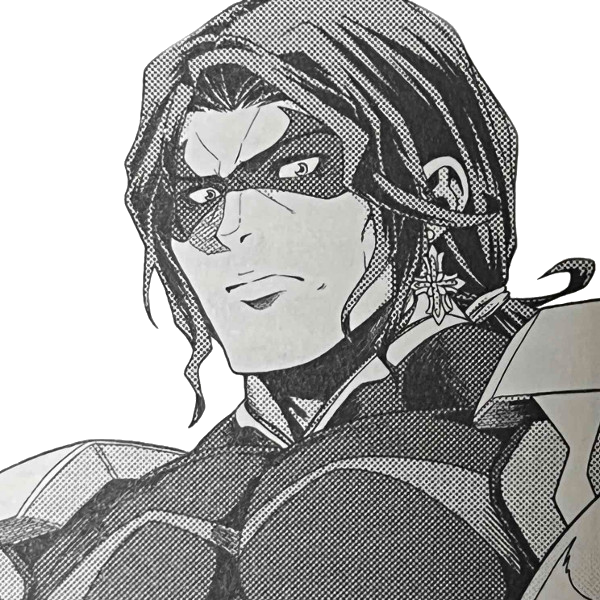
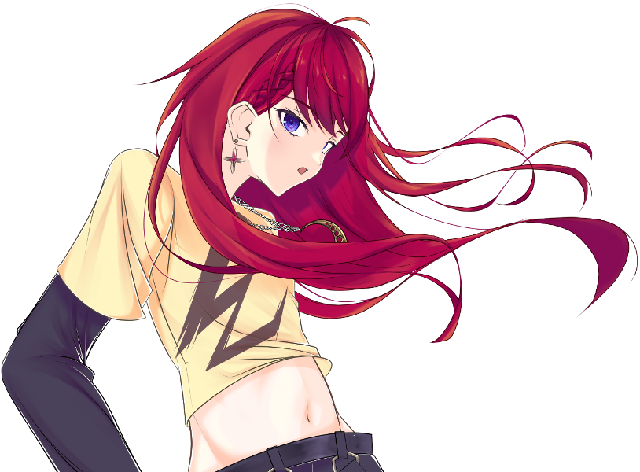
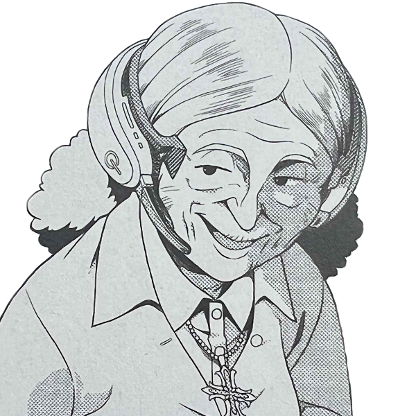
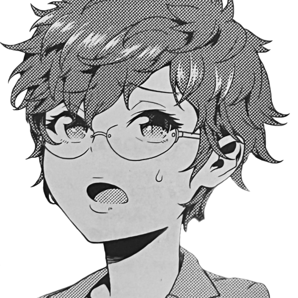

メインログ / 雑談ログ
シナリオ1：「Devil's_Alliance」
シナリオ2：「Blastic Crisis」
キャラシート
PC1：コーネリア (キャラシート) PL：LISPPC2：本野仁 (キャラシート) PL：カピバラ
PC3：サテライト (キャラシート) PL：ふろずん
PC4：佐月零 (キャラシート) PL：めい
PC5：糸金助人 (キャラシート) PL：紫閃
目次
■オープニングフェイズ01 ダークナイト
02 理想の果て
?? 真相の果て
03 騎士の蹂躙
04 廻り出した歯車
05 妄執の正体は
■ミドルフェイズ
06 チーム
07 不滅の存在
08 手がかり
09 情報収集
10 理想の世界
11 ノーマルの支配
12 アルターエゴ
13 ヒーローである理由
14 オーヴァードの支配
メインプレイ
シーン1 ダークナイト
東京 市街地
GM : 夜、降りしきる雨の中。ダークナイトが佇んでいる。

GM : 足元には血溜まり。それは周囲に広がっており、傷ついたヒーローたちが倒れ、うめいている。
GM : ──すべて、ダークナイトに倒されたヒーローだ。
GM : 倒れているヒーローらが、呻きながらつぶやく。
男ヒーロー : 「な、なんという強さだ…これが、No1ヒーローだった男の実力か……」
女ヒーロー : 「くっ…この強さ、本物のパラディンね……」
悪魔ヒーロー : 「まさか、このディアボロスがここまで歯が立たないとは…強すぎる……ッ！」
GM : ……そんなヒーローたちを一瞥もせず、ダークナイトは無言でその場を去っていった。
GM : ──翌日の新聞の1面には、どの新聞社の物もでかでかと倒れたヒーローたちが映った写真が載っている。
GM : 記事には「なぜあのNo1ヒーローがヴィランに！？」「次々と襲われるヒーロー！誰もダークナイトには勝てないのか！？」と、人々の不安を煽るかのように大きく見出しに書かれていた。
GM : ……しかし、それらは全て事実だ。No1ヒーロー・パラディンは悪に手を染めた。そして、彼に敵う者は誰ひとりしていない。
GM : …今の所は。
シーン2 理想の果て
■PC1：コーネリア
ロイス：パラディン
推奨感情 P:憧憬/N:悔悟
No1ヒーローであったパラディンは、悪の仮面を手にとってヴィランとなった。
今はダークナイトと呼ばれ、キミたちヒーローに敵対する存在となってしまった。
今度出会うときは、彼は憧れのヒーローなどではなく、敵となる。
果たしてキミは、彼と全力で戦えるだろうか？
コーネリア : 1d10+33 (1D10+33) ＞ 4[4]+33 ＞ 37
東京 某カフェ
GM : 今となっては遠くなってしまったいつかの日。
GM : コーネリアは、パラディン……いや、スーツを脱いだ彼、"的場敬吾"と共に都内のカフェを訪れていた。
GM : 昭和に迷い込んだかのような、ブラウンが基調となったカフェの隅で小さなテレビがパラディンの活躍を映している。
パラディン : 「大丈夫だ。ここからはもう、誰も死なせない」
GM : 誰もが安心し、「正義は勝つのだ」と信じたであろう彼の決め台詞に、善良な市民たちが湧く。
GM : そのテレビに映る人物が、コーネリアの前で優雅にコーヒーを飲んでいた。

コーネリア : 「どこに行っても"パラディン"の活躍で持ち切りね～」 どこか楽し気に口を付けていたカフェモカを置く。
コーネリア : 「それにしても……」 テーブルに肘をつき手の甲に顎を載せて、休日の”パラディン”の姿を見る。
コーネリア : 「千両役者はスーツを脱いでも絵になる、ってわけ」
コーネリア : 優雅にコーヒーを飲むその姿を見てため息をつく。
的場敬吾 : 「む……それを君に言われるのは、非常に光栄なことかもしれないな。自分ではスーツを脱げばただのおじさんだと思っていたが」
的場敬吾 : 普段生真面目にヒーローをやっている彼が見せないような表情で、冗談めかしたように微笑む。
コーネリア : 「あら、そういうジョークも言うのね？ 素顔のあんたは」
的場敬吾 : 「私だって人間だ。オフの時くらいあるさ」
的場敬吾 : 「君は……いつ会っても、どこで見ても君のままだな」
的場敬吾 : そう、テレビの中で日焼け止めクリームのCMモデルを務めるコーネリアを眺めつつ返す。
コーネリア : 「当然！ ハリウッドスターは私生活もスターでなきゃいけないからね」 CMのポーズを寸分狂いなく再現してみせる
コーネリア : 快活なふだんのパーソナリティは一瞬で鳴りを潜め、映像の中の日本らしい乙女然とした少女の雰囲気を纏う。
GM : パラディンはコーネリアの纏う雰囲気の変化に、少し目をしばたたかせてからフフッと笑う。
的場敬吾 : 「……全く、君にはいつだって驚かされる。私生活も何も、君はありのままを生きているというわけか」
コーネリア : 「ありのまま、って言っていいのかしらね？ 私はいつも何かを演じて、それを見てくれる人がいないと生きられない人間だから」
コーネリア : 「ヒーローの私。女優の私。そして、いまここであんたとコーヒーを飲んでいる私……」
コーネリア : 「全部微妙に違うように見えるけど、人は自分の中に存在しないものを演じることはできないし、どの側面も否定するようなものじゃないわ」
コーネリア : 「……なんて、考えてもわかんないわよね。あ、おかわりくださーい！」
コーネリア : 明るく元気な様子は変わらないが、言葉の端からは”コーネリア”という人間の一部分としてヒーローを務める等身大の少女の苦悩が垣間見える。
的場敬吾 : 「……」しばらく黙り、彼女の様子を見てから再度口を開く。
的場敬吾 : 「演じる、というのは決して悪い事ではない。それは役者ではない私も、そしてヒーローではない人々であっても当然している事だ」
的場敬吾 : 「それが社会で生きるという事だ。相手に合わせ、一番その場をより良い状態で保つのが人間という生き物なのだから」
的場敬吾 : 「……私もかつては、『本当の自分』とは何なのかと苦悩した日もあった。どう生きるのが正解なのか、何を最も大切にするのが『自分』なのか……」
的場敬吾 : 「……どう生きれば、後悔をせずに済んだのか」
的場敬吾 : 小さく息を吐き、首を振る。
的場敬吾 : 「……過去に囚われるのもまた、どうしようもない事だ。さて、話を戻そう」
コーネリア : 「”パラディン”にもあるんだね、そういう悩みは……」 頷いて、深く問いただそうとはしない
的場敬吾 : 「…私もまた、人間と言うわけだ」 肩をすくめて笑って見せる
的場敬吾 : 「君も言った通り、どの一面も否定してはならない。その全てが『本当の君』であり、君を応援する人々がいる事もまた真実なのだから」
的場敬吾 : 「ただ……これはお節介かもしれないが」
的場敬吾 : 「君は生粋の役者で、ヒーローで、そしてまだ16歳の少女でもある」
的場敬吾 : 「そんな君の全てを理解し、支えてくれる人を身近に作ると良いだろう。性別も年齢も人種も、誰だって構わない。人数も多ければ多いほどいい。ただ、君が信じられる人を傍に置きなさい」
的場敬吾 : 「……できるだけ長い間、君と共に歩んでくれる人をな」
的場敬吾 : そう、まるで実の娘に向けるかのような慈しみの籠った声で伝える。
コーネリア : 「簡単にできることじゃないわね。でも……」
コーネリア : 「ヒーローの大先輩がそう言うなら、頑張ってみようかしら」 年相応の、不完全性に満ちた笑顔でそう答える。
的場敬吾 : そんなコーネリアの姿を見て、安心したようにうなずいて見せる。
的場敬吾 : 「ああ。もしそんな仲間ができたなら、私にも報告してくれると嬉しい」
コーネリア : 「オーケイ、きっと一番に報告するわ！」 親指を立てる
GM : そんなやり取りをしているうちに、店員によって「お待たせいたしました」とコーネリアの注文したカフェモカがテーブルに置かれる。
GM : 優しいミルク色ととろけるようなブラウン、そして窓から差し込む暖かな光。
GM : その記憶も、今となってはセピア色に滲んでしまった。
コーネリア : 「――バカね。ここに来たって、時間が戻るわけじゃないのに」
コーネリア : あの日と同じ昭和レトロの雰囲気を纏ったカフェの片隅で、一人つぶやく。
コーネリア : どのチャンネルも、今は”ダークナイト”の話題で持ち切りだが、ニュースの内容は頭の中を右から左へ通り過ぎていく。
コーネリア : もともと日本での活動基盤を持たなかったコーネリアにとって、甲斐甲斐しく自分の面倒を見てくれた”パラディン”は、先輩ヒーローであると同時に歳の離れた兄のような存在だった。
コーネリア : 自分がどんなに速く走っても追いつけない、ずっと先を走る存在のように思っていた。
コーネリア : 「……違う……本当はわかってたはずなのに」
コーネリア : 彼も、自分と同じ迷える青年だった。外から見える強い部分と同じくらい、弱い部分だってたくさん持っていた。
コーネリア : ずっと近くで彼を見ていた、天才役者である自分が、一番それをわかっていたはずだったのに。
コーネリア : 大粒の涙が、冷めきったカフェモカの中に零れ落ちる。
コーネリア : 彼が己の過去を後悔したあの時、もっと自分が踏み込んでいれば、違う未来があったのだろうか？
コーネリア : ……そんな迷いを振り払うように、涙を拭って一気にカフェモカを飲み干す。
コーネリア : 「はは……しょっぱい。あの時と全然違う味だ……」
コーネリア : 時間は伸びたり縮んだりするが、過去には戻らない。どんなに速く走るヒーローでも、それは変えられない。当たり前のことをコーヒーの味から教わって、左右の頬を思いっきり両手で叩く。
コーネリア : じじっ、と髪留めが焦げ落ち、ブロンドの髪がばさっと開いた。
コーネリア : 「行こう……時間は待ってくれない」
シーン? 真相の果て
？？？
GM : "探索者"本野仁は、何処とも知れない真っ暗な空間に迷い込んでいた。
GM : ここは何処なのか、自分は何をしているのか。そもそも地面に足はついているのだろうか。それすらもわからない。

本野 仁 : 「うーん...ここは一体...？」 周りを見渡すも果てしない闇が続いている
本野 仁 : 「実体はあるようですが...」 こぶしを握りっては放すを繰り返し自身の存在を確かめる
本野 仁 : 「ま、とりあえず動いてみますか。案外出口が見つかるかもしれないし」 慣れない感覚に戸惑いつつも一歩ずつ進んでいく
本野 仁 : とまあこんな感じで何かないかなーって感じでうろうろしてます
GM : では、底知れぬ闇の中、行方も分からず歩き続けると。遠くの方に人影が見えます。
本野 仁 : 「おやあれは...っ...同じ迷子の方ですかね」刹那の間嫌な感覚に襲われるも人影のほうに歩み寄る
GM : 近寄ってみると、そこに居たのは黒装束を身に纏った女でした。その女は、振り返る前に貴方に話しかけてくる。

？？？ : 「呆れた。こんな所に逃げ込んでいたのね」
？？？ : 「誰のお情けでここに来たのかは知らないけど…」
？？？ : くる、と振り返る彼女の顔は……なぜか、見えない。靄がかかったような、意識に蓋がされているような妙な感覚を覚える。
本野 仁 : 「ええと、あなたは？どこかでなんとなーくあったような気はするんですけど...」 頭の中で考えるもはっきりとした答えが浮かんでこない
？？？ : 「貴方が思い出せるはずもないわ。貴方は所詮『彼』の出来損ない。こぼれ落ちてしまった魂のレプリカなのだから」
？？？ : 失望……いや、端から期待などしていなかったのかもしれない。平坦な声で、そう返す。
？？？ : 「自分の出自に疑問も持たず、今後も平穏な暮らしを送れると信じて疑わない貴方には出来ない事よ」
本野 仁 : 「む、いきなり人を出来損ない扱いとは失礼ですね」
本野 仁 : 「一応”探索者”ですよ、自分の生まれにだって調べたことはあります」
本野 仁 : 「ただ、自分の元なった人は既に死んでいることしか分かりませんでしたけどね。あとこの名前もですか」
？？？ : 「その『元になった人』って誰？死因は？『分からなかった』、それで済ませてそれで満足なのね？」
？？？ : 「……本当に呆れた。やっぱり、貴方は出来損ない。探索者(たんさくしゃ)ではない」
？？？ : 「"パラディン"…だったかしら？彼が真相に至ったその後を貴方は見たというのに、何も感じなかった？」
？？？ : 「真相を知るのが、怖くなっちゃった？」
？？？ : 彼女は、貴方に向かって矢継ぎ早に語りかけてくる。
本野 仁 : 「そんなことありません！まだ全部が明らかになってないだけ！探し続ければいつかはすべてが分かるんです！」 声を大きくして反論するも虚栄であることはすぐにわかる
本野 仁 : 「真相が明らかになるのが怖くなんか...」 ブラスターの真相を知ったパラディンの末路がよぎり勢いが止まってしまう
本野 仁 : 「っ...！それでも自分は...！」 再びこぶしを握り自身を奮い立たそうとするもその腕がヒトではない何かになっているのに気づいていない
？？？ : 「それでも……何？知らない方が幸せかしら？ルーツとはどんどんかけ離れ、何者でもなくなってしまったと言うのに」腕をちら、と見やる
？？？ : 「それならどうぞ、永久に覚めない都合の良い夢を」
GM : 刹那、脳裏にザザッとノイズが走る。
GM : 『あの日』聴いた激しい雨音。ナイフ。バスタブを満たす鮮血。
GM : 間違えた。間違えた。
GM :
塔のように聳え立つ、円錐の頭部を持つ人型の怪物。触手。邪神。世界を嘲る笑い声。
GM : いつの間にか、目の前から少女は消えていた。身体は、意識はずぶずぶと沈む。昏く、深い闇のうちに。
？？？ : 「『彼』は真相に辿り着けなかった。貴方も、きっとそれは同じ事」
GM : ………
GM : …ぴぴっ！ぴぴぴぴっ！
GM : 間抜けな電子音に、貴方の意識は再度覚醒する。
GM : 目の前は暗い。だが、今回は空間が暗いのではなく、目の前に『何か』がいる。もふっ、ふわっ。
マシュ : 「きゅふん…ハッハッハッ…」
GM : それは、貴方の愛犬のマシュだった。こちらにお尻を向け、胸の上でもちもちと足踏みをしている。可愛いが、正直ちょっと苦しい。
本野 仁 : 「いや...自分は...！」 空に手を伸ばすと同時に目が覚める
本野 仁 : 「もう、乗っかかられたせいで嫌な夢見ましたよ」 ついさっきまで飼い主が感じたことなど関係ないかのように呑気にのしかかる飼い犬に呆れながらも反対の手で頭をなでる
マシュ : 「…！ハッハッハッ！」そんな飼い主の苦労を知ってか知らずか、主の目覚めに嬉しそうに舌を出して、手に頭を擦りつけてくる。
GM : と、そうして飼い犬を構っていると、ヒーローとして活動する際に使用している端末から着信音が鳴る。
GM : 画面に表示されている名前は「霧生冴花」、警視庁ヴィラン課の課長だ。
本野 仁 : 「まったく、休む暇もないですね」 なでるのをやめて端末を取り着信を受ける

霧生冴花 : 「おはようございます。"探索者(サーチャー)"の端末で間違いありませんね」
本野 仁 : 「ええ、"探索者(サーチャー)"...で合ってますよ」
霧生冴花 : 「……？」妙な返事に少し首を傾げる雰囲気が伝わる。
霧生冴花 : 「…いえ、失礼いたしました。本題に移ります。大変急で申し訳ありませんが、至急警視庁ヴィラン対策課までいらしていただけますか」
霧生冴花 : 「"パラディン"……いえ、"ダークナイト"の件について、ご相談させていただきたい事があります」
本野 仁 : 「...はい、問題ないです、すぐに行きます」 ダークナイトの名が聞こえると少し声のトーンが下がる
霧生冴花 : 「ありがとうございます。では、後程」
GM : 電話が切れる。
本野 仁 : 「じゃあ出かけるのでいいこにしていてくださいね」 分かった？と問いかけるようにマシュの頭をなでるて部屋のドアを開けて外へ向かう
本野 仁 :
丁度ダークナイトの話が来て内心ほっとしている
先ほどの少女の言葉、それをしばらく考えなくて済むのだから──
シーン3 騎士の蹂躙
■PC2：本野仁
ロイス：コーネリア
推奨感情 P:信頼/N:不信感
Mrコバルトの計画により、パラディンは、今やダークナイトを名乗るヴィランとなった。
次々とヒーローを襲撃し、叩きのめしているという。
ダークナイトの目的とは、一体なんなのだろうか。
そして、「パラディンの後継者」であったコーネリアは、彼と戦えるのだろうか……。
本野 仁 : 40+1d10 しんしょくー(40+1D10) ＞ 40+9[9] ＞ 49
警視庁ヴィラン課 課長室
GM : 警視庁ヴィラン課、課長室。
GM : 君は、その部屋で霧生冴花と二人きりで対峙していた。
GM : 霧生は、傷つき倒れたヒーローたちの画像を何枚も提示する。
GM : 写真には新米ヒーローもいれば、歴戦のベテラン、名のあるトップヒーローまでいる。
霧生冴花 : 「…本題に移ります。貴方もご存じのように、"ダークナイト"……そう名乗るヴィランによる、ヒーローの襲撃事件が続いています」
霧生冴花 : 「正義の味方であった彼は失墜し、ヒーローなら誰でも、手当たり次第に痛めつけている……という感じです」
本野 仁 : 「そうですね、ブラスターの死によって彼は変わってしまった...」
霧生冴花 : 「ええ。もはや彼は"パラディン"ではない」首肯して
霧生冴花 : 「自分の強さを誇示しているようにも見えますが……何を考えているのか、現時点では見当もつきません」
霧生冴花 : 「……ですが。どのような事情があれど、我々としてはこのまま被害の拡大をただ見ている事はできない」
霧生冴花 : 「そこで、貴方にお声がけさせていただきました」
霧生冴花 : そう、本野を見つめる。
本野 仁 : 「自分ですか...その理由を聞いても？」
霧生冴花 : 「はい」頷き
霧生冴花 : 「我々警視庁は、"ダークナイト"に対抗できるヒーローたちとして、デビルズ・アライアンス事件のチームメンバー……貴方を含めた5人を選出しました」
霧生冴花 : 「我々からの依頼はただ一つ。"ダークナイト"を止めてください。……手段は、問いません」
霧生冴花 : 「危険な任務ですが……お返事をいただけると幸いです」
本野 仁 : 「断る理由もありません、引き受けましょう」 過去の事件で共に戦った4人の顔を思い出す
霧生冴花 : 「……ありがとうございます」立ち上がり、深々とお辞儀をする。
霧生冴花 : 「後程、他のメンバーにもこの事を伝えておきます。……こちらから伝えられることは以上です」
霧生冴花 : 「他、質問等はありますか？」と尋ねてくる
本野 仁 : 「いえ特には...」 少し上の空の様子
霧生冴花 : 「……わかり、ました。何か悩み等あれば、またご連絡ください」その返事に少し心配する様子を見せつつ、本野の返事に頷いて見せる。
霧生冴花 : 「それでは、ご武運を」
シーン4 廻り出した歯車
■PC3：サテライト
ロイス：霧谷雄吾
推奨感情 P:誠意/N:食傷
パラディンが姿を消して、数日が経過した頃。
キミは、霧谷雄吾に呼び出された。
彼が言うには、ダークナイトによって、UGNの研究施設から、あるカプセルが奪われてしまった。
それは、ノーマル（非オーヴァード）にとって危険な存在だという。
ヴィランとなった彼を、止めなければならない。
■PC4：佐月零
ロイス：ナイチンゲール
推奨感情 P:親近感/N:敵愾心
ヴィラン、ダークナイトとなったパラディン。
彼はもうジャーム化している。
ナイチンゲールとともに、ダークナイトに倒されたヒーローを治療するキミには、それが確信できた。
キミの友人、ロボがそうであったように、ジャームとなった者はもう戻れない。
コーネリアに、その覚悟はあるだろうか……。
サテライト : 1d10+45(1D10+45) ＞ 10[10]+45 ＞ 55
佐月零 : 1d10+39(1D10+39) ＞ 4[4]+39 ＞ 43
マンション 佐月零とサテライトの部屋
GM : 某日。"アルターエゴ"の住処である、マンションの一室にて。
サテライト : 「……ん～」
サテライト : ここ数日のサテラの様子は明らかにおかしい。
サテライト : “あのサテラ”が手作りプリンを気にも留めず、
サテライト : 一人きりでスマートフォンとにらめっこして、うんうんと唸りながら、頭を捻っているのだ。
サテライト : ──サテラは元々、興味を持った事柄について気が済むまで調査しようとする性質はあった。
サテライト : しかし、それでも、今回は異常だ。 “あのサテラ”がプリンに手を付けようともしないなんて。

佐月零 : 「……おい、サテラ」 スマホを操作するサテラへと後ろから近付いて声をかける
サテライト : 「……ふ～」
サテライト : 「なんだ？ レイ？」
佐月零 : 「プリン作ったぞ。今日もいらねえのか」 手に持ったトレーの上には二つのカップが並んでいる
サテライト : 「そうだな、それも今はいい」
佐月零 : 「…………」
佐月零 : トレーをテーブルの上に置き、溜息をつきながら椅子に座る。
佐月零 : 「……お前、なんか最近おかしいぞ」
サテライト : 「君がそう思うのならそうなのだろうな」
サテライト : ……先程までの思索も漸く終わったのだろうか、サテラは急に立ちあがり、軽く伸びをした。
佐月零 : 「ま、いいけど……」 プリンをスプーンで掬って
佐月零 : 「調べごとは終わったのか？」 一口食べる
サテライト : 「ああ、もう十分な情報は得たよ」
サテライト : 「今回の事案に関する一般市民とヒーロー業界の反応についてはな」
佐月零 : 「パラディンがヴィランになったことのか？んなこと調べてたのか」
サテライト : 「ああ、必要な調査だったのでな」
佐月零 :
「なんで」
テレビでも一般市民の反応はある程度見れてるので、不機嫌そうにプリンを食べる
サテライト : 「…………」
サテライト : 「そうだな、強いて言うならば未来のためだよ、レイ」
サテライト : そう言いつつ、サテラはごそごそと自分のバッグを漁りはじめた。
サテライト : 「──まあ、それはともかく」
サテライト : そして、今度は何をするのだろうと様子を窺っていると、サテラは徐にカメラを取り出した。
サテライト : そのデジタルカメラは、デビルズアライアンス事件（一話）後、あなたが買い与えたものだ。
サテライト : 少しばかり値が張ったが「ロボに近況報告をするためだ」とねだられては断れなかったのだ。
サテライト : 以来、サテラはそれを常に肌身離さずに持ち歩いている。
サテライト : 堂々と撮影禁止の場所に持ち込んでいたことさえあった。 ……余談だが、その時は監督不行届であなたが怒られた。
サテライト : 当初は気になるものならパシャパシャとどこでもなんでも手当たり次第に撮っていたのだが、
サテライト : その道のプロであるジェイミー西崎に写真の撮り方を習ってからは、カメラの扱い方もそこそこサマになってきた。
佐月零 : 「……？なんだ、何か撮んのか？」 プリンを食べ終わる
サテライト : 「ああ、外出先で二人で撮る事はあっても、この部屋で二人で撮るのは今までなかったろう？」
佐月零 : 「あ？二人で？今ここで撮るってのか？」
サテライト : 「そうだが、何か不満か？ 化粧でもしたいのか？」
佐月零 : 「誰がするか！！」
佐月零 : 「ったく、しょうがねえな……別に不満とかじゃねえよ」
佐月零 : 「でも、いきなりなんで思い立ってるんだ？」
サテライト : 「なんで、と言われてもな」
サテライト : 「私自身も言語化できないから困る」
佐月零 : 「なんだそりゃ。ま、撮るならさっさと撮ろうぜ」
サテライト : 「……そうだな」
サテライト : 「あ、レイ、笑顔でポーズだぞポーズ」
佐月零 : 「ああもう、分かった分かった」
佐月零 : 軽く笑顔を作って、ピースをする
サテライト : 「ピースはありきたりすぎてつまらん、撮り甲斐がない、却下……というかピース(平和)でも何でもないじゃないか現状」
佐月零 : 「どうしろって言うんだよ！じゃあどんなポーズして欲しいか言ってみろ！」
サテライト : 「ふむ、そうだな…」
サテライト : 「では、こうしよう」
サテライト : サテラはあなたの右隣に並び立つと、手でハートマークの片側を作ってみせた
サテライト : 「以前、メイド喫茶とやらにプリンを……ではなく、テレビか何かで見たポーズだ」ﾑﾀﾞﾝﾃﾞ ﾒｲﾄﾞｷｯｻ ﾆ ｲｯﾀﾉｶﾞ ﾊﾞﾚﾙﾄｺﾛ ﾀﾞｯﾀｿﾞ…
佐月零 : 「却下」 即答してサテラの手を軽くはたき落とす
サテライト : 「え～……、つまらん男だな君は～……」ぶー
佐月零 : 「こんなんやるくらいならつまらん男で良いわおれは！！」
佐月零 : 「あぁもう、ピースで良いだろピースで！世の中が平和だろうとなかろうとこういうのはピースで良いんだよ！！」
サテライト : 「こんなんと言ったが、おっぱいプリンもこのポーズしてたぞ」口から出任せ
佐月零 : 「何っ……」
佐月零 : 「それどこでやって……！いや、まあ、そういう仕事だってあるか……」
佐月零 : 「ともかく、かわいい女の子がやるならまだしも、おれがやるのはなんか違うんだよ！」
サテライト : 「えっ、君、以前は自分の事をかわいいと…………」
佐月零 : 「あ、あれは勢いでだなぁ！！……あーもう、ごちゃごちゃ言わずにさっさと撮れ！！」
サテライト : 「それもそうだな、それじゃあ、左側のハートを作ってくれ、ピースじゃないぞハートだぞ」
サテライト : 「もしくは横向きにしたピースを組み合わせてSマークにでもしておくか？」
佐月零 : 「あぁ！？なんだよピースを組み合わせるって……！」
佐月零 : 「……結構アリか？」 想像してみて
サテライト : 「Sマークは“サツキ”と“サテライト”の頭文字という点から、私達のトレードマークのようになってきているし、ハートに抵抗があるならそれでいこう」
佐月零 : 「そうだな……悪くねぇ気がしてきた」
佐月零 : 「よし、じゃあそれでやるか！」
佐月零 : そう言って、ピースした指を横向きに傾ける
サテライト : 「よし、その調子だ」
サテライト : サテラは少し背伸びしながら片手でカメラを掲げ、自分たち二人に向ける。
サテライト : 「それじゃあ次は、君の人生で最高の笑顔をこの一瞬で作ってくれ」
佐月零 : 「無茶言うな！」
サテライト : 「だが、おっぱいプリンなら難なくこなすぞ？」
佐月零 : 「一々コーネリアを引き合いに出すな！」
サテライト : 「そうだな…、考えてみれば、コーネリアは女優、レイはプリン職人だものな…」
佐月零 : 「プリン職人でもねえよバカにしてんのか！？」
佐月零 : 「……あぁもう分かった分かった、やってやるからさっさとシャッター切れ！！」
サテライト : 「ふふっ、ならば、いまの君ができる最高の笑顔をくれ」その様子を見ておかしそうに
佐月零 : 「うるせぇ！世界一の笑顔見せてやるわ！！」
サテライト : 「今度はまた随分と大きく出たな？」
サテライト : 「では、その世界一の笑顔をカメラに向けて……3、2、1」
佐月零 : 「……！！」 力が入り過ぎてめちゃくちゃぎこちない笑顔を作る
サテライト : 「──はい、プリン」パシャッ
佐月零 : 「……よし、どうよ」
サテライト : 「ん～」
サテライト : 「…………この笑顔が世界一？ よくそんなドヤ顔ができたな君？」
佐月零 : 「んだと！？見せてみろ！」 カメラを覗き込む
サテライト : 高性能なデジタルカメラのディスプレイには、ある種の威嚇のような酷く不自然な笑顔を浮かべているあなたが写り込んでいた。 その反面、隣にいるサテラはごくごく自然な笑みを湛えている。
佐月零 : 「…………」
佐月零 : 「よし、世界一だな」 目を逸らしながら
サテライト : 「マジかレイ」
佐月零 : 「マジだ。どう見てもおれの方が良い笑顔してる」
サテライト : 「本気で言っているなら、シャックルズかディアボロスにいいメガネ屋を紹介してもらうといいぞ……」
佐月零 : 「…………」
佐月零 : 「……言ってねーよ……何だこの写真、かっこわる……」
佐月零 :
「消去してくれ……」
ムキになったのを後悔したのか、疲れた溜息をつく
サテライト : 「ふふふふ、いやいや、これを消すのは勿体ない」
サテライト : 「これはこれで面白いじゃないか、おっぱいプリンにも見せるといい」
佐月零 : 「見せれるわけねぇだろーが！さっさと消せ！！」
サテライト : 「断る！ 逆に永久保存してやろう！」
佐月零 : 「ふざけんなサテラ！ちょっとカメラ貸しやがれ！！」 キレながらカメラに手を伸ばして
サテライト : 「はは、それはレイでも出来ない相談だな！」背伸びしたり屈んだり影に入ったりして躱す
佐月零 : 「こいつ……ッ！！」 伸ばした手は何度も宙を掴み続ける
GM : …と。2人がカメラの奪い合いをしていると、零の端末に着信が入る。
GM : 画面には、内閣府のR対策室室長・霧谷雄吾の名前が表示されている。
サテライト : 「おっとアブナイアブナイ……それより、こんな事をしていていいのか？ 着信だぞ？ それも内閣府からだぞ？」
佐月零 : 「なぁ！？こんな時に……！」 端末を睨みつけて
佐月零 : 「あとで絶対写真は消すからな……もしもし！？」 通信に出る

霧谷雄吾 : 「も…もしもし？"アルターエゴ・ゼロオーバー"ですね……今、お時間いただいても大丈夫でしょうか？」普段聞かないような剣幕の声に、思わずたじろぎつつ尋ねる
佐月零 : 「あぁ、すんません……大丈夫です大丈夫です。ちょっとバカの相手してただけですから」 サテラを睨みつけながら
サテライト : あなたの睨みつけを、サテラは悠々と笑顔で流した
霧谷雄吾 : 「ああ……」何やら察した様子で、「お疲れ様です」と貴方を労う
霧谷雄吾 : 「では、本題に移らせていただきます。"ダークナイト"による一連の事件について、また新たに深刻な問題が起きた為、それに関する調査を依頼したくご連絡を差し上げました」先ほどまでとは打って変わり、真剣な声色で。
佐月零 :
「……ダークナイト」
その名を聞いた瞬間、さっきまで抱いていた怒りが消える
佐月零 :
「深刻な問題って、何が起きたんですか？ ……サテラ」
端末をスピーカーフォンにして、二人で聞けるようにする
サテライト : 「ん、矢張りダークナイトについての話か」
佐月零 : 「あぁ……」 端末をテーブルの上に置く
霧谷雄吾 : 「詳細について、ここではお話しできませんが……先日、UGNの研究所が彼によって襲撃され、『ある物』が持ち出されました」
霧谷雄吾 : 「その持ち出された物品が問題で……すみません、通信が傍受されている可能性もある為、あとは対面でお話しさせていただいてもよろしいでしょうか」
佐月零 : 「ある物……？分かりました、もちろん大丈夫です」
霧谷雄吾 : 「ありがとうございます。では、お二人の都合の良い時間帯にR対策室までご出頭願います」
霧谷雄吾 : 最後に「よろしくお願いします」と付け加えた後、霧谷は通信を切る。
サテライト : 「……出頭願います、と言われると、私達が何か悪い事をしたように感じてしまうな」肩を竦めて笑う
佐月零 : 「いやお前、今のはそういう意味じゃ……」
佐月零 : そう言いかけて、自分達がブラスターを救うことが出来なかったあの瞬間を思い出す。
佐月零 : 「…………」
佐月零 : 「……とにかく、行くぞ」
サテライト : 「ああ、そうだな、UGNの杜撰な管理体制こそ悪い事だろうと指摘しにいこう」
佐月零 :
「文句言いに行ってどうすんだよ、ったく……」
呆れたように言って、ヒーロースーツに着替える
佐月零 : 準備を済ませると、サテラと一緒に部屋を出てR対策室へと向かいます。
R対策室 室長室
GM : では、R対策室の室長室に場面を移します。
GM : 部屋の中には、部屋の主である霧谷雄吾、そしてサングラスをかけた男……UGN日本支部長、藤崎弦一も同席していた。
霧谷雄吾 : 「…では、本題に移らせていただきます。先程軽く触れさせていただきましたが…」
佐月零 : 「お願いします。パラディンに奪われたものって一体……？」

藤崎弦一 : 「ああ。……奴が持ち去ったのは、あるカプセルだ」藤崎が言葉の後を継ぐ
藤崎弦一 : 「肝心の中身については未だ不明だ。ご丁寧に研究所のデータベースも破壊してくれた上に研究者も全員重症と来たからな、詳しい事は調査中だが…」
藤崎弦一 : 「現状で確かなのが、ノーマル…つまり非オーヴァードにとって非常に危険なもの、という事だ」
サテライト : 「ふむ、オーヴァードではなくノーマルに対してのみか」
佐月零 : 「んん……おれ達が真っ先に思い当たるのはレネゲイド活性剤だが……」 ロボのことを思い出して小さく唸る
佐月零 : 「それよりももっと危険な代物か……？」
霧谷雄吾 : 「その物がどれだけ危険な物かについて、現状で把握しきれているわけではありません。が…」しばらく逡巡したのち、再度口を開く。
霧谷雄吾 : 「……ダークナイトの標的が、ヒーローのみではなく非オーヴァードの一般市民をも含んでいると言う事実そのものが恐ろしい事であると感じます」
サテライト : 「必死で守ってきた市民にクルリと手の平を返され、あのようにバッシングを受ければ、標的にそれらが含まれるのはムリもないだろう」
佐月零 : 「……ただバッシングされたから、とかそんな単純な理由ならまだマシなんだけどな……」
霧谷雄吾 : 「…真相については、未だ不明のままです。ですが、我々としては最大限市民を守るべく奮闘させていただきたく思います」
霧谷雄吾 : 「だからこそ、貴方方のお力をお借りしたい」真剣な眼差しで2人を見る。
佐月零 : 「あぁ。じゃあ、おれ達の仕事はそのカプセルの調査……。それと、パラディンからカプセルを取り返すってことですね」
霧谷雄吾 : 「その通りです。あるいは、既に使用されていた場合はその対処をお願いしたく存じます」
佐月零 : 「分かりました。サテラもそれで良いな？」
サテライト : 「……いや、そうだな、では先にひとつ質問を」
霧谷雄吾 : 「どうぞ」サテライトを見て。
サテライト : 「ダークナイトを始末しろ、とは言わないのか？」
佐月零 : 「なっ……お前、始末って……！」
藤崎弦一 : 「…随分直接的な物言いをするな」
サテライト : 「オブラートに包み隠すだけ時間のムダだろう？」
佐月零 : 「……あのなぁ、サテラ。時間のムダとかそういう問題じゃねえだろ」 少し怒ったように睨みつけて
佐月零 : 「一体いつからヒーローは殺し屋になったっていうんだ？」
サテライト : 「…………」
サテライト : 「確かにそれはそうだな」
佐月零 : 「ヒーローはヴィランを止めるために戦うんだ。殺すことが目的で戦ったりしねえ」
佐月零 : 「最初から殺すために力を振るうなんて、そんなもんヴィランと同じだ」
佐月零 : 「だからおれ達ヒーローは、たとえどんな悪党が相手でも殺したりなんてしねえ……」
佐月零 : 頭の中に再び、ブラスターが死んだ時の光景が蘇る。
佐月零 : 「……殺しちゃ、いけねえんだ。そういうもんだろ、サテラ」
サテライト : 「ダークナイトを相手取るならば、全力で立ち向かわなければ勝機はない、ほとんど殺し合いに近いものになるだろう……そう考えて“始末”という言葉を使ったが、確かにそれはヒーローに命じるものではなかったな」
佐月零 : 「そういう意味で言ったのかよ……まあ、分かってりゃいいんだ」
サテライト : 「……と話の腰を折ったな、続けてくれ胃がキリキリ谷」
佐月零 : 「失礼だろうが！！」
霧谷雄吾 : 「ハハ…いえ、あながち間違いではありませんので」苦笑いして
サテライト : 「元はと言えばUGN側の失態なのだから、多少のシツレイはいいだろう。 ……まあ、それも、UGNの情報を握っている元No.1ヒーローが襲ってきたとなれば、仕方のない話だろうが」
佐月零 : 「ほんと甘やかさずに怒ってくれていいんすよ……」 片手で顔を覆ってる
藤崎弦一 : 「……」本当に失礼な奴だな、と思いつつ何も言わない。
サテライト : 「……」この藤崎とかいう奴はなんで室内でサングラスかけてるんだ、と思いつつ何も言わない。
霧谷雄吾 : 「いえ…こちらも依頼をしている身ですので」暗に教育は任せた、って態度を取り
霧谷雄吾 : 「…さて。話を戻しますと、事実、ダークナイトの対処については今もヒーロー複数人に依頼をしています」
霧谷雄吾 : 「彼らがダークナイトに敗北したならば、貴方方にもその依頼が来るかもしれません。…ですが、現時点ではお二人にはカプセルに関する依頼に集中していただきたいと思います」
霧谷雄吾 : 「…何しろ、今回紛失したカプセルは物が物です。もし表沙汰になったならば、一般市民の動揺は計り知れないものとなるでしょう…だからこそ、信頼できるヒーローであるお二人にお願いさせていただきたいのです」
佐月零 : 「……分かりました。ヒーローとして、その信頼に応えます」
サテライト : 「カプセルが最優先だな、理解したよ」
佐月零 : 「既に使われたカプセルの対処をするにしても、パラディンから取り返すにしても、まずはカプセルの内容が何なのかを調べるところから……か」
佐月零 : 「じゃあ、さっそく動きます。行くぜ、サテラ」 席から立ち上がる
サテライト : 「ああ」
霧谷雄吾 : 「よろしくお願いします」
藤崎弦一 : 「…頼んだ」退出する2人の背中に声をかける。
佐月零 : 二人に一礼して、部屋から出て行こう！
東京 市街地
GM : では、2人がR対策室を出てから数分後。再度、零くんの電話に着信が入ります。
佐月零 : 「ん？もしもし？」 電話に出ます
ナイチンゲール : 「ああ、出たね。悪いが、すぐにこっちに来てくれないかい。人手が足りなくてね」
GM : “ナイチンゲール”阿見寺ひとえだ。普段よりも気持ち焦りを帯びた声色で、あなたにそう問いかけてくる。
佐月零 : 「ナイチンゲール。人手が足りないって、一体どうした？」
ナイチンゲール : 「パラディン…ああいや、今はダークナイトか。アイツがまたひと暴れしたもんでね、ヒーローがそれはもう大量に運び込まれているのさ」
ナイチンゲール : 「おかげで病院はてんてこ舞いさね」
サテライト : 「ふむ、今日は先が永くなさそうな奴からよくかかってくるなレイ」
佐月零 : 「失礼なこと言ってる場合か！」
佐月零 : 「あー、でもおれ達も今仕事が……」 と、少し考えて
佐月零 : 「……いや。分かった、すぐに向かう」
ナイチンゲール : 「…悪いね。ピークさえ過ぎればすぐに帰すから」よろしく頼んだよ、と言い残してナイチンゲールは通信を切ります。
佐月零 : 「サテラ、病院に行くぞ。パラディンにやられたヒーローの治療が追いついていないらしい」
サテライト : 「それは聞いていた」
サテライト : 「それよりも、てっきり君はヒーローの仕事を優先して断るものかと思っていたが？」
佐月零 : 「そうだな、おれも断ろうかと一瞬考えた……」
佐月零 : 「……でも、この目でちゃんと見ときてぇんだ。パラディンが何をしたのかを」
サテライト : 「……そうだな、それもいいだろう」
サテライト : 「それに、さっき頼まれた仕事とも無関係な行動でもないしな」
佐月零 : 「パラディン関係のことだし、それもそうか……。よし、今度こそ時間をムダに出来ねえ、行くぞ！」
サテライト : 「それもあるが、例のカプセルが既に使用されているならば、ナイチンゲールのいる病院にも既に担ぎ込まれた被害者がいるだろうからな」
サテライト : 「タクシー代くらいは出してもらえるだろうし、急ぐついでに、フィクションのように『飛ばしてくれ！』と言ってみて、実際はどの程度の速度を出すのか検証してみようじゃないか」
佐月零 : 「んな検証してる場合か！こっからだとそう遠くねえんだ、走っていくぞ！」
サテライト : 「走るのか…………」残念そうな顔
佐月零 : 「嫌ならおれの影の中にでも入っとけ！」 そう言って病院の方角へと走り出す
サテライト : 「ではそうさせてもらうよ」≪闇夜の烏≫を使って影もぐりーん
佐月零 : オーヴァード身体能力をフルに使って、病院まで真っ直ぐに向かいます！
東京 某病院
GM : では、程なくしてナイチンゲールの勤める病院に到着します。
GM : エントランスから入ると、そこには軽傷──と言っても、この程度の傷を負っているなら撤退を考える程度の物──を負ったヒーローが大勢座っている。
GM : 駆け出しの新人から名のあるトップヒーローたちまで……まるで、東京中のヒーローが集まったような有様だ。
GM : 二人が病院の奥へと進んでいく最中にも、その後ろから担架で担がれた重症のヒーローたちが大急ぎで運び込まれていく。
GM : あるヒーローの腕はひしゃげ、またあるヒーローは喉を潰されたのか、呼吸すらままならない様子で苦し気に首を抑えている。オーヴァードの力を以てしても、体の再生が追い付いていないのだ。
佐月零 : 「……ひでぇ。こんなの今まで見たことねぇ……」
サテライト : 「……まさかトップヒーロー達までいるとはな、いいやそれも当然か」
サテライト : 「比類なきNo.1ヒーローだった男が、侵蝕率を気にせずに破壊のためだけに力を振るえばな」
佐月零 : 「…………」 返す言葉も見つからず、痛々しそうに運ばれていくヒーロー達を見ている
GM : そうしていると、聞き覚えのある声が背後から飛んでくる。
ナイチンゲール : 「来てくれたんだね、ありがとう！悪いが、これから運ばれてくる急患を受け付けてはくれないかい…！」
ナイチンゲール : そこにいるのはナイチンゲールだった。普段の飄々とした雰囲気はなく、真剣な様子で二人に頼み込んでくる。
佐月零 : 「……！ナイチンゲール！あぁ、分かった！」
サテライト : 「そうだな、応急手当が関の山だが、それでも構わないのだろう？」
ナイチンゲール : 「ああ、専門的な事はこっちのスタッフに任せな。後の事はそこのナースに聞いとくれ！」そう言い残して、彼女は病院の奥へと消えていった。
佐月零 : 「あぁ……！よし、やるぞサテラっ」
サテライト : 「うむ」
サテライト : 「(そして、最も近い場所で見つめるといい……、パラディンが、ダークナイトが、この惨状を引き起こしているという真実をな……)」
GM : ……急患への対応がひと段落した後。二人の元にナイチンゲールがやってくる。
ナイチンゲール : 「本当にすまなかったね。でも、おかげで助かった」ありがとう、と頭を下げる彼女は、疲弊した様子ながらもしゃんと背筋が伸びている。まだまだ気を抜くつもりはないらしい。
佐月零 : 「……いや、役立てたなら……何よりだ」 少し疲れた声で
サテライト : 「それはいいが、今度は自分がベッドで寝なければならないような本末転倒にはならないようにな」
ナイチンゲール : 「まだまだ。アタシを誰だと思っているんだい」安心させるように笑って見せる
ナイチンゲール : 「……しかし、流石に酷いもんさね。まるで、あの頃……レネゲイドウォーみたいな有様さ」
佐月零 : 「レネゲイドウォー、か……」
佐月零 : 「あの頃と同じような被害を、本当にパラディンが一人で出し続けてるっていうのかよ……」
ナイチンゲール : 「……ああ。恐ろしい事にね」
ナイチンゲール : 近くにある自販機で購入したアイスココアを二人に手渡しつつ、言葉を続ける。
ナイチンゲール : 「ついさっき、UGNの方にあるラボからパラディンに関する解析結果の通達が来たよ」
佐月零 : 「解析結果……それって、侵蝕率とかのか……？」
ナイチンゲール : 首肯する。
サテライト : 「ふむ？」アイスココアか…と思いつつ
ナイチンゲール : 「残酷な事を言うよ。だがこれは真実だ」
ナイチンゲール : 一呼吸置き、
ナイチンゲール : 「パラディン……いや、ダークナイトは間違いなくジャーム化している」
ナイチンゲール : 「アタシたちの知っているパラディンは、本当に死んだという事さ」
佐月零 : 「……っ！！」
佐月零 : 肩が震え始め、抱え込んでいた怒りや悔しさが抑えきれなくなる。
佐月零 :
「……クソッ！！」
近くの壁を力任せに殴る。渡されたアイスココアは床に落ち、びしゃっと零れた。
サテライト : 「…………」
佐月零 :
「なんでだよ……！なんで、ジャームになっちまったんだよ……パラディン……ッ！！」
答えははっきりと頭では分かっているが、それでも叫ばずにはいられない
サテライト : 「パラディンは比類なきNo.1ヒーロー、つまりその負担もNo.1だったのだ……」
サテライト : 「それに加えて、家族から相棒まで、身近なものを全て失い、支えを失くしていた……」淡々と事実を並べ立てる
サテライト : 「さらには、守ろうとした市民による追い打ち……」
サテライト : 「ジャームになる条件は、これ以上なく揃っていると思うが」
佐月零 : 「……うるせえ……」
佐月零 : 「おれ達じゃ……あいつの支えにはならなかったっていうのかよ……っ」
サテライト : 「逆に聞くが」
サテライト : 「No.1ヒーローの絶大な負担に釣り合うほど、彼の支えになれていたか？」
佐月零 : 「…………」
佐月零 : 思わず、相棒の顔をぶん殴りたくなる気持ちに駆られる。だがそれは彼女が言った事実を心の中では認めるしかなく、そしてその言葉を口に出す勇気もないからだ。
佐月零 : 「……チクショウが」 震えた声でそう呟く
サテライト : 「ああ、勘違いはしないでほしいのだが」
サテライト : 「私は君を責めている訳ではない」
サテライト : 「……これはヒーロー業界全体の問題なのだから」
佐月零 : 「…………あぁ」
佐月零 : 「そう、だな……。分かってるよ……」 壁に叩きつけた拳をゆっくりと下げる
佐月零 : 「おれ達だけの問題じゃねえ……それでも……おれはおれを責めずにはいられねぇってだけだ……」
サテライト : 「……そうか」
サテライト : 「ならば、君がすべき事はここで壁を殴る事ではない」
サテライト : 「そうだな？」
佐月零 : 「……あぁ、そうだ」
佐月零 : 「分かってるよ……相棒」 伏せていた顔を上げる
サテライト : 「……よし、その調子で頼むぞ」
佐月零 : 「……おう」
佐月零 : 「………………」
佐月零 :
「……サテラ、ありがとな」
まだしっかりと頭が冷えたわけではないが、自分一人ではもっと落ち着いてはいられなかっただろう、と理解している
サテライト : 「……礼を言われるような事をした覚えはないが」
サテライト : 「まあ、いい歳をして世話が焼けるとは思うよ」冗談めかして
佐月零 : 「お、お前なぁ……！」 普段どっちが世話焼いてると思ってんだという目
サテライト : 「ふふっ、これからは一人でも冷静な行動ができるようになってもらわないと困るな」
佐月零 : 「うるせえ！……ったく」 釣られてふっと小さく笑う
サテライト : 「では、さっそく調査に出るとしようか……っと老婆にひとつ聞きたい事があるんだった」
ナイチンゲール : 「…ん？ハァ？老…なんだって？」先程まで2人のやり取りを穏やかな態度で見ていたが、それとは別種の圧を帯びた笑顔を浮かべて
サテライト : 「……あ～、オネエサンと言ったぞ？ つかれて耳が遠くなっているんだろう、少し休んだ方がいいんじゃないか？」
佐月零 : 「ナイチンゲール……」 そこはやっぱりキレるんだな……って見てる
ナイチンゲール : 「フン。休むのは今の時間で十分さね…全く、失礼なガキだね」溜息を吐き
ナイチンゲール : 「それで、聞きたい事ってのは何だい？」
サテライト : 「UGNの研究所から“ノーマルに有害なカプセル”が盗まれたらしいのだが」
サテライト : 「何か心当たりはないか？」
ナイチンゲール : 「待ちな。その話、どこで聞いた？」
ナイチンゲール : 「まだアタシは事情を聞いてないよ。…もしかして、R対策室から依頼でも？」
佐月零 : 「あぁ、霧谷さんからだ。ついさっき依頼を受けたんだよ」
ナイチンゲール : 「なるほどね。全く…おそらくは秘密裏に動いてた事なんだろう。そう簡単に人に話すもんじゃないよ」そうサテライトに忠告する。
サテライト : 「む、別に簡単に話したつもりはないぞ」
サテライト : 「ナイチンゲールがこの情報を漏らすリスクは低いし、医療に携わる者に協力を仰いだ方が情報を得られる可能性が高い、と踏んでの判断だ」
佐月零 : 「そうだな。それに霧谷さんはおれ達アルターエゴを信頼して依頼してくれたんだ」
佐月零 : 「そのおれ達が信頼してるヒーローになら、話したって問題はねえはずだぜ」
ナイチンゲール : 「……フン。まあ、アンタ達の信頼を裏切りゃしないよ。誰にもバラシはしないし、恐らくはこちらの業務がひと段落つき次第同じように連絡が入っていただろうからね」
ナイチンゲール : 「ただ、そそっかしいアンタらの事だ。霧谷の許可も得ずについでに〜って感じで来たんだろう？どうするんだい、万が一ここに盗聴器でも仕掛けてあったら」
佐月零 : 「それは……お、おいサテラ、どうするんだ」
サテライト : 「正直、考えてなかったな」
サテライト : 「だが、まあ、いいんじゃないか？ それはそれで結局は止めるのだから」
佐月零 : 「……っていうか、盗聴器なんか仕掛けられるナイチンゲール達病院側が悪いんじゃねーか？」
サテライト : 「ｿｳﾀﾞｿｳﾀﾞｰ」
ナイチンゲール : 「こんのガキども…ああ言えばこう言うだね！」ガッと怒鳴りつけ
サテライト : 「おおう、そう怒鳴ると血圧があがるぞ」
佐月零 : 「わ、悪かった、悪かったって！！」
ナイチンゲール : 「ったく…次からはリスクを考えて行動しな！」サテライトをポカリと叩きつつ
サテライト : 「あたっ」
ナイチンゲール : 「……さて。言った通り、アタシはまだ事情を何も聞いちゃないよ。当然パッと思いつく心当たりもない」
ナイチンゲール : 「だが、余裕が出来次第こちらのツテを使って色々調べてみるよ。大した事じゃないが、さっきの礼でね」
佐月零 : 「あぁ……助かるぜ」
サテライト : 「さっきの礼……ということは、さっきの仕事のバイト代というヤツは出ない……？」
ナイチンゲール : 「落ち着いたら何かしら考えておくよ。それまではお預けさ」
サテライト : 「おお、それも出るのか、よかったなレイ」
佐月零 : 「いや別にバイトしにきたわけじゃねぇんだから……」
ナイチンゲール : 「そうだよ。しかもそっちのガキはこっちに床掃除までさせようって言うんだからね」床を濡らすアイスココアを見やって
佐月零 : 「あっ、忘れてた！！」 足下を見て
サテライト : 「私が食事を学び始めた頃には、何かを零したら散々怒ったくせにな」
佐月零 : 「状況が違うだろーが！！」
ナイチンゲール : 「冗談さ。……ほら、仕事があるんだろう。とっとと行きな」
ナイチンゲール : 「あとはこっちでやっておくから」
佐月零 : 「ナイチンゲール……。わりぃ、じゃあ行かせてもらうぜ」
サテライト : 「では、レイのおねしょの後始末は頼んだ」
佐月零 : 「おねしょじゃねーよ！！」
ナイチンゲール : 「漫才している場合じゃないよ。……と、その前に」2人を呼び止める
ナイチンゲール : 「さっきも伝えた通り、パラディンは今やアタシ達の敵だ。覆しようがないくらいにね」
ナイチンゲール : 「アンタらは2人揃っていれば大丈夫だろうさ。だが……前にパラディンと共にチームを組んだメンバーは特にショックを受けているんじゃないのかい。…中でもコーネリアは、彼と近いところに居たんだろう？」
佐月零 : 「……あぁ。コーネリアはパラディンと特に親しかったように見えた……」
ナイチンゲール : 「やはりそうかい……」しばらく目を瞑ってから、2人に向き直る。
ナイチンゲール : 「もしダークナイトと相対して、共に立つ仲間が覚悟を決められなかったなら。その時は、アンタらが支えてやりな」
ナイチンゲール : 「もちろん、ゼロオーバーにユニコード、お互いの事もだよ。わかったね？」
佐月零 : 「覚悟……か」
佐月零 : 「……分かった。おれ達はコンビだし、コーネリアとはチームだ」
佐月零 : 「何かあったら、ちゃんと支えるさ……今度は、ちゃんと」 ナイチンゲールの目を真っ直ぐに見つめて
サテライト : 「…………」
GM : そうしていると、病院の奥からナースが駆けてくる。
ナース : 「お話中失礼します！ナイチンゲール、先ほど運び込まれたヒーローが目を覚ましました…！」
ナース : 「ただ、その…随分と錯乱している様子で…！」
ナイチンゲール : 「……！わかった、すぐに行くよ！」
ナイチンゲール : 「…呼び止めてすまないね、もう行っておくれ。信じているよ」と2人に声をかけ、病院の奥の方へと駆けていく。
佐月零 : 「あぁ！行くぜ、サテラ……！」 ナイチンゲールに背を向けて
サテライト : 「…………なあ、レイ」レイくんのヒーロースーツの裾を引いて引き留める
佐月零 : 「うお、なんだ！？」 走り出そうとしてたのでつんのめる
サテライト : 「いや、ひとつ大事な話があったのだが」
サテライト : 「──先ほど老婆に忠告された通り、こんな場所でする話でもないか」
サテライト : 「後で話すよ、とりあえず行こう」
佐月零 : 「はぁ？何なんだよ全く……」
佐月零 : 「まあいい、だったら後で聞く！まずは調査だ！」 病院の出入り口へと歩き出す
サテライト : 「……そうだな、それでいい」
佐月零 : 病院から外に出て、雲に覆われた空を仰ぎ見る。
佐月零 : 「（……ノーマルに危険なカプセルなんか持ち出して、お前はこれから何をするつもりなんだ？）」
佐月零 : 「ジャーム化したお前は、一体何を考えているんだよ……パラディン」
佐月零 : この灰色の空の下のどこかにいる彼の名を呼び、そう問いかける。しかし、答えは返って来るはずもなかった。
佐月零 : パラディンにロイス取ります！P執着/N悔悟で、執着が表です
system : [ 佐月零 ] ロイス : 3 → 4
サテライト : 固定ロイスのパラディンをダークナイトに変更して、同情(P表)/脅威から同情/脅威(N表)に変更します！
GM : 了解しました。
シーン5 妄執の正体は
■PC5：糸金助人
ロイス：ディアボロス
推奨感情 P:友情/N:嫌気
キミの腐れ縁の知り合い、春日恭二が、ダークナイトに敗北して入院した。
不死身の春日はいいとして、かつてのヒーロー、パラディンは一体何をするつもりなのか。
このまま、暴走を許すわけにはいかない。
糸金 助人 : 1d10+34(1D10+34) ＞ 9[9]+34 ＞ 43
東京 某病院
GM : ダークナイトによる一連の事件で、君の腐れ縁──"ディアボロス"こと春日恭二が負傷させられ、病院に運び込まれたという連絡があった。
GM : 君は彼の様子見、もといお見舞いの為に病室を訪れた。
GM : 廊下から病室を覗いてみると、春日恭二は包帯でぐるぐる巻きになった状態でベッドで寝ている。口はへの字になっており、どう見ても不機嫌そうだ。

糸金 助人 :
「不機嫌になる余裕あり……と」
想像していたよりも様態は悪くなさそうで少し安堵したような吐息が漏れた
糸金 助人 : 小さく咳払いを1つして病室に入っていく
糸金 助人 : 「さすが。不死身の名偽りはなし…か」
糸金 助人 : 「……無事かい、“ディアボロス”春日恭二？」

春日恭二 : 「……む。来たか」咳払いで気づき、あなたを迎える。
糸金 助人 : 「ああ、君がパラディンにコテンパンにされたって聞いてね」肩を竦めて それから 邪魔するよ、とベッドに浅く腰掛ける。
春日恭二 : 「フン、コテンパンとは失礼な。私は不死身のヒーローディアボロスだ、この通りピンピンしているじゃないか」包帯の巻かれた腕を軽く動かしてみせる…が、すぐやめる。怪我が痛むのだろう。
春日恭二 : 「…と言っても、流石にこれは強がりだ。パラディン……いや、ダークナイトはあまりに強大すぎる」
春日恭二 : 「結局こうして敗北を喫するハメになったからな…クソッ…」そう、悔しげに悪態を吐いている。
糸金 助人 : 「……だろうね。今回に至っては君の力及ばず…とかいう問題じゃない」
糸金 助人 : 「……相手があのNo.1ヒーロー…パラディンだからね」俯きがちに目を閉じてため息をひとつ
春日恭二 : 「……アレは恐らく、それだけじゃない」
春日恭二 : 「バラディンが強いのは事実だ。だが、あれは全く別物の化け物のようだ……優秀なヒーロー複数人にかかられても復活し、彼らを蹂躙する異常なまでの生命力を持っている」
春日恭二 : 「……いや、生命力と言うよりは、異常なまでの意志……まるで、不滅の妄執に突き動かされてるかのようだった」
春日恭二 : そう、己の見解をぽつぽつと記憶を拾うように呟く。
糸金 助人 :
「……不滅の妄執、か。いったい彼は何をしようとしてるんだろうな」
壁の方を見つめたまま、その言葉に耳を傾ける。
糸金 助人 : パラディンがダークナイトへの変貌した状況、テレビで連日報道されるニュースの数々、そして実際にその目で見たディアボロスの証言……
糸金 助人 : パズルのピースがはまる度に助人の脳内で成される推論は最悪な方へと向かうばかりだった。
春日恭二 : 「さてな…だが、あの意志の源、アイツが闇に堕ちてまで果たそうとしている目的。そこを突き止めない限り、ダークナイトを倒すことは倒せないだろう」
春日恭二 : 「……」思いつめた様子の糸金を見て、コホンとひとつ咳ばらいをする。
春日恭二 : 「フン！しかし、あのパラディンを倒す方法を考える羽目になるとはな……本来ならばこんな形ではなく、ヒーローランキングで争うはずであったのだが」
糸金 助人 :
「はは、君がそれを言うならまずヒーローランキング50位を物にするところからなわけだけど？」
咳払いに思考を中断していつものように茶化してみせる
糸金 助人 : 「……ひとまず、君の言う通り彼が何に執着しているのか…その目的を探ることからかな。相手は無策で突っ込んで敵う相手じゃない」
糸金 助人 : 「恐らくそろそろ僕の方にも要請がかかるだろう……一連の事件の関係者ではあるからね」すっとベッドから立ち上がる
春日恭二 : 「……ああ。恐らくはな…」しばらく黙ってから、再度口を開く。
春日恭二 : 「……糸金。今回の件は、私達にとっても他人事ではないぞ」
春日恭二 : 「ヒーローも、ヴィランも、オーヴァードである事には変わりない。無論、ジャームもだ……我々は常に、表裏一体の関係にある」
春日恭二 : 「もしボタンを掛け違えたならば、私とてヴィランになっていたかもしれない」
春日恭二 : 「そしてそれは、お前にとっても同じ事だ。……己を見失うな。無事に帰って来い」
春日恭二 : そう、己の手を見つめながら伝える。
糸金 助人 : 「……ああ」短くそう答えて
糸金 助人 : 「それじゃあ、僕はもう行くよ。無茶して看護師さんに叱られるなんて止してくれよ？」扉の方へと向かいながら
糸金 助人 :
「……お大事に」
そう言って振り返る助人。
糸金 助人 : その姿に春日恭二は1つの記憶を呼び覚まされる。
糸金 助人 :
降りしきる雨の中。外された血に塗れた仮面。
振り返った彼は泣きそうな顔で笑っていた。

糸金 助人 : 『……僕には、救えなかった』
糸金 助人 : “シャックルズ”が全てを諦めた日。自分の無力さを思い知りヒーローという名を手放したあの日。
糸金 助人 : 目の前にいる糸金助人の表情が8年前のそれと重なる。
春日恭二 : 「……」糸金の背中が、あまりに小さく見える。まるであの日のように、そのままどこか知らない場所に行ってしまうのではないか……。
春日恭二 : ……そして、今度こそ彼は帰って来ないのではないか。
春日恭二 : 「……おい！」お大事に、と言われた直後にも関わらず怒鳴りつける。
糸金 助人 : 「っ！？」突然の大声に肩を揺らし、振り返る
春日恭二 : 「恐らくは、今回またあのチームが召集されるのだろう！そうなった時、チームにおける最年長は私ではなく貴様になる！」
春日恭二 : 「だと言うのに、貴様が腑抜けていてどうする！しゃんとしろ、ライバルとして情けない！」
春日恭二 : まだ足りないらしい、ベッドから半身を乗り出した状態で捲し立てる。
春日恭二 : 「"シャックルズ"はこれまでも、そしてこれからも、大勢の人間を救う！ノーマルのみならず、ヒーローやヴィランまでもな！」
春日恭二 : 「……仮にまた貴様が逃げたならば、悪魔(ディアボロス)は地獄の果てまで追いかけるぞ。今際の時まで私が共にあるとなれば、流石の貴様も堪えるだろう？」
春日恭二 : そう、どこかヴィランじみた表情で言ってのけてからふうと溜息を吐く。
糸金 助人 : 「……っ、春日…君は…」言葉に詰まる、胸のあたりが熱くなるのを感じる。
糸金 助人 : 「……あーあ。まったく、付き合いが長いってのも嫌なもんだね」ふっとそっぽを向くと、そう絞り出したように言葉にする。
糸金 助人 : 一呼吸、二呼吸置いてから
糸金 助人 : 「……僕が、あとを託していなくなるなんて無責任なことするタイプに見えるかい？」
春日恭二 : 「フッ……ついさっきまでのお前はな」眼鏡越しに目を細めてから鼻で笑って見せる
糸金 助人 : 「はっきり言ってくれるね君も……」文句を言いたげな顔をするがそのまま情けない顔で笑って
糸金 助人 :
「――諦めないさ。今は1人で戦ってるわけじゃない、僕だけの思いでヒーローをやってるわけじゃないんだ」
家族の顔、教え子の顔…そして共に戦ったチームメイトの面々が頭を過ぎる。
糸金 助人 : 「まあ、1人じゃないとは言ったものの君に地獄の果てまで追い回されるのはごめん被りたいけどね」肩を竦めていつもの調子で軽口を言って笑う
春日恭二 : 「馬鹿め、こちらからも願い下げだ」クク、と低く笑い
春日恭二 : 「分かっているなら良い。……ほら、行け。貴様のアホ面は良い見舞いになったが、流石にもう見飽きた」
春日恭二 : シッシッ、と追い払うような仕草をする。
糸金 助人 : 「……ああ」
糸金 助人 :
「…ありがとう、春日」
そう言って再び背を向けて扉に手をかける。今度は振り向かずにそのまま部屋をあとにする。
春日恭二 : 「……フン」糸金の後ろ姿を見送った後、腕を組み目を閉じる。……不安がないと言えば嘘になる、だが…
春日恭二 : ……今の彼であれば、また帰ってくるはずだ。そう確信するだけの信頼関係がある事も、また事実であった。
シーン6 チーム
GM : 登場PCは全員です、登場侵蝕お願いします。
コーネリア : 1d10+37(1D10+37) ＞ 8[8]+37 ＞ 45
本野 仁 : 1d10+49(1D10+49) ＞ 2[2]+49 ＞ 51
サテライト : 1d10+55(1D10+55) ＞ 6[6]+55 ＞ 61
佐月零 : 1d10+43(1D10+43) ＞ 8[8]+43 ＞ 51
糸金 助人 : 1d10+43(1D10+43) ＞ 1[1]+43 ＞ 44
R対策室セーフハウス 会議室
GM : R対策室の用意した会議室に、かつてのチームメンバーが集まった。
GM : 場所といい面子といい、皆が初めて会った時と似たシチュエーションだ。
GM : ……しかし、そこにバラディンとディアボロスの姿はない。
GM : 部屋に設置されたテレビでは、且つてパラディンと呼ばれた男──ダークナイトの事件が流れている。
TVキャスター : 「速報です、ランキング3位、フェンリルバイトがバラディンに倒され重傷！」
TVキャスター : 「この最強のヴィランを止められるヒーローは、もうどこにもいないのでしょうか…」
佐月零 : じゃあそのテレビの側面を苛立ったように叩き、電源を消す。
佐月零 : 「……クソッ。こうしてる間にもまだ被害が広がってるのか……」

コーネリア : 「トップヒーローもどんどんやられてる……街に残されている戦力は少ない」
コーネリア : 普段は頭の右側でまとめている髪を下ろし、目を瞑って椅子に座っている。
本野 仁 : 「...ここにいる5人がまだ標的になっていないことはまだ幸運なことですかね」部屋の隅にもたれかかっている
佐月零 : 「デビルズアライアンスの時と同じメンバーか……だからおれ達が集められたってことは分かるけど」
佐月零 : 「ディアボロスはどうしたんだ？」

糸金 助人 : 「……彼は今病院で治療を受けているよ。今回の作戦には参加できそうにないけれど、命に別状はなさそうだったよ」あえてパラディンの名前は出さずに
サテライト : 「また治療か、相変わらずだなミスター七転び八起きは」パラディンに倒された事を察しつつ
佐月零 : 「そんなあだ名ねえよ！……まあ、生きてるならそれだけでも安心だ」
佐月零 : 「じゃあ、それなら本当にこの五人で何とかするしかねえってわけだな……」
コーネリア : 「有力なヒーローもどんどんやられていってる。チームを組んで戦える私たちが倒れたら……」
コーネリア : もう立て直しはできないかもしれない。声に出すと事実になってしまいそうな気がして、口をつむぐ。
佐月零 : 「……コーネリア。お前、大丈夫か？」
佐月零 : 「相手はあのパラディンだ、戦えるヒーローは少しでも多い方が良い……けど、お前が無理することはねえんだぞ」
コーネリア : 「……ありがと」 いつもより少し物憂げな笑みを見せる。
コーネリア : 「気遣いは嬉しいけど……それでも何もせずにはいられないから」
佐月零 : 「……そうか。だったら、中途半端に止めるのは無しだな」 小さく笑い返して
佐月零 : 「おれだって、何もせずにはいられねえんだからこうして動いてるわけだしな」 皆もそうだろう、という目で見て
サテライト : 「…………」
本野 仁 : 「そうですね、動かないよりはマシだと思いますよ...」 多分と最後は聞こえないような声でつぶやく
糸金 助人 :
「……そうだね、誰かが止めなくちゃいけない」
穏やかな表情で頷いてみせる
佐月零 : 「……よしっ！」 パンッ、と自分の気合を入れるように手を拳で叩いて
佐月零 : 「だったら、これからの方針を決めて行こうぜ！動くと決めりゃ、時間を無駄にはしてらんねえ！」
コーネリア : 「そうね！ 状況はどんどん苦しくなってる……今できることを、ひとつでもやっていかなきゃ！」
糸金 助人 : 「そうだね、早く動くに越したことはないけれど…」頷きつつも、少し考えるように沈黙し
糸金 助人 : 「方針を決めるにあたってまずは情報共有はどうかな？……さっきのディアボロスのことみたいにまだお互いに知らないこともあると思うんだ」
サテライト : 「そうだな、今のパラディンの状況については、警視庁とは別口でも依頼を受けている我々の方が詳しいだろう」
佐月零 : 「情報共有か。おれも皆に話しておきたいことはあるんだけど……その前に、この部屋って盗聴器とかないよな？」 テレビの裏側を覗いて
GM : 一通り探してみたところなさそうです。前みたいに爆弾も仕掛けられていないようなので、安心して話し合いができるでしょう。
サテライト : 「もしも盗聴器があったら、我々5人をここに集めた警視庁の怠慢だな」
佐月零 : 「お前はすぐそういう……」 テーブルの下なんかを確認しながら
コーネリア : 「見てわかる範囲にはなさそうだし、何かあったら相手が上手だったって思うしかないわ」
本野 仁 : 「それに霧生さんに限ってはそういうことについては抜かりないでしょう」
佐月零 : 「霧生さんって、警察の人だっけ。おれはあんま知らねえけど、サーチャーがそう言うなら大丈夫か……実際、何か仕掛けられてる感じも無さそうだしな」
佐月零 : 「じゃあ、まずはおれから。おれ達アルターエゴが調査中の件についてだ」
佐月零 : って感じで、パラディンがUGNから謎のカプセルを強奪したことについて話します。
佐月零 : 「……そのカプセルの中身が何なのかは分かんねえらしいけど、ノーマルに有害ってだけでかなりやばいものなのは確かだ」
コーネリア : 「パラディンが、そんなものを……」 信じがたいけれど、この街の惨状を見れば納得するしかない
糸金 助人 : 「……ヒーロー以外の市民にこれまであまり被害は出ていなかったけど、そうか……それは、速急に解決すべき問題だね」
本野 仁 : 「ヒーローだけを狙っていたと思っていたんですが、ノーマルも対象にしてきましたか...」
サテライト : 「もしも、ノーマルもターゲットに入っている、という事実が報道されれば、街はさらなるパニックに陥るだろうな」
コーネリア : 「そうね、何か行動を起こす前にカプセルを取り戻さないと、取り返しのつかないことになる」
佐月零 : 「……でももしかしたら、もうカプセルは使われてる可能性はある」
佐月零 : 「この件についてはこっちが請け負った仕事だ。調査はおれ達アルターエゴに任せてくれ。……ただ、お前達も警戒はしていてほしい」
コーネリア : 「……ええ、お願い。こっちも十分警戒しておくわ」
糸金 助人 : 「了解。……そちらも気を付けるんだよ」頷く
佐月零 : 「おう。もちろん」
サテライト : 「……カプセルの件は覚えておいてもらうとして、私からもうひとつ」
サテライト : 「これは言わなくても分かっている事とは思うが、明言しておこう」
サテライト : 「──パラディンは、いや、ダークナイトは、既にジャーム化している」
佐月零 : 「…………」 目を伏せる
コーネリア : 「――っ」
コーネリア : 「それは、確かな情報なの？」
サテライト : 「ナイチンゲールの診察結果だからな、私は確かな情報だと判断する」
佐月零 : 「認めたくはねえ……けど、おれもそう聞いた。……まず、間違いとかじゃねえんだろう……」
コーネリア : 「……」 目を閉じる
本野 仁 : 「ジャーム化ですか...その原因ははっきり分かってます？」
サテライト : 「元よりパラディンはNo.1ヒーロー、その負荷は凄まじいものだっただろう」
サテライト : 「それに加え、ブラスターのレネゲイド活性弾を受けて侵蝕率はレッドラインに」
サテライト : 「そして、そのことによる市民のバッシング……」
サテライト : 「トドメは、ブラスターが死んだ事だろうな。 これは推測に過ぎないが、ジャーム化する条件は整っている」
本野 仁 : 「そうですか、それが真相なら知らないくらいがまだ気持ち的には楽でしたね」
サテライト : 「真実に目を瞑って進める道などないよ、もし進んだとして踏み外すのがオチだろう」
佐月零 : 「……これからどうなるにせよ、おれ達が知らなきゃいけなかったことだ……」
佐月零 : 「ブラスターを救えなかった、おれ達は……嫌でも受け止めなきゃ、いけねえよ……」
コーネリア : 「……」
コーネリア : あと少しでブラスターに手が届きそうだったあの日、レインボーブリッジでの光景が頭をよぎる。
コーネリア : もっと速く動けていたら、時間は戻らなくても何かが変わっていたのだろうか？ 自問自答の声は尽きない。
本野 仁 : 「...(ユニコードの言うことはもっともです、でもパラディンはブラスターの真相を結末を知った結果ダークナイトになった...）」 少し考えこむ
糸金 助人 : 「……」予測できた事態ではあるが、しばしの間伏し目がちに押し黙ってから口を開く。
糸金 助人 : 「これは…ディアボロスから聞いた話だけど」
糸金 助人 : 「……彼は優秀なヒーロー複数人にかかられても復活し、彼らを蹂躙する異常なまでの生命力を持っていた」
糸金 助人 : 「それは彼がNo.1ヒーローだったからというよりも、何か強い意志……まるで、不滅の妄執に突き動かされてるようだった…というのがディアボロスの見解だ」
糸金 助人 : 「……それが彼のジャーム化と関係があるかはまだ定かではないけれどね」
佐月零 : 「不滅の妄執……すぐに復活する程の異常な生命力か……」
佐月零 : 「……断定はできねえが、おれは関係あると思うぜ。ロボ……バトルマシンも、そういうジャームだった」
コーネリア : 「これだけのヒーローが向かっていっても誰一人敵わないのは……その妄執を断ち切れないから、そういうことなのかしら」
佐月零 : 「かもしれねえな。ロボの時は、おれが呼びかけてやっと何とかその縛られてたものを断ち切れた感じだったぜ」
本野 仁 : 「それならダークナイトに当てはまる原因を探り当てれば、その力は失われるってことですね」
佐月零 : 「そういうこと……かもな。もっとパラディンのことを知る必要がある……」
佐月零 : 「……これ以上はここで考えても無駄か。その辺も皆でよく調べてみるしかねえな」
コーネリア : 「ええ。でも、ヒントになりそうなキーワードはいくつか見つかったわ」
コーネリア : 「まずは、情報を集めましょう……私たちに、できるだけのことを」
佐月零 : 「あぁ。手分けして調査して、何か分かったらまた集まろうぜ」
本野 仁 : 「そうですね、そこから何か光明が見つかることを信じますか」
糸金 助人 : 「……だね、そうすればきっと見えてくることもあるはずだ」
佐月零 : 「よし……！じゃあおれ達は中断していたカプセルの調査の続きだ！行くぜ、サテラ！」 椅子から立ち上がって
サテライト : 「…………いや、待った。 ひとつ大事な話が残っている」
佐月零 : 「……あ？なんだよ、他に何かあったか？」
サテライト : 「──本題に入る前に、コーネリア」いつになく真剣な声色
コーネリア : 「……私？」 振り返る
サテライト : 「“この際だから”聞いておきたい」
サテライト : 「君はブラスターと対峙したとき、No.1ヒーローに……パラディンの代役になると言っていたが……」
サテライト : 「今でも、そのセリフに変わりはないか？」
コーネリア : 「……」
コーネリア : 「……普段は何考えてるのかわからないのに、そういうところはちゃんと見てるってわけね」 俯きながら言う
コーネリア : 「正直に言えば、今はもう……何もわからない。自分の気持ちも、ヒーローとしてどうあるのが正しいのかも……」
サテライト : 「そうか、君が迷わず『パラディンの代役になる』なんて言わなくて、少し安心したよ」
サテライト : 「君では、パラディンの代わりになる事など出来はしないのだから」
コーネリア : 「……聞き捨てならないわ。って、前の私なら言ってるところだけど」 首をすくめる
コーネリア : 「今の私は……少なくともNo.1ヒーローという称号に相応しい人物じゃない。それは確かだわ」
サテライト : 「その通りだな、仮に再演を試みていたとしても、ブラスターが言っていた通り、パラディンの二の舞になるだけだったろう」
佐月零 : 「……おいサテラ、お前一体何が言いたいんだ？」
サテライト : 「私の言いたい事か」
サテライト : 「……それを話すためには、かつてのNo.1ヒーローパラディンについて詳しく話す必要があるだろう」
佐月零 : 「……？何なんだよ、まったく」 長くなりそうだな、と再び席につく
サテライト : 「──皆が言うようにパラディンは偉大なヒーローだった」
サテライト : 「ヒーローを星光に例えるなら、パラディンは陽光のように信奉されるに足る存在だった」
サテライト : 「……けれど、陽光は地球の裏側まで届かない」
サテライト : 「そう、救えない者もいたのだ。 完璧ではなかったのだよ」
サテライト : 「例えば、コーネリアが携わっている銀幕の世界においても、ひとり優秀な人間がいたところで、いい作品が造れる訳ではないだろう？」
コーネリア : 「そうね。よくわかってるじゃない」
コーネリア : 「主役だけじゃなく、脇を固める役者やスタッフが居て、初めて映画は完成する」
コーネリア : 「……ヒーローも、同じなのかもしれないわね」
サテライト : 「……そうだな」
サテライト : 「しかし、パラディンは一人で全てを救おうと命を燃やし続けた」
サテライト : 「他力本願で高みの見物を決め込む人々の、期待という名の依存を一身に受けるNo.1ヒーローという役を続けるために」
サテライト : 「──それは単に人々のためではなく、パラディンも、ブラスターと同様に、過去に生きていたのかもしれないな」
サテライト : 「……過去の過ちを繰り返さないように、今度は誰も死なせないようにと」
サテライト : 「そして、その結果がこれだ。 ……日頃のムリがなければ、ジャーム化までしなくて済んだだろうに」
コーネリア : 「サテライト……」
コーネリア : 「あんた、優しいね」 小さく笑みを浮かべ
サテライト : 「……ふっ、傷口に塩を塗ってきた相手に言うセリフではないな」苦笑いを返す
コーネリア : 「心配してるんでしょ、私がジャームにならないか……それどころじゃない状況なのに」
サテライト : 「それは買い被りだコーネリア」
サテライト : 「私は未来のために、最後の助言をしたいに過ぎないよ」
サテライト : 「……ともかく、だ」
サテライト : 「第一次RWの頃は、そのムリが必要だったかもしれない」
サテライト : 「だが、時代は変わってきている。 今のヒーローは、かつてのような“選ばれし英雄”ではなくなってきている」
サテライト : 「ナイトリンクスがそうだったように、夜来学園ヒーロー課の設立によって、ヒーローと一般人の垣根はなくなっていき、ヒーロー自体の数も伸び続けているのだ」
サテライト : 「……たった一人で全てを救う事はできない、それはパラディンが証明している」
サテライト : 「だから、この時代に合わせた君だけの最高の役を探していけ」
サテライト : 「君はパラディンではないし、その代役になる事もできない」
サテライト : 「──だからこそ、できることもあるハズだ」
コーネリア : 「……ありがとう、サテライト」
コーネリア : 「これからどうすればいいか、何もわからないけど……あんたに言われてひとつ気づいたことがある」
コーネリア : 「私がNo.1のヒーローになりたかった理由。たくさんの人を助けたいから、やるからにはNo.1だ、そういう気持ちはたしかにあったけど、本質はそうじゃなかった」
コーネリア : 「私は……パラディンを助けるヒーローになりたかったんだ。いつも孤独で、孤高の存在、彼を理解してあげられる存在……」
コーネリア : 「そのためには、自分もNo.1にならなきゃって、ずっとそう思ってた」
コーネリア : 「でも、そうじゃない方法で……私だからできることも、きっとあったんだよね」
コーネリア : 「やるよ、こんな状況になっちゃったけど……私だけがやれることを、見つけてみせる」
コーネリア : 強い言葉とは裏腹に、頬を涙が伝う。それをごまかすように、笑顔で。
サテライト : 「……そうか、任せたぞコーネリア」
コーネリア : 言葉はなく、しかし大きく頷く。
サテライト : その様子を見て安堵したように微笑むと、「さて」と息をついて皆が見える位置まで歩いていく
サテライト : 「…………」
サテライト : 「コーネリアとした話も重要なものではあったが、これからが本題だ」
佐月零 : 「……いや、お前」 ガクッと崩れそうになって
佐月零 : 「まーだあんのか！話はなげえがお前にしちゃコーネリアのこと気にかけてやってんだなって思ってたら……！」
サテライト : 「今度は短く済む」
佐月零 : 「じゃあさっさと言え！さっきも言ったが時間がねえんだ、終わったらすぐ調査行くからな！」
サテライト : 「わかった、君が望むのならそうしよう」
サテライト : 目を瞑り、一呼吸を置いた後、口を開く。
サテライト : 「我々、二人組のヒーロー・アルターエゴは」
サテライト : 「──今回の事件をもって解散する」
佐月零 : 「…………は？」
佐月零 : 「いや、何……え？なんだって？？？」 言葉の意味を理解出来ず、困惑して聞き返す
サテライト : 「私はヒーローを辞める、よってアルターエゴも解散する、という意味だよ」
佐月零 : 「…………」 唖然として
佐月零 : 「……あ～……なるほど……」
佐月零 : 「お前なあ……場を和ませたかったのか何なのか知らねえけど、今そういう冗談言ってる場合じゃねえだろ」 溜息をついて椅子から立ち上がって
佐月零 : 「ほら、あほなこと言ってないでさっさと行くぞ」
サテライト : 「……私は本気だよ」
サテライト : 「一連の事件を経て、君の実力は既に一人前と呼べるまでになった」
サテライト : 「私の助けは、もう必要ない」
佐月零 : 「……おい、サテラ……何それっぽい理由つけてんだ……」
佐月零 : 「だから今そういうこと言ってる状況じゃねえだろ！？マジで冗談はいい加減にしろよ！」
サテライト : 「……いいや、君の方こそ、目を逸らすのはいい加減にしろ」
サテライト : 「元より、私がヒーロー活動を始めた動機は『他人のために命を投げ出す君のような人間の思考』を学ぶために過ぎない」
サテライト : 「それを終えた今、君の隣で戦う動機はないし」
サテライト : 「──レイ、私はね、口煩い君の事を、ずっと疎ましく思っていたのだよ」
佐月零 : 「……お前……っ」 サテラの方に近付いて
佐月零 : 「何なんだサテラ！！おれとはもうやっていけねえから解散！？いきなりふざけたこと言ってんじゃねえ！！！」 サテラの胸倉を両手で掴んで
コーネリア : 「ちょっと！ 二人とも、その辺にしときなさい！？」 二人を制止するように間に入る
佐月零 : 「……っ、その辺にしとくも何も、こいつが勝手に！！」
サテライト : 「…………」
コーネリア : 「……サテライト、どういうつもりなの？ 解散って……」
コーネリア : 「本当にヒーローを辞めたいんだとしても……こんなタイミングで言い出すことないじゃない」
サテライト : 「……いいや、このタイミングでなければいけなかったのだよ」呟くように
サテライト : はあ、と溜息をつきながら、揉み合っている二人に背を向けて、
サテライト : 「──改めて“任せた”ぞ、コーネリア、サーチャー、シャックルズ」
佐月零 : 「何勝手に任せてんだ！！おいこっち向きやがれ！！」
サテライト : 「…………」
サテライト : その声に振り向きもせず、今朝方カメラの奪い合いをした時と同じように《闇夜の烏》を使用して足元の影に融けて消えます。
佐月零 : 「あっ！あ、あいつ……！！」
コーネリア : 「消えちゃった……本当にどうしちゃったのかしら」
本野 仁 : 「行っちゃいましたね...」
佐月零 : 「……あああああっ！！何なんだあいつはぁ！！！」 苛立って髪の毛を掻きむしりながら叫ぶ
コーネリア : 「いくら状況が状況だからって、今日は明らかに様子がおかしかった……」
コーネリア : 「サテライトは、何かを私たち隠してるんだわ」
糸金 助人 : 「零くん、落ち着いて…」
糸金 助人 : 「……そうだね、何か彼女にもまだ口にしていない意図があるのかもしれない」サテライトの言葉の端々が引っかかるが、消えてしまっては確認の仕様もない
本野 仁 : 「いつもなら、そういったこともストレートに話しているように見えるんですけどね。なぜ隠さないといけないのか...」
佐月零 :
「知るかよそんなこと！あの野郎……コーネリアにはえらっそうに説教しておいて、てめえの方は自分勝手な理由でヒーロー辞めるとか言いやがって……ッ！！」
握りしめた拳が怒りで震える
佐月零 : 「マジでふざけんなよ……ヒーロー業界全体の問題だの何だの言ってたくせに、この事件が片付いたら辞めるとか意味分かんねえ……」
本野 仁 : 「それにしても、あそこまで迷いなく行動できると少し羨ましく思っちゃいますね」 はぁと溜息をつく
糸金 助人 : 「チームプレイでは、それが良く転ぶことも悪く転ぶこともあるけどね…」困ったように笑み小さく唸って
糸金 助人 : 「……零くん、サテライトくんの様子がおかしくなったのは今日急に？」
佐月零 : 「……ここ最近、あいつの様子は変だったよ。解散するなんてのは今初めて聞いたけど」
コーネリア : 「変って、例えば？」
佐月零 : 「おれのプリンを食わなくなった」
コーネリア : 「それは……確かにおかしい……！」
佐月零 : 「あとはまあ、パラディンがああなってから今の世間のこととかについて調べごとはしてたけど……」
佐月零 : 「……あぁ、もう、そんな様子おかしくなるくらい考えてることだとか何か隠し事だとか、色々思ってることがあるんだったらなんでちゃんと相談しねえんだよ……！！」
佐月零 : 「コンビじゃねえのかよ、おれ達は……」 辛そうに呟く
コーネリア : 「レイ……」 心配そうに
コーネリア : 「さっきは、一人ですべてを救おうとするなって言われたけど……」
コーネリア : 「一人で抱え込んじゃいけないのは、誰だって同じことなのにね……」 サテラが消えていった影に目を落とす
本野 仁 : 「...」 少し考えたような顔をする
佐月零 : 「…………」 はぁ、とため息をついて
佐月零 : 「……わりぃ、みんな。いきなり迷惑かけちまって」
佐月零 : 「もうあいつのことなんか知らん。さっさと調査に移ろう」
コーネリア : 「（……レイのためにも、放ってなんか置けないけど……）」
コーネリア : 「……居場所がわかんないんじゃ、向こうから接触してくるのを待つしかない……か」小さな声でため息をつきながら
佐月零 : 「探したところでどうなるわけもねえしな。それに、今一番優先しなきゃいけねえのはパラディンを止めることだ」
佐月零 : 「だからもう放っておいて良い、あんな奴。みんなも気にせず動いてくれ……」
佐月零 : そう言って、会議室から疲れた様子で出て行く。シーンから退場します。
コーネリア : 「……」 声を掛けようとするが、掛ける言葉が見つからず片手を伸ばした状態で止まってしまう
糸金 助人 : 「……行っちゃったね、2人とも」扉の方をしばらく見つめていたが、静かに目を閉じる
本野 仁 : 「...行っちゃいましたね」
コーネリア : 「……何も言葉が出てこなかった。役者として失格だわ」 カラ元気を出すように笑顔で
本野 仁 :
「ダークナイトの思惑も、ユニコードの真意も、霧に包まれたかのように分からないまま...ですか」
「ついでに自分の信じるべきものも...」 自嘲気味に笑う
コーネリア : 「……あー！ 悩んでても仕方ないわ」 自分の両頬を叩いて気合を入れる
コーネリア : 「今は自分たちのやれることをやるしかないわ！ 私も調査に動く！」
糸金 助人 : 「切り替えが早いな、コーネリアくんは……そういうところが君をトップ女優たらしめてるのかもしれないけど」半ば呆れたような様子で、うんうんと頷きながら笑んで
糸金 助人 : 「……僕も、行こうかな。情報が集まったらまたここで落ち合おう」本野くんの様子が少し気にかかりながらも自分も席を立つ
コーネリア : 「オッケー、また後で会いましょう！」 軽く右手を上げてポーズを取り、調査へと向かいます
本野 仁 : 「ふぅ、皆さんが行くなら自分も動かないといけませんね。その先に何があるかは分かりませんが動かないよりは多分マシです」 みんなの後に続いて部屋を出る
GM : ロイス処理ある方、宣言の方をよろしくお願いします。
佐月零 : サテライトのロイス感情を変更します、執着/憤懣で表に出てるのは憤懣の方で。
サテライト : コーネリアに期待(P表)/不安でロイスを取得しまして、
サテライト : 固定ロイスの佐月零への感情を、相棒(P表)/不安から元相棒/隔意(N表)に変更します！
system : [ サテライト ] ロイス : 3 → 4
コーネリア : ロイス取ります！ サテライト 感服/○不安で！
コーネリア : それとパラディンのロイスの感情を変更します。○憧憬/隔意→憧憬/○隔意
system : [ コーネリア ] ロイス : 3 → 4
糸金 助人 :
零くんに尽力/不安Pでロイス取ります
サテライトのロイスを信頼/不安Pに変更
system : [ 糸金 助人 ] ロイス : 3 → 4
本野 仁 : 自分はコーネリアに憧憬/劣等感をNで取ります
本野 仁 : と思ったら先に取ってた！内容変更だけで！
シーン7 不滅の存在
コーネリア : 1d10+45 登場します！(1D10+45) ＞ 1[1]+45 ＞ 46
東京 市街地
GM : 都心にて。先ほどの話し合いを終えたコーネリアは、大通りを歩いている。
コーネリア : 「（さて、勢いよく飛び出してきたはいいものの……何も手掛かりはないのよね）」
コーネリア : 顎に手を当てて、情報のありそうなところを考えてみる。
コーネリア : 「（前はバーに潜入したりして聞き込みしたんだっけ……）」
コーネリア : 見回せば普段は星の数ほどある店も、この非常事態を受けて休業しているところが多い。
コーネリア : 「……ずいぶん静かになったもんね」
コーネリア : 「まずは、UGNに行って盗まれたってカプセルの話でも聞いてこようかしら」
コーネリア : 端末で最寄りの支部を探す。すでに警察が調べに入っているが、自分の目で見ることで新たな発見があるかもしれない。
GM : 検索にかけると、少し歩いた先にUGNの支部とそこが管理するセーフハウスがあると分かる。君は、その方向に向かって歩き出す。
GM : すると。
GM : ちょうど君が向かおうとしたその先、通り沿いにある宝石店の方から、ガシャン！と何かが割れたような激しい音が聞こえる。
コーネリア : 「……！」
コーネリア : 急いで騒ぎのあった方へ走っていきます。
GM : では、そちらの方へと駆けて行ったところ、宝石店のショーウィンドウが破られ、そこから一人のヴィランが宝石を掴み出しているのを目撃する。
ヴィラン : 「ヒャッハー！パラディンの野郎はもういねえ。他のヒーローどもはダークナイトにやられてみんなおねんねだ、暴れ放題だぜ！」
GM : 通りを歩いていた数少ない人々はそのヴィランに気づき、悲鳴をあげている。
コーネリア : 「パラディンがいないから……ヴィラン達が活発になってる……！」
コーネリア : 「ちょっと、待ちなさいアンタ！」 壁を走って、一気にヴィランの前へと飛び出る！
ヴィラン : 「あァ！？なんだテメッ……げぇぇ、コーネリア！！」コーネリアを指差し、嫌そうな顔をする。
コーネリア : 「何よその反応は！ さっさと盗んだものを置いて投降しなさい！」 腕を組んで、威圧的にずいっと前に出る。
ヴィラン : 「な……へ、へへ！うっせバーカ！！パラディンもいねぇ、他のヒーローもいねぇこんな状況で誰が投降するかよ！」
GM : そう言うとくるりと踵を返し、たったと走って行ってしまう！足元に風を纏わせており、ノーマルの人々では追いかけられないような速度が出ている。
コーネリア : 「ばかね」
コーネリア : 風を切り、平然とした顔でヴィランに並走する。
コーネリア : 「スピード比べで私に勝とうなんて、10年早いわ！」
コーネリア : そのまま至近距離で電撃を食らわせる！ 周囲に被害が出ないように威力は抑えめだが、このレベルのヴィランを倒すには十分だ。
ヴィラン : 「んなっ、前に聞いていたよりもずっと速ェ……あがががが！！！！」感電によりバチバチと音を鳴らし、そのままつんのめるようにして地面に伏せる。体からはぷすぷすと焦げ臭い匂いが漂っており、どうやら気絶したらしい。
コーネリア : 「はぁ……こんな浅はかな犯行も抑止できないくらい、事態は深刻なのね……」 警察に連絡を入れながら、ため息をつく。
コーネリア : 「（パラディンがいなくて、他のヒーローもやられて……街にはヴィランが蔓延っているのに、圧倒的に手が足りない……！）」
GM : コーネリアがそのように現状を憂いていると。
GM : パーーーッ！！というクラクションの音と共に、先程のヴィランの進行方向からワゴン車が突っ込んでくる。
GM : 運転席には下卑た笑みを浮かべた目出し帽の男──ヴィランが座っている。流石の君も回避は困難だろう。
コーネリア : 「しまっ……！」
ヴィラン : 「馬鹿がよ！！一人でいると思ったら大間違いだぜ、間抜けのコーネリアさんよぉ！！」
GM : 思わず身を固くする。……が、目の前に現れた人影が、追突するはずであったワゴン車を簡単に片手で受け止めた。
GM : 目に入ったのは、あの日憧れたヒーローの後ろ姿によく似ていて……だが、今や全く別の物。
ダークナイト : 「……不注意なところは変わらんな」
GM : そこに立っているのは、ダークナイトだった。
コーネリア : 「……パラディン」
コーネリア : なぜこんなところに？ どうして助けた？ 疑問はいくつも浮かぶが……目の前に彼がいることだけが確かだった。
コーネリア : 「どうして私を……ヒーローの敵になったんじゃ……」
コーネリア : 尻餅をついた状態から腰を上げ、いますぐにでも飛びつきたい衝動を抑えていつでも応戦できる間合いを保つ。
ダークナイト : その言葉を聞きつつ、受け止めていたワゴン車を投げ出し、運転席を上から拳で叩き潰す。ワゴン車は中のヴィランごとぺしゃんことなってしまった。
ダークナイト : 「ヒーローの敵はヴィランの味方ではない。目障りな奴は潰す、それはヒーローもヴィランも同じ事」
ダークナイト : コーネリアを仮面の下からじろりと見る気配。
ダークナイト : 「……そして、それはコーネリア、お前も例外じゃない」
コーネリア : 「……」
コーネリア : 「この件から手を引けって、そういうこと？」
ダークナイト : 「飲み込みが早いな」
コーネリア : 「あんたは、いつも回りくどいのよ。慣れてるからこのくらいのことはわかる」
コーネリア : 「……もっとストレートな言葉で伝えればいいのに」
コーネリア : レイとサテライトのいつもの率直なやりとりが頭をよぎる。あのように、パラディンも自分をもっと頼って、言葉をぶつけてほしかった。
ダークナイト : 「……もう終わった事だ」小さく呟く。
コーネリア : 「……勝手に終わらせないでよ」
コーネリア : 「まだ、私の舞台の幕は下りてない……！ 絶対に、この件から手を引いたりなんかしない！」
ダークナイト : 「いいや、『終わった』。かつての私も、忌まわしき時代も、全て」
ダークナイト : 「まだ終わっていないと言うならば……私が終わらせる」
ダークナイト : ……微妙に、会話が噛み合わない。これもジャーム化による影響だろうか。
コーネリア : 会話が通じないことを確認するたび、事実を突きつけられる気がして胸が張り裂けそうになる。
コーネリア : 「（それでも、活路は真実の中にしかない……！）」
コーネリア : 「忌まわしき時代ってどういうこと？ 前よりも、こんな惨状のほうが良いって言いたいわけ？」
ダークナイト : 「今はまだ通過点だ。私の求める物には未だ程遠い……」
GM : すれ違いの続く歯痒い会話をしていると、ようやく周囲の一般市民がダークナイトの存在に気付いたらしい。悲鳴と共に、コーネリアに向かって口々に捲し立ててくる。
一般市民 : 「だっ、ダークナイトだぁ！！！」
一般市民 : 「コーネリアがいるわ！お願い、彼を倒して……！」
コーネリア : 「（……！ まずい、市民が怯えてる……！）」
ダークナイト : 「……うるさい連中だな」
GM : ダークナイトが、彼らに手をかざす。
GM :
あなたが静止しようとも、間に合わない。
……一般市民たちは凍りついたように動きを止め、その場に倒れ伏した。
コーネリア : 「みんな……！？」 何が起こったのかわからないまま周囲の状況を確認する。
GM : 声をかけてもピクリともしませんね。ダークナイトも平然としています。
コーネリア : 「パラディン……一体何をしたの……！」
ダークナイト : 「……まだこんなものか。完成するまであと3日、というところだな」
ダークナイト : そう呟く。貴方には取り合わない。
コーネリア : 「あと三日……って、何を作ってるっていうのよ！」 前に出たり周りをぐるぐる回ったり、少しでも情報を聞き出そうとする。
ダークナイト : 「コーネリア。無駄な事をするのはやめろ」ダークナイトは貴方に背を向け、歩き出す。もし止めようとしても貴方を強い力で押し退けていく事だろう。
コーネリア : 「（聞く耳なしか……）」
コーネリア : 「あんたがどこへ行こうと勝手だけど……」
コーネリア : 「何を言われても、どんな現実を突きつけられても……私は諦めないから」
コーネリア : その背中に向かって、決意を告げる。
ダークナイト : 「……相変わらず真っ直ぐだな。その道の先には破滅しか無いと言うのに」
ダークナイト : 「私がお前に贈るのはこの言葉だけだ」
ダークナイト : マスクの下で、瞳が爛と光る気配がする。
ダークナイト : 「私はすべてをねじ伏せ、支配する」
ダークナイト : 「……抵抗するならやってみろ。いつでも相手になってやる」
ダークナイト : その言葉を最後に、ダークナイトは〈瞬間退場〉を使用、退場します。
コーネリア : 「こっちの話も聞かないで……そういうところ、ジャームになっても変わってない」
コーネリア : すぅ、と息を吸って
コーネリア : 「上等じゃない、やってやるわバカヤロー！！！」 胸のモヤモヤを吹き飛ばすように大声で叫ぶ。
コーネリア : 「……は、戻らなきゃ。みんなのところに」
コーネリア : 今あったこと、パラディンと話したことが何かのヒントになるかもしれない。市民の救助を要請しつつ、端末に連絡を入れた。
GM : ダークナイトとの交戦は既に通報があった為か、市民の救助はすぐに行われた。どうやら一時的に気を失ったのみであり、命に別状はなかったらしい。
GM : ……と、端末を閉じようとしたところで、向かおうとしていたセーフハウスからの出動要請が来る。
GM : 送信者の名は、UGNのジャーム処理班“ハンターズ”に所属するエージェント、"エピタフ" 墓守清正。
GM : 詳細な内容は書かれていない、が……文頭にある「緊急」という文字が、君の心をざわつかせた。
シーン8 手がかり
GM : UGNのセーフハウスに呼び出されるシーンです。登場PCは希望制、基本は全員で！
GM : 登場どうぞー
コーネリア : 1d10+46(1D10+46) ＞ 6[6]+46 ＞ 52
本野 仁 : 1d10+51(1D10+51) ＞ 7[7]+51 ＞ 58
佐月零 : 1d10+51(1D10+51) ＞ 3[3]+51 ＞ 54
糸金 助人 : 1d10+44(1D10+44) ＞ 1[1]+44 ＞ 45
UGNセーフハウス
GM : UGNのセーフハウスのひとつ。扉の向こう側に待っていたのは一人の少年だった。

エピタフ : 「……よオ、わざわざすまねェな」
GM : 少年──“エピタフ”こと墓守清正だ。
GM : いつもの調子で話しかけてくる彼の腹部には……大きな風穴が空いている
佐月零 : 「お前……！おい、何があった！？」
コーネリア : 「それ……大丈夫なの！？」 入ってきていきなり面食らう
糸金 助人 : 「……っ、酷いね」辺りを警戒しながら2人のあとに続いて部屋の中に
本野 仁 : 「居るべき場所はここではないと思うんですが...？」
エピタフ : 「この傷か？心配するな、かすり傷だ」
エピタフ : 「ただまァ……今から移動するのは流石に無理がある。ここで勘弁してくれ」本野をちらりとみやり
本野 仁 : 「かすり傷の定義がおかしいと思いますが...場所についてはそちらの呼び出しなのでここがいいなら無理は言いません」
佐月零 : 「そりゃかすり傷とは言わねーだろ……。パラディンにやられたのか？」
エピタフ : 「俺にとってはかすったようなもンだ、ごちゃごちゃうるせェ……ああ、ダークナイト相手に出張ってこのザマだ。今のアイツを普通に倒すのは無理だろうな」
エピタフ : 「だが、黙ってやられたわけじゃねェ。アイツを倒す為のヒントみてェのを掴んだからな……次やるのはあンたらだろ？」
エピタフ : 「情報を共有する為に呼ンだってわけだ」
佐月零 : 「……あぁ。そのためにまたチームで動いてる」
コーネリア : 「ヒント……本当？ それって一体……」
エピタフ : 頷き、言葉を続ける。
エピタフ : 「俺の考えじゃ、あの異常な強さを支えているのはとンでもなく強い意志、目的意識だ。その目的がわからねェが…」
エピタフ : 「アイツを倒す鍵はその目的を知ることだ。そして、少しでも、そいつを揺るがしてやるンだ」
エピタフ : 「そうしないと、アイツは倒せねェ」
コーネリア : 「……目的……か」 目を閉じ、今までのパラディンの動きを振り返る。
佐月零 : 「やっぱそうなるか……。コーネリア、何か分かることとかあるか？」
コーネリア : 「……実は、さっき会ったのよ。パラディンに」
エピタフ : 「…ンだと？」少し目を見開き
佐月零 : 「会った！？お前、無事だったのか！？」
糸金 助人 : 「…！それは、本当かい？」考え事をしていた顔をそちらに向けて
コーネリア : 「どういう風の吹き回しかはわからないけど、攻撃してこなかった」 頷く
コーネリア : 「ただ……あいつが手をかざした瞬間に、周りにいた人たちがみんな倒れちゃって……」
本野 仁 : 「今までの傾向ならコーネリアさんにも襲い掛かるはずなんですが...それが隠された目的というやつなんでしょうか」
佐月零 : 「なんだそりゃ……ワーディングか？いや、そんなの効くわけねえよな……」
糸金 助人 : 「倒れた…コーネリアくんの目には手をかざしただけに見えたんだね、オーヴァードの力を使ったような感じはなく」
コーネリア : 「うん。でも、その後に……”完成するまであと3日”とか言ってたかな」
佐月零 : 「完成？……もしかして、カプセルのことか？ノーマル相手に使ってたのなら関係あるんじゃ……」
コーネリア : 「そうかもしれない。例のカプセルについては、やっぱり深く調べてみる必要があるわね」
佐月零 : 「そうだな……」
佐月零 : 「（こんな時あいつがいれば、もっと他にも何か推測立てたりしてたのかもしれねえな……）」
エピタフ : 「……カプセルとその効果、色々気になる所が多いが、まァ……あンたにわざわざ接触して無傷で返したのも、また事実だ」コーネリアを見て
エピタフ : 「アイツの堅ェ意思を揺るがす事が出来るのはお前ェなんだろうよ、コーネリア」
コーネリア : 「……」
コーネリア : 「私……か」
コーネリア : 胸に手を当て、目を閉じる。確かに、今いるヒーローの中で彼と親交が深かったのは自分だ。
コーネリア : これまでもきっと、彼の心を知るチャンスはあった。それを逃し続けてきた自分に、その大役が務まるのか？
コーネリア : 「何をどうすればいいのか、まだわからないけど……私が、私の言葉で、やるしかないんだね」
佐月零 : 「……おれもそうは思うけど、あんま気負いすぎんなよ。コーネリア」
佐月零 : 「どうすりゃいいのかは、これからみんなで探していこうぜ」
コーネリア : 「（……サテライトも似たようなことを言ってたっけ）」
コーネリア : 「（レイ、相棒がいなくて辛いだろうに、相変わらずみんなのことを一番に考えてくれてる……）」
コーネリア : 「ありがとう。頼りにしてる」 レイ君の手を取ってお礼を言おう
佐月零 : 「うぉ、お、おぉう……」 手を取られるといきなりぎこちなくなる
コーネリア : 「ふふ……！ そうと決まれば、やっぱり情報集めね。パラディンの目的を明らかにしなきゃ」 対照的にいつも通り
佐月零 : 「そ、そうなるな……あぁ、そうなる」 手を離して
エピタフ : 「……随分余裕そうだな、あンたら」二人のやり取りをジトっとした目で見た後、深く息を吐く
エピタフ : 「……なンにせよ、コーネリアの言う通り情報が足りねェ。もしかしたら、他のヒーローの話を聞くのもいいかもな」
エピタフ : 「…俺は生憎しばらく動けねェが、頼むぜ」
エピタフ : ぷっつりと糸が切れたかのように身体から力が抜け、壁を背にしたまま座り込むようにして気絶する。
佐月零 : 「なんだその目は、ったく……ってちょ、おい！？」
GM : 完全にぴくりとも動きません。が……彼の評判を聞いているならばまあ大丈夫かな、とも思えますね。
コーネリア : 「何がかすり傷なのよ……！ 医療チームを呼んでおかなきゃ」
佐月零 : 「あぁ、そうしよう。大分強がってたみてえだな……」
糸金 助人 : 「そうまでして伝えなきゃいけないと思ったんだ、彼は……命に、別状はなさそうかな」近付いて確認しつつ
佐月零 : 「本当か？まあ、エピタフはめちゃくちゃにタフとは噂で聞いたことはあるけど……」
佐月零 : でもとりあえずUGNの医療チームには連絡しておきます！おきました！
本野 仁 : 「まあ、自分が墓に入るようなヘマはしないと思いますよ、多分...」さっきのかすり傷の定義のせいでちょっと不安
糸金 助人 : 「……医療班への引き継ぎは僕がやっておくよ。僕達の今果たすべき役目は情報収集だからね」終わったら僕も出る、と顔を上げて答える
佐月零 : 「分かった。じゃあ、任せるよ」
佐月零 : 「……しかし、エピタフがやられた、か……。こいつって、UGNのジャーム処理班なんだよな」 さっき思い出した噂を辿って行って
佐月零 : 「ジャーム化したヒーローを問答無用で殺すってのは、正直おれはまだ納得してるわけじゃねえが……」
佐月零 : 「実力的にはトップヒーローと同じレベルってことだろ。……かなりやべえ状況だな」 エピタフを見下ろしながら
本野 仁 : 「元々ランキング1位の実力に、それを支える迷いがない信念というより妄執...どっちにしろ厄介ですね」
佐月零 : 「あぁ。……やっぱ、おれ達が何とかするしかねえってことか」
コーネリア : 「最初からそのつもりだけど……いよいよ後がないってことね。上等じゃない」
糸金 助人 : 「……だね。まずは、彼の目的…その強い意志を揺るがす手がかりを僕達の手で突き止めよう」
糸金 助人 : 「(……しかし、それを差し引いたとしても こちらがバラバラな状態で倒せる相手かと言われれば…)」サテライトのことが脳裏を過ぎる
佐月零 : 「（……みんなで力を合わせなきゃって時に。なんであいつがいねえんだよ……）」
佐月零 : シャックルズの言葉に頷きながら、心の中で呟く。
本野 仁 : 「（タイムリミットは3日、それまでに間に合うといいのですが...)」様々な問題に対処できるか考えをめぐらす
佐月零 : コーネリアにロイス取ります！信頼/不安で、表に出てるのは信頼です
system : [ 佐月零 ] ロイス : 4 → 5
GM : 各々が思惑をする中、状況は刻一刻と悪くなっていく。まずは決戦に向け、情報収集をする事となった。
シーン9 情報収集
GM : では情報収集フェイズに入ります。調査項目は以下の通りです。
◆ダークナイトについて
〈情報:ヒーロー、UGN〉6
〈情報:ヴィラン、裏社会〉6
〈情報:メディア、噂話〉5
◆パラディンについて
〈情報:ヒーロー、噂話〉7
◆Mr.コバルトについて
〈情報:ヒーロー、裏社会、噂話〉6
◆奪われたカプセルについて
〈情報:UGN〉〈知識:レネゲイド〉3
GM : 皆さんで話し合いをしていただいた上で、開けたい項目があったら登場して判定をお願いします！
佐月零 : 登場します！
佐月零 : 1d10+54(1D10+54) ＞ 1[1]+54 ＞ 55
佐月零 : 今回なんかすごい穏やかね
佐月零 : ◆奪われたカプセルについて、UGN技能で調べます！
佐月零 : コネのUGN幹部も使います
GM : どうぞ！
佐月零 : 3dx+3 ファンブルじゃ無ければ成功(3DX10+3) ＞ 4[1,3,4]+3 ＞ 7
GM : 成功！
佐月零 : わぁい！なんか難易度がおそろしく低いぞ
GM : では情報を開示します〜
UGN日本支部で保管していたカプセル。
ノーマルにとって危険な存在であるらしい。
GM : すみません、レイくんはもうよく知ってる情報なので低かった…！でもこれで解放できる情報項目が増えます！！
佐月零 : そうだと思った！
◆奪われたカプセルについて
〈情報：UGN〉〈知識：レネゲイド〉10
GM : こちらを調査可能です！
佐月零 : 了解了解！この情報は次回わたし調べにいかせてもらおう。
GM : 了解！今回は調達とかする？
佐月零 : どうしよう…いつもならとりあえず手当キットだけど、ミドル戦闘がないんよね
GM : ないない！
佐月零 : ちょっと保留で！捜査の描写とかも特に無いので、次の人お願いします！
GM : 了解よ！じゃあ次の方どうぞー
サテライト : では私がいきます！
サテライト : 1d10+61(1D10+61) ＞ 7[7]+61 ＞ 68
サテライト : ◆ダークナイトについて、情報：噂話で調べます！
GM : どうぞ！
サテライト : コネ：噂好きの友人(ジェイミー西崎)を使いまして、
サテライト : 4dx+1 目標値5(4DX10+1) ＞ 10[1,8,9,10]+6[6]+1 ＞ 17
GM : 余裕すぎて笑っちゃった
サテライト : ふふ、最後の出番に相応しい出目よ
GM : 最後言わないの、情報開示よ！
政府、UGN側から正式な発表は行っていないが、ネットニュースでの報道をきっかけに、パラディンがヴィランとなったことは知られるようになった。
世間に大きな失望と不安が広がっており、数日以内に事件が収束しないと、ヒーロー不信や社会の混乱は取り返しのつかないことになりそうだ。
GM : 今後も情報追加とかは無いです。
サテライト : ふむふむ、概ね予想通りの内容！
GM : なのだ…調査のRPとか調達とかある？
サテライト : 調査のRPでジェイミー西崎と話がしたいのです！ その後、助人くんとも話がしたさ！
GM : ふろずんのRPは後に回します、次の方情報収集どうぞ！
コーネリア : 1d10+52 いくぜー(1D10+52) ＞ 2[2]+52 ＞ 54
コーネリア : ◆パラディンについて 調べます！
GM : どうぞ！
コーネリア : 2dx+1>=7(2DX10+1>=7) ＞ 10[7,10]+2[2]+1 ＞ 13 ＞ 成功
コーネリア : 出目がいい、よしよし
GM : 成功！開示します！
かつて、家族を事故で失っている。
霧谷はパラディンと古い友人でもあり、詳しい話を知っているかもしれない。
GM : 霧谷君のとこに行くと良いかも
コーネリア : なるほどな～！
GM : 演出とか調達とかあったらどうぞ！
コーネリア : そうね、特にはないけど映画業界を通じて知り合った人たちに聞いた感じで！
コーネリア : 調達は思いつかないのでいったん保留で、シーンの最後に欲しいものがあったら判定するのでもいいかな
GM : いいわよ、了解！じゃあ次の方どうぞ！
本野 仁 : 1d10＋58(1D10+58) ＞ 7[7]+58 ＞ 65
本野 仁 : ◆Mr.コバルトについて調べます
GM : どうぞー
本野 仁 : 2dx+2(2DX10+2) ＞ 8[5,8]+2 ＞ 10
GM : 成功！！開示！
最強のヴィランを生み出す、と言ってダークナイトを生み出し、これで世界を支配できると自慢していたが、
ダークナイトが命令を聞かず、しかも強すぎる為、今やMr.コバルトの方が部下のような扱いだ。
GM : 可哀想
本野 仁 : ジムバッジの数が足りてないねこりゃ
GM : 的確…演出とか調達とかある？
本野 仁 : 調達はないかな、演出はちょっとだけ！
本野 仁 : 「ったく、最近話を聞かないと思ったらそういうことでしたか。余計なことを...」 イラつき交じりの溜息をついて調べた内容のメモを見る
本野 仁 : 「...早々に殺しておくべきだったか？」
本野 仁 : とまあこんな感じで
GM : 仁くん、「出てる」 了解よ！
GM : 次どうぞ！助人くん→レイくんの順で行こうか
糸金 助人 : はい！
糸金 助人 : ◆ダークナイトについて 〈情報：ヴィラン、裏社会〉6 を調べます
GM : 了解、登場侵蝕のあと振っちゃって！
糸金 助人 : 1d10+45(1D10+45) ＞ 10[10]+45 ＞ 55
糸金 助人 : まあ、侵蝕軽いし保険で生き字引使おうかな
GM : どうぞ！
糸金 助人 : 11dx(11DX10) ＞ 10[1,2,2,4,4,6,7,8,9,10,10]+9[5,9] ＞ 19
system : [ 糸金 助人 ] 侵蝕率 : 55 → 56
GM : あまりに圧倒的！開示！
実はヒーローだけでなく、ヴィランもダークナイトに襲撃を受けている。
ヴィラン側でも誰もダークナイトに太刀打ちできず、叩きのめされ、次々と行動不能となっているようだ。
GM : 演出とか調達とか！
糸金 助人 : 特にないかも、進めちゃって！
GM : 了解！じゃあ次レイくんお願いします！
佐月零 : はぁい、先にこれいいなっていうのあったんで購入判定します
GM : あるなら是非！
佐月零 : ハイドアウト狙います！難易度5です
GM : どうぞ！！
佐月零 : 1dx+2(1DX10+2) ＞ 8[8]+2 ＞ 10
佐月零 : 成功！
GM : 調達ガチ勢だ、ナイス！
佐月零 : じゃあ再登場！
佐月零 : 1d10+55(1D10+55) ＞ 8[8]+55 ＞ 63
佐月零 : ハイドアウト使用します！このシーンに登場したキャラが行なう情報判定のダイスに+1個します
GM : 素敵！どうぞ！
佐月零 : で、奪われたカプセルについて追加項目の方をUGN技能で調べます。コネのUGN幹部も使っていきましょ
GM : 宣言聞くの忘れてた、ガチガチで行こう…！
佐月零 : あ、まだある！マイナーアクションでユニバーサルフォンも使います！判定の達成値+1します
GM : 最後の情報収集だから大盤振る舞いしてる…！了解よ！！
佐月零 : 5dx+4(5DX10+4) ＞ 10[3,3,9,9,10]+10[10]+10[10]+10[10]+3[3]+4 ＞ 47
佐月零 : は？
GM : ？？？？？？？
佐月零 : 何！？？！？？！？？
サテライト : こわいよ相棒
佐月零 : 何なの！？！？わたしも怖いよ、とりあえず成功です！
GM : 開示します。
「特異型レネゲイドウイルス」と呼ばれる特殊なレネゲイドウイルス。
レネゲイドウォー時代に発見され、厳重に保管されてきた。
当時の担当者は阿見寺ひとえ、ナイチンゲールの本名だ。会いに行けば何かわかるだろう。
GM : レイくん、解散後は情報屋として生きていこう
佐月零 : ﾊｧ！？！？？！？？！解散せんが！！？！？？！？！？？！？？？！？！
サテライト : 将来の話について敏感になってて笑う
佐月零 : ともかくナイチンゲールね、了解了解！
GM : ですです！演出とか調達とか！
研究所
佐月零 : カプセルが保管されていたUGNの研究所。
佐月零 : 零はいつも調査の時に協力して貰っているUGN職員の女性と共に、ダークナイトによって破壊されたデータベースの一部を復旧させた。
佐月零 : 「特異型レネゲイドウイルス……？この担当者の阿見寺ひとえって、確かナイチンゲールの本名だよな？」
佐月零 : 「あの時サテラが何か知ってないかって聞いたのも、割と間違いじゃなかったってわけか……」
佐月零 : 「…………」 相棒のことを思い出して、また少し落ち込む
佐月零 : 「……あぁ、いや、大丈夫だ。とにかく聞きに行ってみる」 隣で心配そうにする職員にそう言って
佐月零 : データの一部をユニバーサルフォンの中にコピーし、研究所を後にする。
GM : じゃあ最後…！
サテライト : サテラももう一回、出ます！ 情報収集項目を全て開けておきたい知識欲RBなので
GM : 相変わらずだ、登場と判定どうぞ！バフとかあったら宣言もよろしく！
サテライト : 1d10+68(1D10+68) ＞ 9[9]+68 ＞ 77
サテライト : サテラは異様に登場侵蝕の出目が高いのよ
GM : ギリギリの女
サテライト : ◆ダークナイトについて、情報：ヒーローで調べます！
サテライト : コネ：ヒーロー好きの友人を使いまして、
サテライト : 4dx+1 目標値6(4DX10+1) ＞ 7[2,5,6,7]+1 ＞ 8
GM : ナイス！！開示！！
ヴィランと化したパラディン。
現在、ヒーローの襲撃を行い、力を誇示するように叩きのめしている。
異常なまでのタフさであり、防衛隊ストレンジャーズなど、大火力のヒーロー部隊ですら、倒すことができずにいる。
GM : みんな知ってるね
サテライト : ストレンジャーズでも無理なのね…、我々でなんとかする他ないことが再認識できましたよ…
GM : 頑張ってくださいまし…演出は後ほどとして、調達はどうする？
サテライト : リアクティブアーマーをわんちゃん狙ってみようかしら
GM : 了解よ…！どうぞ！！
サテライト : 3dx+4 目標値は24じゃあ！！！！(3DX10+4) ＞ 9[1,6,9]+4 ＞ 13
サテライト : う～ん、流石にムリ！
GM : 流石に…でも惜しい！！
サテライト : さっきのレイくんの出目がこっちで出てたら何でも買えた
GM : レイくんがいればなぁ…
サテライト : まあ、もう解散決定したんですけどね
佐月零 : してないです～～～～～～～～～～～～～～～～～～～～～
サテライト : うわっ、出たっ
GM : メインタブでいちゃつかないでくださーい、これで情報は全部抜けたわね！
サテライト : よかったよかった…、あとはNPCにいろいろと聞きに行くフェイズに…
東京 某オープンカフェ
GM : 都内某所、駅の近くにあるカフェ。一人の女性が、どこか物鬱げな表情で氷しか入っていないグラスをストローでカラカラと鳴らす。
GM : 女の名は「ジェイミー西崎」。元はヒーロー専門のジャーナリストをしており、現在は休職中。
GM : カフェの片隅のテレビからは、例に漏れずダークナイトによる事件の報道が流れている……
サテライト : 「……い……おい……」
サテライト : テレビから流れ続けていた同じような内容の報道を遮ってテーブルを叩く。 グラスが揺れて、小さくなった氷がカランと一際大きく鳴る。
サテライト : 「──探したぞ、ジェイミー西崎」
ジェイミー西崎 : きゃっ、と小さく声を上げて貴方を見る。
ジェイミー西崎 : 「さ、サテラちゃん…！？いつの間に！？」
サテライト : 「つい先程だ、職場に行ってもいないから、以前にインタビューを受けたこのカフェならいるか？と思って来た訳だな」
ジェイミー西崎 : 「わ、わぁ、そんな探し回ってくれていたの…ごめんなさい、ちょうど休職中だったの。2人には伝えておくべきだったわね…」と、口にしてからふと気づく。
ジェイミー西崎 : 「……アレ？サテラちゃん、今日は1人？」
サテライト : 「……まあな」
ジェイミー西崎 : 「……？そういう日もあるのね…ふふっ、保護者なしで大丈夫かしら」サテライトの鼻先をつんとつつき
サテライト : 「馬鹿を言え、私は一人で大丈夫だよ」
サテライト : 「……それより、君は大丈夫なのか？」
ジェイミー西崎 : 「私？大丈夫って、何が……？」首を傾げる
サテライト : 「何が、なんて言葉が飛び出してくるとはな」
サテライト : 「アレン西崎……ブラスターの件だよ……、それで君は私の声さえ届かないほどの放心状態に陥っていたんじゃないのか」
ジェイミー西崎 : 「……」少し黙ってから、悲しげに小さく笑う
ジェイミー西崎 : 「……まあ、その件についてはちょっと大丈夫とは言えないわね。サテラちゃんがこんな心配をしてくれる日が来るなんて」
サテライト : 「──そうか、彼についてはすまなかった」
サテライト : 「彼を救えなかったのは、ひとえに我々の力不足に他ならない」
ジェイミー西崎 : 「…ううん、違う。そんな事は決してないわ」サテライトの手を取り、じっと目を見つめる
サテライト : 「……違う、とは？」
ジェイミー西崎 : 「あの件は、貴方達ヒーローの力不足じゃないって事よ」
ジェイミー西崎 : 「……サテラちゃんが理解しやすいように、理屈的な説明にするわね。あの時、兄はとっくにジャーム化してた」
ジェイミー西崎 : 「悪事を働くオーヴァードを倒し、平和を守るのがヒーローの仕事。ジャーム化してしまったオーヴァードだって例に漏れないわ」
ジェイミー西崎 : 「ジャーム化って、不可逆的な事なんでしょう？……私を人質に取る兄を、私は知らない。もう私の知っている兄はとっくに亡くなっていたの」
ジェイミー西崎 : 「だからね、あの時皆に…信頼できるヒーロー達に、死してなお暴走を続ける兄を弔ってもらったのは正解だった。そして、私自身の命も救ってもらった」
ジェイミー西崎 : 「だから、自分を責めないで。貴方は間違いなく、私のヒーローよ」
ジェイミー西崎 : そう、小さく微笑んでみせる。
サテライト : 「……兄の顛末について、そう言えるとは」
サテライト : 「君は強いのだな、ジェイミー」
ジェイミー西崎 : 「強くなんてないわ。きっと、私は兄より冷静なのね……ちゃんと俯瞰して物を見られてるってだけ」
サテライト : 「いいや、それもひとつの強さなのだと私は思うよ」
ジェイミー西崎 : 「…ありがとう」少しだけ泣きそうな表情で笑う
サテライト : 「別に礼を言われるような事はしていないよ」
サテライト : 「──それはさておき、そんな君に重要な頼み事があって来たのだ」
サテライト : 「傷心の君に頼むのも気が引けるが、他に頼れる者がいなくてな……、おねがいできるだろうか……？」
ジェイミー西崎 : 「心配してくれてありがとう、サテラちゃん。……うん、大丈夫よ。少しは私も動かないと、いつまで経っても気分が晴れないもの」
サテライト : 「……そうか、ではまずダークナイトについて情報提供を頼みたい」
サテライト : 「ダークナイトは、ジャームになって不死身の肉体を得ているらしいのでな、もっと情報が必要なのだ」
ジェイミー西崎 : 「不死身のジャーム？……過去の事件を思い返しても心当たりがないわ……そう、だからどのヒーローも彼を倒せないし、少しでも彼を知るべく情報が必要ってわけね」
ジェイミー西崎 : 「わかったわ。これから職場に行って、出来る限りの調査をやってみる」
サテライト : 「それと、もうひとつ──」
ジェイミー西崎 : 「？もうひとつって──」それは何、と続けようとしたところで、ドアベルが軽やかな音を鳴らす。
糸金 助人 : 「── 僕も気になるな、その話」
糸金 助人 : カツカツと近づいてくる足音一つ
糸金 助人 : 「やあ、ご歓談中失礼」視線をそちらに向けると手をひらひらと振りながら立っている助人がいた
糸金 助人 : 「……女の子達の話に割って入るのは少し無粋だったかな」少し申し訳なさそうに眉を寄せて笑う
サテライト : 「……シャックルズ」
サテライト : 「ノイマンの演算能力で、私の居場所を予測してきたのか？」
糸金 助人 : 「通りかかっただけ……ってのはやっぱりちょっと苦しいよね」気まずそうな顔をしてから
糸金 助人 : 「……君が仮にまだ1人でも情報収集を続けてるとしたら、西崎さんに会いに来るかなと思ってさ」
糸金 助人 : サテラの推測通り、上記結論から«プロファイリング»でジェイミー西崎の居場所を演繹した助人は今この場所に立っていた。
サテライト : 「背を預けていた頃は頼りに思っていた君の演算能力も、敵に回してみると恐ろしく感じるものだな」溜息をつき
糸金 助人 : 「敵って……そこまで言わなくてもいいじゃないか。西崎さんに誤解を招くだろう、その言い方」こちらも思わず乾いた笑いが漏れる
サテライト : 「君の言葉にもひとつ誤りがあった、お互い様だろう」
糸金 助人 : 「ふぅん、その誤りというのは？」
サテライト : 「君は我々を“女の子達”と言ったが、私は女ではない」ふっと笑みを浮かべ
糸金 助人 : 「そこかい？！……ンッ、なるほど。確かに君は無性別だったね 失礼」ペースを乱されつつも、照れ隠しのように小さく咳払いをして
サテライト : 「……それはさておき、君はどうして私を探しに来たんだ？ そんな事してるヒマはないハズだろう？」
糸金 助人 : 「……そうだね、僕達には時間がないのはそうなんだけど」
糸金 助人 : ふぅ…と息をつき目を閉じ、それからサテラを見据える。
糸金 助人 : 「サテライトくん、僕は君と話したくて……いいや、君の話が聞きたくてここに来た」
糸金 助人 : 「時間がなくても……これは、今するべきことだと判断した」
サテライト : 「そうか」
サテライト : 「連れ戻しに来た、などと言われなくて、ひとまず安心したよ」
糸金 助人 : 「戻ってきてほしくないと言えば嘘になるけれど……でも、無理に連れ戻しても仕方ないからね」肩を竦めて
糸金 助人 : 「……君の行動には君なりの考えがあると思ってる。だから、今は話を聞くだけで十分」
サテライト : 「ふむ……、元より情報共有のパイプ役は必要だった事だしな……」
サテライト : 「口外しないと約束するなら話してもいいが、その前に、私からも聞きたい事がある」
糸金 助人 : 「(……こちらと情報を共有するつもりはあった、と)」
糸金 助人 : 「聞きたいこと……何かな？」
サテライト : 「……レイは、どんな様子だった？」
糸金 助人 : 「レイくんの様子、か……」おや、と思いながらも 零の姿を思い出し、言葉を探す。
糸金 助人 : 「………君がアルターエゴ解散を告げてからすぐは、かなり…堪えていたように見えた。当然だけどね」
ジェイミー西崎 : 「……待って。解散って？アルターエゴが？」2人の会話を邪魔しないよう静観していたジェイミーだったが、その言葉を聞いてサテライトを見る
サテライト : 「……ああ、君には言っていなかったが、今回の事件を解決したらアルターエゴは解散する」
サテライト : 「そして、私はヒーローを引退するのだよ、ジェイミー」
ジェイミー西崎 : 「な…なんで、そんな事を黙ってたの！？引退！？シャックルズの様子がおかしいのも頷けるわ、どうしてそんな事……！」
サテライト : 「……そうだな、君にも話しておいた方がいいだろうな」
ジェイミー西崎 : 理由があってのことなのだろう、と言いたい事を飲み込んで小さく頷く。
サテライト : 「最初に“今のタイミングで解散を宣言した理由”についてだが、」
サテライト : 「この一件をキッカケに“私を抜いた四人”がチームとしての絆を確立する必要があったからだ」
サテライト : 「人間は……とりわけヒーローは、大きな課題に直面した時にこそ絆を深める傾向にある……」
サテライト : 「ダークナイトの撃破と、私の離脱、二つのかつてない課題を乗り越える……“未来”の事を考えるなら、四人の絆を深めるには、このタイミングが最適だった……」
サテライト : 「チームに混乱を招いたのは申し訳なかったが、君たちなら乗り越えられると信じていたわけだな」
サテライト : 「……私が“今のタイミングで解散を宣言した理由”はそんなところだ」
糸金 助人 : 「……なるほどね」
糸金 助人 : 「サテライトくん、君は……レイくんの…これからのヒーロー社会の“未来”を考えてこの結論に至ったわけだ」
サテライト : 「ああ、その通りだな」
糸金 助人 : 「……でも、そうだとして 君が解散という手段を選んだのは何故だい？アルターエゴを解散して、君は……」
糸金 助人 : 「……君の気持ちは、どうだったのかな と思って」純粋な疑問を投げかけるようにサテラに問いかける
サテライト : 「私の気持ち、か」
サテライト : 「そんなものは二の次でいい」
サテライト : 「──さてシャックルズ、君はたしか大学でジャーム化について研究しているんだったな？」
糸金 助人 : 「……うん、そうだね」頷く
サテライト : 「ならば釈迦に説法というヤツだとは思うが、ジェイミーへの説明も兼ねて話すとしようか」
サテライト : 「私は一般的なオーヴァードと比べて10%ほど侵蝕率が高い“レネゲイドビーイング”という種だ」
サテライト : 「加えて“ウロボロス”という最もジャーム化率の高いシンドローム」
サテライト : 「極めつけに“融合”と呼ばれる他者に能力を貸与する特異な能力を持っている……」
サテライト : 「これは数多あるエフェクトの中でも、トップレベルに侵蝕率が高くなる能力でな」
サテライト : 「……実際、戦いの場で最も侵蝕率が高いのは私だった。 ヒーローズクロスの昏い輝きで、君も分かっていたとは思うが」
サテライト : 「──では、改めて“未来”の事を考えてみようか」
サテライト : 「ダークナイトを倒したヒーローは“新時代の英雄”として祀りあげられるだろう」
サテライト : 「その“新時代の英雄”が、パラディンと同じようにジャーム化したらどうなると思う？」
糸金 助人 : 「……社会からバッシングを受けて、そして討伐される対象となる。そうだね？」
糸金 助人 : 既にサテライトが行き着いた結論へと辿り着いているが、あえて一つ一つ議論を進める。
サテライト : 「ああ、もっと言ってしまえば」
サテライト : 「ヒーロー業界の信用は今度こそ完全に失墜し、コバルトの目論見通りに終焉を迎える事になるだろう」
糸金 助人 : 「なるほど……それが、君がこの件から手を引いた理由というわけだね」サテラを映す助人の瞳が微かに憂いを帯びて揺れる。
サテライト : 「……ああ、私がヒーロー活動を続ける事で生まれる諸々のリスクは看過できなかった、なので私は可能な限り早くヒーローを辞める事にしたのだよ」
サテライト : 「──そして、ジェイミー西崎にしたかった頼みというのは、まさに先程いった“ヒーロー業界の信用”に関係する」
ジェイミー西崎 : 「……どういう、こと？」
サテライト : 「先程『ダークナイトを倒したヒーローは“新時代の英雄”として祀りあげられる』と言ったが、それは仮にいい方向に転んだ場合に過ぎない」
サテライト : 「もうひとつの可能性……“あのダークナイトを倒すほどの力を持ったバケモノ”だと、新たなる脅威として危険視される可能性も存在する……」
ジェイミー西崎 : 「……最悪のケースはそうね」
サテライト : 「そうなった場合、ヒーローは徐々に抹消され、科学力でヴィランに対抗する時代が訪れるだろう」
サテライト : 「高火力兵器の使用によってヴィランに対抗することは可能だろうが、その場合はノーマルとヴィランの全面戦争になる」
サテライト : 「今でさえ薄氷の上にある日常は、確実に崩壊すると考えていい」
サテライト : 「もしも、新技術によって“オーヴァードが脅威にならないほどの力”をノーマルが得たとして」
サテライト : 「次は危険なオーヴァードを差別・管理する時代が訪れるだけだ」
サテライト : 「……故に」
サテライト : 「君には、そんな時代が訪れないようレイ達の助けになってほしいのだ」
サテライト : 「ジャーナリストの君にしかできない戦い方でな」
ジェイミー西崎 : 「……」サテライトの言葉をじっと黙って聞いてから、目を正面から見つめ返す
ジェイミー西崎 : 「そうね。それはきっと私の戦場でしかできない事だわ。ええ、もちろんヒーローが……特定の人々が虐げられるなんて事、この世にあってはならない」
ジェイミー西崎 : 「兄の暴走から始まったヒーロー、ひいてはオーヴァード全体に対する不信感が高まっている現状は、私も打破しなきゃいけない課題だと思っている。言われるまでもなく、それは私の仕事よ」
ジェイミー西崎 : 「でもね、『サテライト』」
ジェイミー西崎 : 「貴方、こんなところで何をしているの？いま貴方が話すべき相手は、本当に私？」
ジェイミー西崎 : 叱るように、キツい口調で問いかける。
サテライト : 「…………」
サテライト : 「未来への対策と、ダークナイトへの対策」
サテライト : 「私が優先する事は、その2つでいい……、それらを達成するために君と会ったのは順当な判断だと思うが……」
ジェイミー西崎 : 「貴方は怯え、逃げているだけ。冷静な貴方らしくもない。……自覚がないまま焦っているのね」
ジェイミー西崎 : 「一つ目のお願いについてはちゃんと応えるわ。あとで資料を送ってあげる…でも、二つ目については私の領分。貴方が余計な心配をする所じゃないの」
ジェイミー西崎 : 荷物をまとめ、席を立つ。
ジェイミー西崎 : 「貴方は貴方の戦場に帰って、少し頭を冷やす時間を作った方がいいわ」
ジェイミー西崎 : 「…健闘を祈ってる」
ジェイミー西崎 : 貴方の返事は待たない。軽く糸金に会釈をして、ジェイミーは支払いを済ませてカフェを出て行った。
サテライト : 「……私が、焦っている？ だと？ ……いや、私は、効率的に解散するために、敢えてレイとの対話の選択肢を取っていないだけだ」ジェイミーからの初めての叱責に固まりながら呟く
糸金 助人 : 「……効率的に、ねぇ」小さく呟いて
糸金 助人 : 「僕から言うこと、なくなっちゃったんじゃないかな……でも、そうだね」ジェイミーを見送ってからサテラに向き直って
糸金 助人 : 「……サテライトくん、さっき君が言ったことは正しい 残念なことにね」
糸金 助人 : 「君の意見を聞いた上で、僕が研究者として君に伝えたいこと…主にアルターエゴが解散したことで起きうるリスクについて」
サテライト : 「……リスク？」シャックルズの方に目を向ける
糸金 助人 : 「……そう、リスク。相棒を失った結果レイくんがジャーム化する、君の欠落でチームのバランスが変わってパラディンとの戦闘で支障をきたす……」
糸金 助人 : 「考えればいくつも出てくるけれど、きっと君はその事を考慮した上で行動に出たんだろうと思う。君は聡いからね」困ったように笑って
糸金 助人 : 「── その上で、僕は別の立場から伝えよう」
糸金 助人 : 「僕にとってレイくんはここまで共に戦ってきた大切な友人だ。だから、失意の中にいる彼のことを放っておくことはできない」
糸金 助人 : 「……でもね、それは君だって同じだ。サテライトくん、僕は君のこともここまで戦ってきた大切な仲間だと思ってる」まあ、敵って言われちゃったけどねさっき……と苦笑しながら言葉を続ける
糸金 助人 : 「だから、君がレイくんを頼むと言ったからには可能な限りそれに答えようと僕は思う」
糸金 助人 : 「だけど……きっと僕はゼロオーバーの隣に立つには足りない…それは、サーチャーでも……うん、コーネリアでさえ力不足だと思う。……どれだけそう成りたくても代わりの利かないものっていうのは存在するんだ」
糸金 助人 : 「……これは理屈じゃなく、僕が君達と一緒に戦って思ったこと。僕の経験から思うこと…だから何の根拠もない話だけど」
糸金 助人 : 「……心のどこかに留めておいてくれれば嬉しい、かな」柔らかい表情でそう言う
サテライト : 「理屈でなく、か」
サテライト : 「……でも、仮に、君の経験則が合っているとしても、これは必要な事なのだよ」自分にも言い聞かせるように呟きながら、いつのまにか融けきったグラスの氷に目を落とす
糸金 助人 : 「……うん。君にとってこれは必要なことだった…僕からもこれ以上言えることはない」目を閉じて
糸金 助人 : 「さて、僕はそろそろ行かなくちゃいけないけど……困ったことがあったらいつでも尋ねておいで。その時はシャックルズじゃなく、糸金助人として…君の相談相手になるよ」そう言って助人も、この場をあとにします
サテライト : 「…………」
サテライト : 「私の事を気に掛けてほしい等と、誰も言っていないというのに」
サテライト : 「──まったく世話焼きな奴等だ」
サテライト : シャックルズが再び鳴らしたドアベルの音を聞いた後、自分も同じように店を後にしようとする。
サテライト : ──そして、ドアに手を掛けた時、ふいにテラス席で談笑する男女に目を奪われた。 二人はひとつのプリンアラモードを分けあっている。
サテライト : 「…………」ついこの間、レイとジェイミーと一緒にたべたプリンアラモードは美味しかった。 このまま上手くいったとしても、あの幸せな一時はもう二度と戻らないだろう。
サテライト : 「いや、迷うな……、私は正しいのだ……、これ以外ないんだ……」そうして襲ってきた懐旧と後悔を、頭を振って振り払う。
サテライト : シャックルズに信頼(P表)/困惑、ジェイミー西崎に懐旧/困惑(N表)でロイスを取得します！
system : [ サテライト ] ロイス : 4 → 6
GM : 独りごちるサテライトに、男女は気づかない。あと数日で世界が変貌してしまうかもしれないと言うのに、また今日と変わらない明日が来る事を信じているのだろうか。お互いの事より大切な物がないのか……なんて呑気なのだろう。
GM : ──"その時"は、刻一刻と迫っている。サテライト自身に残された時もまた、残り僅かだ。
GM : 君は影に融けるように消え、カフェを後にした。
東京 某墓地
佐月零 : ──UGN職員と別れた後、佐月零は東京にある墓地を訪れていた。
佐月零 : この墓地には“狼王”ロボが眠っている。
佐月零 : ロボの墓の前に到着すると、墓石を浄水する。
佐月零 : 普段墓参りする時は線香や花などもきちんと用意しているが、今はそんな余裕は精神的にも時間的にも無かった。
佐月零 : 悪いな、と心の中で謝って合掌した後、胡坐を搔いて墓石を見上げる。
佐月零 : 「なあロボ、聞いてくれよ」 静かに話し始める
佐月零 : 「サテラがさ、アルターエゴを解散するって言い出したんだ。あいつ、ヒーロー辞めるんだってさ……」
佐月零 : 「……いや、いきなりだぜ？そんな素振り今まで全然無かったってのに」
佐月零 : 「しかもその理由が、もうおれみたいな人間の考えは学び終えたからヒーローやる必要は無いし、そもそもおれのことが疎ましいからなんだってよ」
佐月零 : 「……参っちまうよな……。まあ、あいつが自分の知識欲のためにおれに付き合ってくれてたのは知ってたけどさ」
佐月零 : 「それが終わったらさっさと離れようとするくらい、おれのことが嫌いだったとは思わなかったぜ」
佐月零 : 「正直、信じられねえよ。そりゃおれだってあいつのことをたまに鬱陶しく思う時だってあるし、ムカつく時だって少し……いや結構たくさんあるけどさ」
佐月零 : 「それでも、本気で嫌いになることなんて絶対ねえよ……。こんだけずっと一緒にいりゃさ……」
佐月零 : 「……それにさ。面と向かってはなんか照れくさいし、調子に乗られそうな気がして言えねえけど……」
佐月零 : 「おれはサテラに、物凄く感謝してるんだ……」
佐月零 : 「サテラがおれに力を与えなかったら、おれはヴィランに殺されて今頃生きてなかったし、ずっと憧れていたヒーローにだってなれなかった」
佐月零 : 「あいつはおれの命を救ってくれただけじゃなくて、夢まで叶えてくれたんだ……」
佐月零 : 瞼の裏に、サテライトと初めて出会った時の光景が映し出される。
佐月零 : カメラのシャッターを切る音が頭の中で何度も響く。
佐月零 : 初めて融合して戦った時のこと。自分の部屋に居候することになった時のこと。日常生活の様々なことを苦労しながら教えていった時のこと。
佐月零 : そして、ヒーローになって一緒に活動を始めた時のこと。
佐月零 : 色々な思い出が目の前に蘇って、消えていく。
佐月零 : 「そのサテラが……コンビを解散して、ヒーローを辞めたいって言ってきた……」
佐月零 : デビルズアライアンスに勝利した時のこと。
佐月零 : バトルマシンから解放されたロボと交わした、最期の会話を思い出す。
佐月零 : 「ロボ、お前はおれ達にさ、お前らはお前らの道を行けって言ってくれたよな」
佐月零 : 「あの時は、ロボの分までとか気にせず、おれ達らしくこれからもヒーローをやっていこうって思ってたけど……」
佐月零 : 「……あいつがもうヒーローやる気ないっていうなら、何か別のことがしたいっていうなら、おれは……その道に行かしてやるべきなのかな……」
佐月零 : 目を開けて、そう問いかける。
佐月零 : しかし目の前に見えるのはロボの姿ではなく、無機質な墓石だけで、答えはどこからも返ってこない。
佐月零 : 「……こんなこと、いきなり言われても困るよな」 自嘲気味に笑い、ゆっくりと立ち上がる
佐月零 : 「あんまりゆっくりもしてられねえ。パラディンを何とかしたら、また来るよ」
佐月零 : 「行くぜ、サテラ」
佐月零 : つい癖で右隣に目をやりながら、そう呼びかけてしまう。
佐月零 : 「…………」
佐月零 : 自分に対して呆れたように溜息をついてから、一人で歩き出す。
佐月零 : サテライトへのロイス感情を、表がP感情の執着/隔意に変更します。
某ハンバーガーチェーン店
GM : 調査を終えたPCが集合したのは、某ハンバーガーチェーン店。周囲にはポテトの揚げ油の美味しそうな香りが漂い、赤と黄と白が基調の店内に、広い窓から陽の光がふんだんに差し込んでくる。
GM : ここは奇しくもデビルズ・アライアンス事件で利用したのと同じ店舗で、同じ席だ。しかし、7人いたはずのチームメンバーのうち、出席しているのは4人のみとなってしまった。
佐月零 : 「全員集まったみてえだな」 テーブル席に座り、ポテトを咥えながらみんなを見る
コーネリア : 「ええ。全員、ね」ポテトを取る。前と同じ席なのに、ずいぶん広く感じる
糸金 助人 : 「だね…ひとまず無事に集まれて何より」コーヒーを手元に寄せ、アップルパイの入った容器の封を切る
本野 仁 : 「まあ、集まれる人は集まりましたね」 手元の飲み物を飲む
佐月零 : 「……まあ、あれだ。いねえ奴のことは今は気にすんな。テレビで変な報道もされてないし、あいつも無事でどっかいんだろ」 窓の外を見て
佐月零 : 「それより、各々調べたこととか纏めようぜ」
コーネリア : 「そうね！ じゃあ私から」
コーネリア : 「って言っても、目新しい情報はないんだけどね。わかったのは、R対策室の霧谷さんは、パラディンとは古い付き合いだってこと」
コーネリア : 「彼ならあいつの目的についても心当たりがあるかもしれないし、あとで話を聞きにいってみようかなって」
佐月零 : 「霧谷さんが？全然知らなかったな……」
コーネリア : 「私もパラディンからそういう話は聞いたことなかったのよね。自分の交友関係とか全然話さない奴だったし」
コーネリア : 「そんなところかな！ みんなはどう？」
糸金 助人 : 「なるほど、霧谷さんが……実は僕もパラディンの動向について調べていたんだけど」
糸金 助人 : 「……どうやら、彼が襲撃して回っているのばヒーローだけじゃないらしくてね。ヴィランの方でも相当の被害が出ているらしい」
佐月零 : 「ヴィランも？パラディンが襲ってるのはヒーローだけじゃなかったのか？」
糸金 助人 : 「そうらしいね。どういうわけか彼はヴィランにも次々と襲撃をかけていて、ヒーローと同じように病院送りにされた者が多数いるらしい…」
本野 仁 : 「そこらへんのヴィランとは行動目的がまるっきり異なりますね、ますます霧谷さんに話を聞かないと埒が明かなそうだ」
コーネリア : 「私の前に現れたときもヴィランをやっつけてたわね。あの時の様子から考えれば確かだと思うわ……」
佐月零 : 「コーネリアが会った時もかよ。ヴィランだけ倒してくれるなら今まで通りなのにな……そういうわけじゃねえんだろうけど」
糸金 助人 : 「そうだね。詳細は不明だけど、彼の目的の対象にはヒーローとノーマルだけではなくヴィランも含まれている…ということになるかな……」考えを巡らせるように目を閉じる
佐月零 : 「でもなんか、それだとあっちもこっちも敵に回してねえか？コバルトの奴はヴィランもやられてていいのかよ」
本野 仁 : 「あーそのことなんですけどね...」零の言葉に続くように発言する
本野 仁 : 「コバルトは当初、ダークナイトが誕生して喜んでたみたいですが...想定以上の強さを持っていたようで」
本野 仁 : 「今じゃ、コバルトがダークナイトの言いなりになっているようですよ。飼い犬に手を噛まれるどころか、首根っこ噛みつかれてます」 呆れ交じりの溜息をつく
本野 仁 : 「まあ、ダークナイトと対峙するならおまけでついてくるかもしれませんね」
佐月零 : 「……まあジャーム化してようが、パラディンがコバルトに従うわけ無いよな」
佐月零 : 「いやでも何やってんだあいつ……」 呆れたようにひきつった笑みを浮かべる
コーネリア : 「まあアレに仮にもパラディンが制御できるわけないわよね……」
本野 仁 : 「まったく...シナリオを描くならもっと綿密に練ってもらいたいものです」
佐月零 : 「完璧じゃなくて良かったといえば良かったけど……。腐っても、この状況を作り出した黒幕だ。奴ともきっちり決着つけねえとな」
コーネリア : 「（本人の力は大したことなくても、街をめちゃくちゃにしちゃうんだから恐ろしいわ……）」
本野 仁 : 「そうですね、こちらとしても浅からぬ因縁がありますしね...」 飲み物を握る手に力がこもる
佐月零 : 「（そういやそうだったな……。こんなことになっちまって、一番悔しいのはサーチャーなのかもしれねえ）」 仁の手を見て
佐月零 : 「……じゃあ、おれが最後だな。前に言った通り、おれはカプセルについて調べて来た」
佐月零 : 「カプセルの中身は特異型レネゲイドウイルスっていう特殊なレネゲイドだ。第一次レネゲイドウォーの時代に発見されたものらしい」
佐月零 :
「詳しいことまでは分からなかったが、ナイチンゲールが知ってる可能性が高い。おれはこれから話を聞きに行くつもりだ」
ユニバーサルフォンを取り出して、コピーしたデータを皆に見せる
糸金 助人 : 「特異型レネゲイドウイルス…第一次レネゲイドウォー時代から厳重に保管されていたもの、か。きっと録な代物じゃあないね……」眉をひそめて
コーネリア : 「大昔からあったものだとしたら、人智の及ばない代物かもね……」
コーネリア : 「（パラディン……そんなもので何をしようって言うの……？）」 難しそうな顔をする
佐月零 : 「少なくとも、ノーマルに危害を及ぼす何かだ。遺産とか起源種とか古代種とかと同じような可能性もあるかもな……ここで考えても仕方ねえけど」
本野 仁 : 「厳重に保管されていたんですよね？それを突破するとなるとダークナイトの脅威が窺い知れますね」
佐月零 : 「あぁ、そうらしい。多分、パラディンじゃないと奪えないようなセキュリティだっただろうな」
佐月零 : 「おれは病院に行くけど、みんなはどうする？霧谷さんに話を聞かなきゃいけないけど、そっちは誰かに任せても良いか？」
コーネリア : 「そっちは私が行くわ。この情報を持って来たの、私だし」
本野 仁 : 「なら自分はコーネリアさんについていきます、霧谷さんに聞きたいこともありますし」
佐月零 : 「そうか、じゃあ任せるぜ。二人で行動した方が何かと安全だろうしな」
コーネリア : 「そうね！ サーチャーがいるなら誰か襲ってきても対処しやすいし、お願いするわ」
糸金 助人 : 「確かに、単独行動は危険を伴う……2人が霧谷さんに会いに行ってくれるなら僕はレイくんと一緒に病院へ向かうよ」
佐月零 : 「オッケー、おれもその方が頼もしくて良い。よろしく頼むぜ」
佐月零 : 「（……こういう時、あいつやディアボロスがいたらまたちょっと違ってたのかもな）」
佐月零 : 「じゃあ……行くか？」 最後のポテトを食べ終わり、席から立ち上がる
コーネリア : 「ええ、ポテト美味しかったわ。また後で会いましょう！」
糸金 助人 : 「ああ、動くなら早い方がいいだろう。そちらも気をつけて！」
本野 仁 : 「じゃあまた後で、無事に会いましょう」
佐月零 : 「おう……！」
佐月零 : そのままみんなで外に出て、各々の向かう方へ行きます！
シーン10 理想の世界
GM : 登場PCはコーネリアとサーチャーです、登場お願いします。
コーネリア : 1d10+54(1D10+54) ＞ 10[10]+54 ＞ 64
本野 仁 : 1d10+65(1D10+65) ＞ 5[5]+65 ＞ 70
R対策室本部
GM : 場所はR対策室、室長室前。
GM : 室長である霧谷は、君たちが部屋に来るのを待機しつつ、中で書類作業に追われているとの事です。どうしますか？
コーネリア : 相変わらず忙しそうだ。部屋をノックして入ろう！
本野 仁 : その後ろについて入ろう
コーネリア : 「コーネリアよ。お時間大丈夫？ 霧谷さん」
GM : 中からどうぞ、と声があります。
GM : 入ると、部屋の中央にある机に向かう霧谷の姿がある。書類は高く積みあがっている……ダークナイトによる事件の諸々の書類だろうか？
霧谷雄吾 : 「すみません、せっかくお越しいただいたのにこんな状態で……どうぞ、こちらに」
GM : そう言って、部屋の椅子を二つ引っ張りだしてくる。
コーネリア : 「お久しぶりね。デビルズアライアンスの事件以来かしら」 言いながら椅子に座って
本野 仁 : 「こんな時でも役所仕事は待ってくれないんですね」 書類の山に目をやりながら椅子に座わる
霧谷雄吾 : 「はい、お久しぶりです。……まあ、こういう時だからこそ忙しい…とも言えますね」苦笑しつつ二人に返して
霧谷雄吾 : 「それで…どのような用件でしょうか？」
本野 仁 : 「ちょっと昔話を聞きに来たんです」
コーネリア : 「ちょうど今起きてることの話よ。ダークナイト……というよりは、パラディンのことを聞きたくてね」
霧谷雄吾 : 「パラディンの昔話……過去、という事でしょうか？」
コーネリア : 「ええ、対策室長はあいつと付き合いが長いって聞いたから」
本野 仁 : 「ちょっとダークナイトの目的が見えないので、過去から探っていこうかと」
霧谷雄吾 : 「なるほど、彼の目的を探る意図で……」
霧谷雄吾 : 「……そう、ですね。R対策室の責任者でもありますし、No.1ヒーローである彼とも関わりが深かった方かと思います。話せる事であれば何でも」頷き、話を始める。
霧谷雄吾 : 「……パラディン……的場敬吾は理想のヒーローでした。理想的すぎたのかもしれない」
コーネリア : 「……そうね。本当に」 目を伏せながら聞く
霧谷雄吾 : 「ええ。それでも彼もまた人間でした。ヒーローであり続けようとした結果……彼は、家族を失いました。彼は、それをずっと後悔し続けています」
霧谷雄吾 : 「……ご存じでしょうか。数年前、彼は家族を事故で失ったのです」
霧谷雄吾 : 「ヒーローである彼が一緒ならば簡単に防げたはずの、交通事故でした」そう、目を伏せて
本野 仁 : 「...その事故をパラディンが防げなかった理由をお聞きしても？」
コーネリア : 「……」 本人の口からは何も言ってこなかったけど、後悔し続けてたのは近くにいたからよくわかる
霧谷雄吾 : 「彼が別の事件の解決に向かっていた時だったと記憶しています」本野の質問に対して
霧谷雄吾 : 「彼は決して表でその事を悔いる発言をしませんでした。救われた人がいたのもまた事実…ですが、本来であれば『ヒーローであれば誰でもよかった』のでしょう」
霧谷雄吾 : 「それでも彼は、手を伸ばした。伸ばしてしまった」
霧谷雄吾 : 「……パラディンは有能すぎたのかもしれません。遠く離れた場所からでも、出動要請や、講演の依頼が来る」
霧谷雄吾 : 「期待に答えすぎ、カバーしきれない範囲にまで駆り出されて……」
霧谷雄吾 : 霧谷は一呼吸置き、懺悔するように、苦し気に言葉を続ける。
霧谷雄吾 : 「……ある意味、彼の家族が亡くなったのは、社会のせいであり、我々のせいだとも思っています」
コーネリア : 「……パラディンに頼り過ぎた。そういうことよね……」
本野 仁 : 「一人に背負わせて、パラディンもそれ背負おうとしてしまったってことですか....」
霧谷雄吾 : 無言で頷く。
霧谷雄吾 : 「……彼を神格化してしまったのは世間です……彼自身のせいじゃない」
霧谷雄吾 : 「もし彼が本当に神であったなら、そもそもこんな世界は作らないでしょう。市民の皆が彼の理想通り、争いも無く平和に暮らしているなら…きっと犠牲も後悔もない世界になったはずなのに」
霧谷雄吾 : 「……ですが、彼は人間です。届かない『理想の世界』を求め、世間に求められた『神』の役割を演じようとした結果があの事故に繋がった……と、私はそう感じています」
コーネリア : 「神……か」 その言葉を聞いて、少し考える
本野 仁 : 「神を演じる...か」
コーネリア : 「今も、そうなのかもしれないわね」
コーネリア : 「まるで人間には手がつけられない、そういう意味ではやることが変わっただけで、神みたいなものに違いないわ」
本野 仁 : 「神が邪神になったようなものですかね...」
コーネリア : 「……何考えてるかわからないって意味でも、相変わらずね」
本野 仁 : 「...だからといって、目的も分からない神の気まぐれによって世界がされるがままなんて許しておけはしないです」
本野 仁 : 「たしかにダークナイトは世界が生んだ歪んだ神かもしれません」
本野 仁 : 「だけれども、人が生み出したものなら人の手によって撃ち落とせる...自分はそう思います」
霧谷雄吾 : 「……そう、ですね。"ダークナイト"は彼が理想を追い求めた果てにあった姿なのかもしれない」
霧谷雄吾 : 「それを神と表現するのも、あながち間違いではないのでしょう」
霧谷雄吾 : 「……ですが、サーチャー。貴方の言う通り、彼は誰もが手を出せない存在になったわけじゃないはずです」
霧谷雄吾 : そう言った後、彼は顔を上げ、改めて二人を見つめる。
霧谷雄吾 : 「……彼と旧知の仲である人間として、お願いしたい事があります」
霧谷雄吾 : 「彼を、どうか神の座から下ろしてあげて欲しい……それができるのは、ヒーローである貴方方でしょう」
霧谷雄吾 : 「『またヒーローを頼るのか』、という謗りを受けても否定できません。ですが、我々もまた別の方面から貴方方をサポートし、この世界から争いや犠牲を無くしていく事に注力していくつもりです」
霧谷雄吾 : 「……どうか、お願いできませんか」
霧谷雄吾 : 「……この通りです」霧谷は席から立ち上がり、深く一礼する。
コーネリア : 「……当然。言われなくても、そのために私たちは話を聞きに来たんだから！」 腕を組んで、頷く
本野 仁 :
「過ちは起きるものです。ただ、それを正そうとする人はいます」
「それを成すためならその人のために、ヒーローとしていくらでも力になりましょう」
コーネリア : 「正しいことを為すのに必要なのは、ほんの少しの勇気。それさえあればヒーローもそれ以外も関係ない」
コーネリア : 「私たちの力だけじゃ足りないわ。霧谷さん、改めて聞くけど……あなたから見て、ダークナイトの目的って、何だと思う？」
霧谷雄吾 : 「…ありがとうございます。本当に心強いです…最後の砦として貴方方が存在している事に感謝します」もう一度頭を下げて
霧谷雄吾 : 「ダークナイトの目的、ですか……そうですね。先ほども申し上げた通り、彼の根底には家族を救えなかった後悔が常にありました」
霧谷雄吾 : 「あのような犠牲者はもう生み出したくない、『手を伸ばせなかったから』起きてしまった悲劇は無くしたい……そうしたいのであれば、彼の手が届く範囲を広げるか、もしくは…」
霧谷雄吾 : 「……世界の全てを手中に収めるか」
本野 仁 : 「自分を世界に合わせるか、世界を自分に合わせるか...ですか」
霧谷雄吾 : 「あくまで私の推測ですが…」と頷く。
コーネリア : 「……なるほどね」 頷く
本野 仁 : 「自分を合わせるとなると...神になるしかないけどそれは不可能だった...なら取れる手段は後者しかない」
コーネリア : 「こういうの、目からウロコって言うんだったかしら。言われてみれば、いかにもあいつが考えそうなことじゃない」
霧谷雄吾 : 「ええ。パラディンであれば決してやらなかったでしょう、ですが…ダークナイトならば、あるいは」
コーネリア : 「方法が変わっただけで、最終的な目的は変わらないってことね……！」
本野 仁 : 「目的はハッキリしましたね、手段については向こうの3..2人が調べてくれていることを期待しましょう」
コーネリア : 「そうね！ 助かったわ、霧谷さん。あいつのことは私たちが何とかしてみせるから、街のほうはよろしくお願いね……！」
本野 仁 : 「ええ、頼りにしてます」
本野 仁 : 「（しかし、自分の過去も知らないままパラディンの過去を調べることになるとは...）」
本野 仁 : 「（パラディンは過去のことを引きずってしまい今の状況を生み出した...過去にとらわれることと過去を守ること...似ているようで大きな違いある、そう感じました）」
霧谷雄吾 : 「了解です。……この街を、そして人々を救う為にも」
霧谷雄吾 : 「何かお力になれる事があるならば、いつでも呼んでくださいね」
コーネリア : 「その時は遠慮なく力を借りさせてもらうわ！」
本野 仁 : 「分かりました、その時になったら力をお借りしますね」
シーン11 ノーマルの支配
GM : 登場PCはゼロオーバーとシャックルズです、登場どうぞ。
佐月零 : 1d10+63(1D10+63) ＞ 3[3]+63 ＞ 66
糸金 助人 : 1d10+56(1D10+56) ＞ 7[7]+56 ＞ 63
東京 某病院
GM : ナイチンゲールの務める、都内の病院。ダークナイトの被害者が増大し続けている為か、院内は前回零が来た時同様大騒ぎとなっている。
GM : そんな中、ちょうど休憩となったらしいナイチンゲールが腰を叩きながら自販機に向かっているところを見かけます。
佐月零 : 「いた。ナイチンゲール！」 呼びかけながらそちらへと向かう
糸金 助人 : 「……これは」周りを一瞥しつつ、零くんのあと着いて行きます。
ナイチンゲール : 「おや、ゼロオーバーに…珍しい取り合わせだね、シャックルズか」見慣れない二人組に目をしばたかせる
糸金 助人 : 「ええ、今はパラディンの件でそれぞれ情報収集に駆り出されてまして……病院も人手が足りなさそうですね」仮面下で曖昧な表情が笑う
佐月零 : 「……まあ、そういう時もあんだよ。それよりナイチンゲール、カプセルの中身が分かったんだ」
ナイチンゲール : 「本当にねぇ…全く、どこかの馬鹿が未だに大暴れしているものだから」冗談を言うような、やるせないような口調で返して
ナイチンゲール : 「…前に来た時言っていたものだね？すまないね、まだ手が空かないもんでこちらでは調べられてないが……その中身は、何だった？」
佐月零 : 「特異型レネゲイドウイルス。……ナイチンゲール、このウイルスのこと知ってるんだよな？」
ナイチンゲール : 「特異型……懐かしい名だね。もちろん知っているさ、それを管理していたのはアタシだった」
ナイチンゲール : 「……そうか、アレが中身に…」渋い表情で呟く
佐月零 : 「記録は間違いじゃなかったってことか。じゃあ教えてくれ、その特異型ってのは一体何なんだ！？」
糸金 助人 :
「やはりノーマルにとってかなり危険があるものなんでしょうか？先生」
ナイチンゲールの表情が曇ったことで一抹の不安を覚える。
ナイチンゲール : 「ああ。危険なんてもんじゃない、それはノーマルに対して特化したウイルスだ」
ナイチンゲール : 「特異型について、アンタらはどれくらい知っているんだい？」
佐月零 : 「名前以外何にも……。詳しいデータは全部潰されてたからな」
糸金 助人 : 「恥ずかしながら僕も似たり寄ったりで、すみません…」
ナイチンゲール : 「いや、それでいいんだ。アレは秘匿されるべきものだったからね」
ナイチンゲール : ナイチンゲールは、周囲の人々に聞こえないよう低い声で語り出す。
ナイチンゲール : 「《特異型レネゲイドウイルス》。それは…抗レネゲイド剤の効かない、強力な〈ワーディング〉を使用できるようになるシロモノさね」
ナイチンゲール : 「《ワーディング》が何かは知っているかい？」
佐月零 : 「……ノーマルを無力化するエフェクトのこと、だよな？おれは実際に見たことは一度も無いけど」
ナイチンゲール : 「ゼロオーバーの言う通りだ。若いのによく知っていたね、どこかで名前を聞く機会があったかい？」
佐月零 : 「おれはレネゲイドウォーの時代のヒーローが好きだから、そういうのも色々詳しく調べてた時期あったんだよ。多分そん時かな……」
ナイチンゲール : 「なるほどね。そうか、あの当時について知っているならば話が早い」
ナイチンゲール : 「あのエフェクトにも便利な一面はあったんだ。例えば災害救助なんかじゃノーマルを避難させる時にはよく役に立った」
ナイチンゲール : 「ただ、『ノーマルを支配』できるエフェクトなんて存在していたら、オーヴァードが信用されなくなっちまうだろう？」
ナイチンゲール : 「アタシ達オーヴァードは、オーヴァードを信用してもらうために、自らワーディングという手段を封じた」
ナイチンゲール : 「具体的には、レネゲイドウォー時代にアタシの師匠、"フレグランス"が〈ワーディング〉を無効化する抗レネゲイド剤を開発して配ったんだ」
佐月零 : 「フレグランス……そうだったのか」
ナイチンゲール : 「ああ。そのおかげでヒーロー達はノーマルの信頼を得られた。そして、両者が協力し合って、ヴィランに勝つことができたのさ」
糸金 助人 : 「特異型レネゲイドウイルスはその信頼を覆すパンドラの匣だった……だからその存在そのものが秘匿されていたんですね」
ナイチンゲール : 「その通りさ。人々はもう〈ワーディング〉に怯える必要がなくなったはずだったのに、そんなものが存在したならばまたノーマルとオーヴァードとの間に軋轢が生じてしまう」
ナイチンゲール : 「だから厳重に保管されていたと言うのに…あの馬鹿、あんなものを引っ張り出してどうしようって言うんだ」
佐月零 : 「……パラディンが何考えてるのかは分からねえけど、そのワーディングを使ってノーマルを支配しようってのか……？」
佐月零 : 「なあ、どうにかしてそのワーディングを無力化する方法とかってないのかよ？」
ナイチンゲール : 「いや、アタシの知る限りは存在しない。今となっては『あって然るもの』とされているが、そもそもレネゲイドウイルス自体が人類の記憶にも新しい、見つかったばかりの未知の存在だ」
ナイチンゲール : 「研究を進めるにも手探りだ、だからこそとにかく封じ込める事に徹していた…だが、今回は秘匿した事自体が失敗だったね。我々科学に携わる者の罪と言えるだろう」苦々しげな表情で呟く
佐月零 : 「こんなことになるなんて誰も思ってなかったんだろ……言っても仕方ねえよ」
糸金 助人 : 零の言葉に同意して頷く
ナイチンゲール : 「気を遣わせてすまないが……それもそうさね。今言っても仕方がない事だ」溜め息を吐く
ナイチンゲール : 「……奴はもうアレを使ったのかい？」
佐月零 : 「…………。多分、使ったってこと……だよな？」
佐月零 : 「コーネリアが言っていた、手を翳したら周りにいた人達が倒れて行った、って……」
糸金 助人 : 「そうだね、恐らくはすでに使用されている。……使用された以上彼からその特性を排除するのは不可能…でしょうか？」
ナイチンゲール : 「そうか……いや、使用後となってしまっては排除は厳しいだろうね。〈ワーディング〉を使わせたくないとなったら……それはもう、アイツを倒す以外の方法はないだろう」
佐月零 : 「あ……いや、待て！思い出した！確かワーディングを使った後、完成するまであと三日、とか言ってたらしい」
佐月零 : 「これってどういう意味か分かるか！？」
ナイチンゲール : 「あと3日……そうか、ヤツが〈ワーディング〉を使ったのはカプセルの使用直後だったのか」
ナイチンゲール : 「状況が分からない以上推測になるが、特異型が定着するのには少々時間がかかってね。定着後はもっと安定して、それこそコーネリアと対峙した時よりもっと広範囲に対して〈ワーディング〉が使用できるようになるはずだ」
佐月零 : 「今はまだ小規模にしか使えないってことか……。じゃあ、あと三日経って安定しちまったら、完全に手遅れになる……？」
ナイチンゲール : 「……そうだね。元々パラディンが強力なオーヴァードだった…ヘタ打ったら、東京中がヤツの〈ワーディング〉の効果範囲になるだろう」
糸金 助人 : 「東京中…めまいがするような話ですね。ヒーローもヴィランも次々倒されている中、東京中のノーマルが一度に彼の支配下に置かれることになる…」
佐月零 : 「クソッ……！なんでそんなことすんだよ、パラディン……！！」
ナイチンゲール : 「さてね……"ダークナイト"自身がなにを考えているのか、なにが目的なのが読めたら戦うのももっと楽だろうが…」
糸金 助人 : 「現時点で確かなことは彼の標的には見境がない…ということだけだね。目的については、コーネリアとサーチャーが聴取しに行った情報と総合して推測できるかどうか……」
佐月零 : 「……そう、だな。コーネリア達も何か掴んでるかもしれねえ。こっからどうにかして突きとめていくしかねえな……」
佐月零 : 「ナイチンゲール、特異型のこと教えてくれて助かった。ありがとな」
ナイチンゲール : 「この程度、なんて事はないさ。他に聞きたい事があるならいつでもおいで、運び込まれたヒーローを癒す事も大事だが根本を叩かない事には際限ないからね」微笑んで返す
佐月零 : 「あぁ。その時はまた、頼らせてもらうぜ」
糸金 助人 : 「ありがとうございます。これ以上被害が広がらないようこちらも尽力します」力強く頷きながら
佐月零 : 「……よし。じゃあ行こうぜ、シャックルズ！」
糸金 助人 :
「ああ、行こう…！」
ナイチンゲールにもう一度会釈してその場をあとにします
ナイチンゲール : 「……頑張りな、ヒーロー達。後ろでアタシらが待機している限り、絶対アンタ達を死なせはしないからね……応援しているよ」
ナイチンゲール : 2人を送り出した後、彼女もまた己の戦場である病室へと戻っていった。
佐月零 : ナイチンゲールのロイス感情を表P感情の連帯感/恐怖に変えましょう。戦場は違っても共に戦っているのだ…
東京 市街地
糸金 助人 : 「……レイくん、こんな時になんだけど少し話しておきたいことがあるんだ」病院から出て並んで歩く零に話を切り出す。
佐月零 : 「ん？なんだ、話って」 そちらに顔を向けて
糸金 助人 : 「うん。話っていうのは……サテライトくんのことで」
糸金 助人 : 「……僕はあのあと彼女に会いに行った」
佐月零 : 「何……！？あいつどこにいたんだ！？」
糸金 助人 : 「彼女はジェイミー西崎のところにいた。サテラくんはサテラくんでパラディンについて情報収集してるみたいだった」
佐月零 : 「ジェイミーの……。あいつはあいつで動いてたわけか」
佐月零 : 「……で？あいつ何か言ってたのか？」
糸金 助人 :
「そうだね……僕はアルターエゴ解散について彼女に話を聞くために会いに行った。そう、会って話したんだけど」思案顔になって
糸金 助人 : 「……彼女が語ったことは僕の口からは話せない、これは僕が彼女と約束したことなんだ」困ったような顔で言う
佐月零 : 「は、はぁ！？なんだそりゃ！？おれには言うなとか言われたのかよ！？」
糸金 助人 : 「レイくんに……って言われた訳じゃないんだけど、他言無用って言われちゃって」苦笑いを浮かべる
糸金 助人 : 「………うん、でも彼女から話を聞いた上でレイくんに伝えたいことがあるんだ」一呼吸置いて
糸金 助人 : 「聞いてもらえるかな？」
佐月零 : 「……シャックルズには言えておれには言えねえってか……あいつ……っ」
佐月零 : 「あぁ、分かった。聞くよ。なんだ、伝えたいことって？」
糸金 助人 : 小さく頷いてから
糸金 助人 : 「彼女は……僕達5人が集まったときにアルターエゴ解散を宣言した。君のことが煩わしくなったと言ったけれど」
糸金 助人 : 「……あれは、きっと本心から出た言葉じゃない」歩を進めながら話を続ける
糸金 助人 : 「サテラくんは、少し変わったところのある子だけれど、あれでいて人の想いを大切にしている節がある」
糸金 助人 : 「……デビルズ・アライアンスの事件のときのこと、覚えてるかい？」
糸金 助人 : 「あのとき、彼女は“狼王”ロボに言った…自分たちのことをずっと見守っていてほしいと」
糸金 助人 : 「……そして、ロボは君達に言った。頑張れ、とね」当時のことを思い出してやや伏し目がちに
糸金 助人 : 「サテラくんが、今このタイミングで…零くんのことが煩わしくなったことだけを理由にこの約束を投げ出すように思うかい？」顔を上げて零に問いかける
佐月零 : 「…………」 立ち止まり、考え込む
佐月零 : 「……そうは、おれも思いたくねえよ」
佐月零 : 「でもだったらなんでおれに嘘つくんだよ。しかもこんな大事な話で」
糸金 助人 : 「……彼女は、本当のことを話すと君が引き止めてしまうことをわかっていた。だから、言えなかったんだと思う」
糸金 助人 : 「彼女には彼女なりに守りたいものがあって……どうすればいいか考えた結果、アルターエゴを解散するという結論に至ったんだと思う」
糸金 助人 : 「僕が聞いた限りでも、彼女の考えは論理的には正しかった」
糸金 助人 : 「……でも、サテライトくんはアルターエゴで…延いては僕達全員で考えるべき問題を1人で解決しようとしている」
糸金 助人 : 相談されなかったレイくんが怒るのは最もなくらいにね、と苦笑しながら
糸金 助人 : 「── だから、僕から君にお願いがある。サテライトくんと、もう一度話をしてほしいんだ」
佐月零 : 「…………」
佐月零 : 「……何が守りたいものがある、だ」 震えた声で
佐月零 : 「正しかろうが何だろうが、あいつがやってんのは隠し事して嘘ついて、おれから逃げて……ただ卑怯なだけじゃねえか！！」
佐月零 : 「クソッ、何が人の想いを大事にするだ……！ロボの気持ちを大事にしてやってるっていうなら……」
佐月零 : 「おれの気持ちだってもっと大事にしやがれってんだ……馬鹿野郎が……っ」
糸金 助人 : 「……レイくん」仮面下の目を悲しげに細めて
佐月零 : 「……もうちょっとで、あの馬鹿の作戦にまんまと乗せられるところだった。助かったよ、シャックルズ」
佐月零 : 「お願いされるまでもねえ。あいつを捕まえて、何考えてこんなことしたのか全部吐かせてやる……！」
糸金 助人 : 「！」目を見開いたあとフッと笑って
糸金 助人 : 「……うん、そうしてくれると助かるよ。僕にはちょっと荷が重い」
佐月零 : 「荷が重いも何も、これはおれ達アルターエゴの問題だ。……本当なら、おれがさっさとあいつを追いかけに行くべきだった」
佐月零 : 「色々面倒かけちまって悪かったな……シャックルズ」
糸金 助人 : 「いいや、全然。むしろお役に立てたなら幸いだよ」首を振って
糸金 助人 : ……もう少し発破をかけないと駄目かもしれない。そう思ったけど、杞憂だったな。心の中で独り言ちて小さく笑んだ。
佐月零 : 「出来るだけ早く片をつけて戻ってくる。その間、パラディンの方は任せても大丈夫か？」
糸金 助人 : 「君も切り替えが早いな…」ハハ、と笑って
糸金 助人 : 「もちろん、安心して行っておいで…… アルターエゴの帰り、待ってるよ」そう言って大きく頷いてみせる
佐月零 : 「あぁ、ありがとな。……行ってくる！」 助人に笑顔を見せて、走り出す
佐月零 :
シャックルズに誠意/嫉妬でロイスを取ります。表に出てる感情は誠意の方で。
あとサテライトのロイス感情を執着/憤懣に変えます。表に出てるのは憤懣じゃ憤懣！！！
シーンから退場します。
system : [ 佐月零 ] ロイス : 5 → 6
糸金 助人 : 零の背中を見送りながら
糸金 助人 : 「(……もし…アルターエゴが本当に解散するとしても、きっと今の彼らなら悔いのないようにできるだろう)」そう思って静かに目を閉じる。
糸金 助人 : 零くんのロイスを感服/劣等感Pに変更します。零くんの背中が見えなくなるまで見送って自分もその場から立ち去る。
シーン12 アルターエゴ
佐月零 : 1d10+66 登場しますします(1D10+66) ＞ 9[9]+66 ＞ 75
マンション 佐月零とサテライトの部屋
午後五時。 並び立つ高層ビルの向こうで、大空の青に太陽の赤が交わりはじめた頃。
あなたは相棒を探して自室に帰ってきた。
ただいま、と習慣で呟いたが返事はない。
……あるのは、あの賑やかだった日々が、全て夢だったように錯覚させる静寂だけ。
踏んだ床板や開いたドアの僅かな軋みが、今日は嫌にハッキリと聞こえる気がする。
ひとまず、ここ数日の習慣で、あなたは玄関の傍に置いてある冷蔵庫を開けてみた。
プリンの残数と位置は、共に相変わらず。
佐月零 : 「……もしかしたら帰ってるかもしれないと思ったが、やっぱいないか？」
佐月零 : 冷蔵庫からペットボトルに入った麦茶を取り出して一口飲み、喉を潤してからリビングへと向かう。
──リビングに通じているドアを開ける。
あらかじめ分かりきっていた事であるが、そこにもサテラの姿は影も形もなかった。
もう二度と、帰ってこないつもりだろう。
佐月零 : 「……いねえ、か」 部屋を見渡す
……サテラが押し掛けてきてからは手狭に思っていた部屋も、今は酷く広く感じる。
そうして侘しさが漂う部屋を見ていると、
これまで見ないフリをしていた心の穴が抉られるような、喪失感が込みあげてきた。
──あなたには、同じ感覚の経験がある。
幼少の頃、ヴィランの手で家族を奪われ、無人の家に一人で取り残された時の感覚。
現在の状況は、それに酷似しているのだ。
佐月零 : 「…………」
佐月零 : 「こんな時に嫌なこと思い出しちまったな……」
佐月零 : 今思えば、両親のことを想っては喪失感を覚えることは多かった。
佐月零 : ただ、サテラと一緒に暮らしてからはあまり感じることは無く、久しく忘れてしまっていた。
佐月零 : 「……クソッ、落ち込んでる場合か。ここにいねえならいねえで、別のとこ探すだけだ……っ」
──あなたが部屋を出ようとした時、過去にはなかった“ある違和感”にふと気付く。
共同の書架に、見覚えのない一冊の本が収められているのだ。 真っ赤なハードカバーの題名がない本が。
佐月零 : 「……？」
佐月零 : こんなのあったか？と疑問に思いながら手に取って、表紙を見てみよう
表紙には何も書かれていない。 市販品ではないようだが……。
佐月零 : 「おれの本じゃないな……。ってことはあいつの本だろうけど……」
佐月零 : 表紙を捲って、中身を確認してみます。
……ズシリと重い本を開くと、そこにはサテラが撮影してきた100枚を優に超える写真が綴じられていた。
そのアルバムの写真達は、丁寧に時系列順に収められており、
そこには「しかめっ面のディアボロス」や「穏やかに微笑むパラディン」の姿も、確かに写り込んでいる。
佐月零 : 「……こんなの残してたのか、あいつ」
佐月零 : 今はもうパラディンのこんな笑顔も見れないのだろうと思うと虚しさを感じてしまうが、アルバムのページを捲っていく。
……そして、最後の頁を捲ると、そこにはデビルズアライアンス事件後に撮ったチーム全員の集合写真と、
今朝に撮ったばかりのアルターエゴのツーショットがあった。
──そのアルターエゴの二人の写真だけは、ナニカで濡れてしまったせいか、一部が霞んでしまっていて。
それを覆い隠すように“狼”のようなラクガキが書いてあった。
恐らく、アルバムに収める事が叶わなかった友人を書いたつもりなのだろう。
佐月零 : 「…………っ！」 思わず、アルバムを持つ手に力が入る
佐月零 : 「あの……馬鹿野郎が……。何やってんだよ、あいつは……っ」
佐月零 : 相棒に対しても、自分に対しても、複雑な怒りが込み上げて来る。
佐月零 : この写真をアルバムに収めた時サテラは何を想っていたのか──そう考えると、何かで濡れた写真を睨みつけたままその場から動けなくなってしまった。
……しかし、改めて見ると、この時のサテラは本当に楽しそうに笑っている。
あの時には、もう既に解散を告げると決めていたハズなのに。
──いや、だからこそ、急に“写真を撮る”なんて言い出したのかもしれない。
それが自身の“役目”と相反するとしても、最期に楽しかった記憶を残したい。
そんな自身の“感情”を抑えられなかったのではないだろうか。
……明確な根拠は一つもないが、そう思わずにはいられない。
佐月零 : 「………………」
佐月零 : 「あいつも馬鹿なら、おれも馬鹿だな……」
佐月零 : 「こんなもん見せやがって……。本当に許さねえ……っ」
佐月零 : 一瞬、溢れそうになった涙を手の甲で拭って押しとどめる。
佐月零 : アルバムを手に持ったまま、リビングから飛び出して外へと向かう。
そして、あなたは休む間もなく飛び出した。 今のサテラは“あの場所”にいるという確信めいた予感と共に。
池袋 高層ビル屋上
──池袋にある高層ビルの屋上。 そこには夕焼けに染められる人影があった。
その人影は、デビルズアライアンス事件のバトルマシン達との戦闘でボロボロになった手摺に身体を預け、眼下に広がる街並を眺めている。
サテライト : 1d10+77(1D10+77) ＞ 9[9]+77 ＞ 86
サテライト : 「…………」
佐月零 : 「──サテラぁ！！」 その姿を見た瞬間、相棒の名を叫んで呼ぶ
サテライト : 「──なっ、レイっ！？」ビクッと驚いて振り向く
サテライト : 「何故、ここに」
佐月零 : 「何故もどうしてもあるか！てめえを捜しに来たんだよ！」 屋上を歩いてサテラに近付いていく
サテライト : 「……ここにいる事は、誰にも話した覚えはないが、よく探し出すものだな君達は」近付いてくるレイに少したじろぐ
佐月零 : 「お前の行くとこなんかそんなねえだろ。……それに、ここにならいるんじゃねえかって、なんか思えたからな」 破壊されたバトルマシンが佇んでいた床を見つめる
サテライト : 「……そうか」
サテライト : 「だが、私とこうして会ったところでムダだろう？」
サテライト : 「──ああ、私の調査情報が欲しくて来たのなら、シャックルズに」
佐月零 : 「てめえ……そんなどうでもいいこと聞きに来たんじゃねえよ！！」
サテライト : 「では、何故」
佐月零 : 「お前の隠してることを全部教えろ、サテラ」
サテライト : 「…………隠している事？ 何を言っている？」
佐月零 : 「シャックルズから聞いたぜ。お前がおれに言ったことは本心から出た言葉じゃないってな」
佐月零 : 「おれに嘘ついてまで、何誤魔化して隠してんだよ！シャックルズに話したこと、全部おれに教えろ！」
サテライト : 「(シャックルズめ、あの内容は告げずに告げ口とは……)」
サテライト : 「それを聞いたら、君は解散に納得するのか？」
佐月零 : 「知るか。聞く前からそんなの分かるわけねえだろ」
サテライト : 「であれば、私が話すメリットはないな」
佐月零 : 「…………」 はぁ、とため息をついて
佐月零 : 「そう言うだろうと思ったぜ。でも素直に話さないっていうなら、おれにも考えがあるぞ」
サテライト : 「……何？」
佐月零 :
その瞬間、抜刀した長剣を床に叩きつける。
雷を纏った斬撃が地を這って走り、風に揺れるサテラの髪を僅かに掠め、屋上の手すりを切り裂いた。
佐月零 :
「てめえが言わねえなら、力づくで聞き出してやる。次はマジで当てるからな」
遅れて雷鳴が轟く中、サテラを睨みつけながら言う。
サテライト : 「……ヒーローが恐喝とはな、そこまでするのは流石に驚いたよ」
佐月零 : 「うるせえ！お前が話さないのが悪いんだろうが！」
佐月零 : 「先に言っておくが、逃げても追いかけるぞ！おれは話を聞くまで、お前から離れないからな！」
佐月零 : 「パラディンのことも全部後回しだ！それが嫌ならさっさと話しやがれ！！」 長剣の切っ先をサテラに向ける
サテライト : 「はあ、こうなるリスクを避けるために黙っていたというのに……シャックルズに話したのは失策だったな……」
サテライト : 「だが、それにしても君は優先順位を間違えすぎているぞ」
サテライト : 「ヒーローとしては、ダークナイトの対処が最優先だろう」
佐月零 : 「あぁ！？何が優先順位だ、今のおれにとっちゃお前より優先するものなんてねえんだよ！！」
佐月零 : 「ごちゃごちゃそれっぽい理屈並べたてやがって……いいから早く話せ！！こっちもいい加減キレるぞ！！」
サテライト : 「……告白めいたセリフを、まさにキレながら口にするな」
佐月零 : 「何が告白だ、こっちは本心言ってるだけだろうが！」
佐月零 : 「だからお前も本心を言えっつってんだよ！この頑固レネゲイドビーイング！！」
サテライト : 「……はあ、全く」言葉とは裏腹に薄く笑みを浮かべ
サテライト : 「そこまで言うのなら仕方ない、君と戦って徒に体力を消耗したことで、ただでさえ低い勝率をこれ以上下げる訳にもいかないしな」
サテライト : 「私がヒーローを辞める理由を、簡単に話すとしよう」
佐月零 : 「……ったく。手間かけさせんな」 剣を下ろす
サテライト : 「手間がかからないよう動いていたのを台無しにされたのは私の方だが、それはさておき」
サテライト : 「──ダークナイトを撃破した者達は、未来の“希望”として民衆の期待を集めるだろう」
サテライト : 「しかし、その“希望”がダークナイトと同じようにジャーム化した場合、今度こそヒーロー業界の信用は失われ、ヒーローという存在自体が滅びの運命を辿る事になる」
サテライト : 「そして、君も既に知っている事だろうが、私は侵蝕率が高くジャーム化の確率も高い」
サテライト : 「そのリスクは看過できない、故にロボと同じくヒーロー引退の選択をした訳だ」
サテライト : 「──分かってもらえたかな？」肩を竦めて
佐月零 : 「…………」
佐月零 : 「……つまり、何だ？お前は自分がジャーム化した場合の危険性を考えて、そうなる前に一人だけヒーローを辞めたいってわけか？」
サテライト : 「理解してもらえたようだな」
佐月零 : 「…………」
佐月零 : 「くだらねえ！！何言ってんだよ、お前！！」
佐月零 : 剣を床に叩きつけるように放り投げる。乾いた音が虚しく響く。
サテライト : 「……くだらない？ ヒーロー全体、ひいてはオーヴァード全体の未来に関わる問題がくだらないだと？」
佐月零 : 「あぁ、くだらねえよ！お前一人がそんなこと考えてるってのがな！！」 今まで以上に怒気の籠った声で、吐き捨てるように言う
サテライト : 「…………」
佐月零 : 「……なあ、サテラ。お前間違ってる！お前間違ってんだろ！！」
佐月零 : 「なんでそんなこと一人で考えてんだよ！なんでおれに相談しないんだよ！！」
佐月零 : 「もっとおれを頼れよ！！自分一人で結論出して、勝手に突っ走ってんじゃねえよ！！」
佐月零 : 「おれ達相棒じゃねえのかよ！！相棒ってのは、助け合って支え合うもんだろうが！！」
サテライト : 「……だったら」
サテライト : 「相談したら何とかなった、とでも言うのか？」
サテライト : 「私の侵蝕率を下げられるのか？ 君が？」
佐月零 : 「だから、そうやって一人で決めつけてかかってんのが間違ってるって言ってんだよ！！」
佐月零 : 「何とかなるならないじゃなくて、相談しろって言ってんだよ！」
佐月零 : 「なあ、なんで一人で抱え込んでるんだよ！なんで全部一人で背負って解決しようとしてんだよ！！」
佐月零 : 「お前、そんなことするなってコーネリアにも似たようなこと言ってただろ！」
佐月零 : 「パラディンがダークナイトになったのだって、全部目の前で見てただろ！！」
佐月零 : 「なんでお前まで、自分の気持ちを必死に押し殺して、独りぼっちで苦しまなきゃいけねえんだよ！！」 サテラに詰め寄りながら叫ぶ
サテライト : 「……ひとりぼっちで？ くるしむ？」
佐月零 : 「あぁ、そうだよ！お前、本当は寂しいんだろ！？」
サテライト : 「そんなことない……私は……」
佐月零 :
「じゃあ、これは一体何なんだよ！」
そう言って、コートの中からサテラの作ったアルバムを取り出す。
ページを開き、突きつけるのは何かで濡れたような痕跡が残る、アルターエゴ二人の写真だ。
サテライト : 「…………っ」
佐月零 : 「今朝これを撮ったのだって、お前が本当は寂しいからだろ！？」
佐月零 : 「なあ……サテラ、寂しい時は寂しいって言えよ！本当は離れたくないなら、ちゃんとはっきり言えよ！！」
佐月零 : 「おれは……」
佐月零 :
「おれは言うぞ！！お前がいなくなったら、寂しいんだよおれは！！！」
目から涙が溢れそうになりながら、怒りと悲しみが入り混じった声で叫ぶ
サテライト : 「……！」
佐月零 : 「…………っ」 乱れた息を必死に整えながら、サテラの目を見つめる
佐月零 : 「どうなんだよ……サテラ。お前は今、本当はどう思ってんだよ……ッ！！」
サテライト : 「わたし、は……」
サテライト : 「わたし、だって『悲しい』と思うさ……」目を逸らし、破壊されたバトルマシンが佇んでいた床を見つめる
サテライト : 「君と今まで過ごしてきた日々は本当に楽しくて」
サテライト : 「いつのまにか情報収集という当初の目的を忘れてしまうくらい……大事なものになっていた……」
サテライト : 「だけど」
サテライト : 「私には責任があるんだ！ ロボと約束した責任が！！」こみあげる涙を堪えて叫ぶ
サテライト : 「これまでヒーロー全体だとかオーヴァード全体だとかの未来を引き合いに出してきたが、それより私にとっては重大なリスクがあるのだよ」
サテライト : 「……私がこのままヒーローを続けていれば、私の≪融合≫能力の特性上、君までジャーム化してしまうかもしれないというリスクが」
佐月零 : 「……あぁ、そうだな。お前がジャーム化するって程なら、おれもタダじゃいられねえだろうな」
サテライト : 「ヴィランとの戦闘経験によってエフェクトの出力が高まっていくにつれて、侵蝕率も比例して高まってきている」
サテライト : 「もはや深刻なレベルにだ」
サテライト : 「……相談しろ、という君の気持ちも分からないでもないが」
サテライト : 「私の気持ちも分かってくれ」
サテライト : 「……君をジャーム化してしまうのは、私にとってロボにとって最も『悲しい』ことなのだ」
佐月零 : 「……ハッ、分かんねえ」
佐月零 : 「分かりたくもねえな！そんな後ろ向きな気持ち！」
佐月零 : 「何がジャーム化するだ！だったら、ジャーム化しなきゃいいだけの話だろうが！」
サテライト : 「……なっ」
サテライト : 「それが難しいから解散しようという話をしたばかりだろう！？ 君の言ってる事は滅茶苦茶だ！」
佐月零 : 「なんで難しいって決めつけてんだよ！やってみなきゃ分かんねえだろうが！」
佐月零 : 「おれだって……おれだって、ジャームになんかなりたくもねえし、させたくもねえよ！」
佐月零 : 「おれの周りのヒーローがジャームになっていなくなっちまうのなんて、もうたくさんだ！！」
佐月零 : 「だからおれがお前をジャームになんてさせねえ！絶対にそんなことにはさせねえって、覚悟はもうとっくに決まってんだよ！」
サテライト : 「…………」
サテライト : 「この期に及んで根性論とは、まったく呆れた奴だ」
サテライト : 「馬鹿だろ、君」
佐月零 : 「ふん。こればっかりは馬鹿でいいぜ、おれは」
佐月零 : 「そういう馬鹿みたいな理想を、命がけで貫き通すのがヒーローなんだよ」 小さく、しかし誇りのように笑いながら言う
サテライト : 「……そうか、そうだったな」
サテライト : はあ、と溜息をついて目元を拭い
サテライト : 「──しかし、ここにも同じくらいの馬鹿がいたらしい」
サテライト : 「私も信じてみたくなってしまった、君の根拠のない理想を」
佐月零 : 「……ふ、ふふっ。ははは……！」 喜びが込み上げてきて笑ってしまうが、その目には涙が僅かに溜まってきて
佐月零 : 「あぁ……！だったら、約束しようぜ、サテラ」 そう言って、小指を出す
サテライト : 「約束？」自然と小指を出しながら
佐月零 : 「そうだ。お前をジャームになんかさせねえ。約束だ」二人の小指を絡め合わせる
サテライト : 「ああ、君もジャームになるな」
佐月零 : 「当然だ。……指切りげんまん、嘘ついたらハリセンボン飲ます……」
サテライト : 「指きった」
佐月零 : 誓いの言葉の終わりと共に、小指を同時に離す。
佐月零 : 「証明してやるよ、サテラ。お前の馬鹿な相棒は、世界一の最高の相棒だってな」 そう微笑みかける
サテライト : 「いまさら証明されなくても知ってるよ」
サテライト : 「ああ、いや、普通にストーキングとかしてくるし、そうでもないか……」
佐月零 : 「はぁ！？いやストーキングじゃねえよ、ただの捜索だろうが！！」
サテライト : 「君がなんと言っても、この国では被害者側の言葉が優先されるぞ」
佐月零 : 「いきなりそういうのを盾に取るな！！むしろ今回はおれの方が色々被害者だわ！！」
サテライト : 「レイが被害者？ ちょっと何を言ってるのか分かんないです」一瞬だけバナナマンの富沢の顔になる
佐月零 : 「てめえ～～～……いきなり調子戻りやがって。その顔やめろ！！」 謎の顔にデコピンする
サテライト : 「ふふ」
サテライト : 「では、アルターエゴが再結成したところでダークナイトとの決戦準備に赴くとするか」嬉しそうに
佐月零 : 「あぁ、こんなつまんねーことやってる場合じゃねえんだよ」 そう怒ったように言うが、笑みを零しながら
佐月零 : 「行くぜ、サテラ」
サテライト : 「ああ、行こうレイ」
サテライト : 固定ロイスの佐月零をSロイスに指定して、元相棒(P表)/隔意から相棒(P表)/不安に変更します！
佐月零 : わたしもロイス変えよう！サテライトをSロイスに指定して、感情を相棒/悔悟に変更します。表に出てるのはP相棒の方で
シーン13 ヒーローである理由
GM : 登場PCはコーネリアとサーチャーです、登場お願いします。
コーネリア : 1d10+64(1D10+64) ＞ 1[1]+64 ＞ 65
本野 仁 : 1d10+70(1D10+70) ＞ 7[7]+70 ＞ 77
東京 住宅街
GM : 都内某所、都心から少し外れたところにある住宅街。
GM : オケラ獣人が、公園で子ども達と遊んでいる。内容は他愛もないヒーローごっこだ。
子ども : 「ヴィランめ、くらえ～！正義の必殺クリティカルウルトラパンチ！」

オケラ獣人 : 「う、うあああ～、やられたんだぞ～」
子ども : 「……むー！オケラのおじちゃん、もっと真剣にやってよぉ！」
子ども : 「これじゃヒーローになれないよ、もっと"りありてぃ"を出さなきゃ！」
オケラ獣人 : 「そ、そんな、真剣にやっているはずが……！？」
GM : そのようなやり取りをする二人をしばし眺めていると、今度は別の子どもがやってくる。表情は不満げで、どこか咎めるようなものだ。
反抗的な子ども : 「おい！そんなヤツと仲良くすんなよ！」
反抗的な子ども : 「今はヒーローかもしれないけど、そいつもいつかノーマルをうらぎるんだ！パラディンみたいに！」
オケラ獣人 : 「……！」
子ども : 「そ、そんなことないもん…オケラのおじちゃんはそんなことしないよ！」
GM : 和やかだった雰囲気は一変し、オケラ獣人は地面を見つめ、子どもはそれを守るようにもう一人の子どもの前に出る。
GM : ……このままでは、きっと子ども同士で喧嘩が起きてしまうだろう。
コーネリア : 「あら、聞き捨てならないじゃない」 子供たちの後ろにいつの間にか立っている
本野 仁 : 「まあまあ、みんな落ち着いて」 自分はオケラくんの隣に立とう
GM : 二人の声を聞き、子ども達は後ろを振り返り、オケラ獣人は顔を上げる。
子ども達 : 「あ……！」「コーネリアだ！ほんもの！？」
オケラ獣人 : 「それに、サーチャーも……ど、どうしてここに……？」
コーネリア : 「もちろん、本物よ。久しぶりね、オケラ獣人！」 子供たちに握手しながら
本野 仁 : 「事態が事態なのでね、見回りも兼ねてちょっと訪ねてきましたって感じですね」
GM : 最初にオケラ獣人と遊んでいた子供は嬉しそうにコーネリアと握手する。もう一人の子どもはバツが悪そうに、しかし頑なに手を後ろに回して握手しようとしない。
オケラ獣人 : 「久しぶりなんだぞう……いや、ほんの数日ぶりだけど、色々ありすぎて最近の気がしないなあ……」
オケラ獣人 : 「この周辺の事も気にかけてくれて嬉しいんだぞう、忙しいのにありがとうだぞう」そう言ってぺこぺこと頭を下げる
コーネリア : 「いいのよ、私が会いたくて来ただけだから。それより、随分と馴染めてきたみたいでよかったわ」
コーネリア : 「みんながみんな……って言うのはまだ難しいみたいけど」
本野 仁 : 「仕方ないですね...ダークナイトの件があったばっかりですし、前みたいに石を投げられてないだけマシなんでしょうか」
本野 仁 : 「いつかはみんな分かってくれるといいんですがね...」
オケラ獣人 : 「うん……おかげさまで、こうやって打ち解けて話してくれる子もいて前より楽しい日々を過ごせているんだぞう」
オケラ獣人 : 「……でも、今回パラ……ダークナイトがした事によって、ヒーローそのものに対して嫌悪する人が現れるのは仕方のない事だと思うんだぞう」俺が言えた事じゃないけど、と目線を下げ
反抗的な子ども : 「……」ツンとした態度を崩さない。融通が利かない部分こそあれど、彼もまた思う事があるのだろう。
本野 仁 : 「ヒーローへの悪意...事が事なので無理もないことですが...」 そこで言葉を途切りしばし考えこむ
本野 仁 : 「...オケラさんはどういった姿をヒーローだと思うんですか？」
本野 仁 : 「かつてのパラディンのような人々の願いをすべてかなえてくれる神のような姿勢がヒーローとしてあるべき姿なのか...ちょっと悩んでしまいましてね、意見を聞きにきたのが本音というか...」
本野 仁 :
「それで答えを間違ったらゼロになるようなヒーローが正しいのか...分からなくなったので友達に相談しに来た感じです」
「と言ってもタイミングが悪かったですかね？」 気まずいように笑う
オケラ獣人 : 首を横に振る
オケラ獣人 : 「コバルトに唆されていた俺が乗っていい相談なのかわからないけど…そうだなあ」しばらく思案してから、口を開く
オケラ獣人 : 「俺にとってのヒーローは……相手がいくら深い苦しみに埋もれていたとしても手を差し伸べてくれた、その手を取るだけの勇気をくれる人」
オケラ獣人 : 「パラディンは立派なヒーローだって、俺は今でも思ってるんだぞう。でも、彼はヒーローであって、神様になる必要はなかった」
オケラ獣人 : 「地獄まで足を運んで人々を押し上げなくなっていい、引っ張り上げてくれるだけで救われるんだ。俺だってそうやって救われた」2人を、真っ黒な丸い目で見つめる
オケラ獣人 : 「だから……なんて言えばいいんだろう」
オケラ獣人 : 「ヒーローは人だからヒーローだと思う。過ちを犯してもいい、別の誰かに救われてもいい。完璧になる必要はない……ただ、どん底にいる人に少しの勇気を分けてくれる」
オケラ獣人 : 「……そんな存在だと、俺は思っているんだぞう」
コーネリア : 「オケラ獣人……」 その言葉を聞いて、過去のことを思い出している。
本野 仁 : 「勇気...ですか」 オケラ獣人を見つめ返す
オケラ獣人 : こく、と頷く。
オケラ獣人 : 「…少なくとも、俺は君たち2人に救われた。俺自身、まだトップヒーローになんてなれないけど、それでも1人でも多くの人に君たちからもらった勇気を分けてあげたいんだぞう」
本野 仁 :
「ありがとうございます、あなたのおかげで勇気をもらえました」 軽く礼をする
本野 仁 : 「なんというか...ちょっと悩んでたんですよ。本当にダークナイトに立ち向かえるのかって」
本野 仁 : 「でもオケラさんのその答え...勇気を与えるヒーローとしてみなさんの明かりになれるモノとして立ち上がっていけると信じられるようになりました」 グッと胸の前でこぶしを握る
オケラ獣人 : 「さ、サーチャーが俺のおかげで？勇気を…へ、へへ…！」照れ臭そうに笑って
オケラ獣人 : 「そっか、ついに君たちがダークナイトと……心配だけど、必ず勝てるって俺は信じているんだぞう！」
本野 仁 : 「ええ、オケラさんはもう立派なヒーローの一人ですよ」
本野 仁 : 「必ず無事に戻ってきますから」
コーネリア : 「……やっぱり、あんたに会いに来てよかった」
コーネリア : 「自分はどんなヒーローになればいいのか、本当はどんなヒーローになりたいのか……いろいろ考えてて、思い出したことがある」
コーネリア : 「私の、一番好きな映画のこと」
コーネリア : 「『美女と野獣』、日本のみんなも一度くらいは見たことあるんじゃない？ もとはフランスの民話なんだけどね」
コーネリア : 「ヒーローも、ヴィランも、根っこの部分はそんなに変わらない。あの映画みたいに獣に身を窶してしまった人でも、正しい心を忘れなければきっとやり直せるって、そういうことを伝えられる俳優に私はなりたかった」
コーネリア : 「だから私はヴィランと戦うときも、できるだけ最初は投降するように言うんだよね。でも、全然上手くいったことなくて……」 苦笑しながら
コーネリア : 「才能ないのかな、って思ってたときに、あんたが現れて初めて私の話を聞いてくれた」
オケラ獣人 : 「……俺、が？」黙ってうんうんと話を聞いていたが、話題が振られて驚いたように昆虫のような爪を自分の顔に向ける
コーネリア : 「あんたは私たちのことをヒーローって言ってくれたけど……」
コーネリア : 「私にとっても、あんたはヒーローってわけ」 天才俳優に似つかわしくない、年相応の不器用な笑顔で
オケラ獣人 : 「……え、と……」テレビでもリアルでも見たことがないコーネリアの表情に面食らったようにしてから、つまめない頬をカリカリとやって
オケラ獣人 : 「……2人にそんなこと言われるなんて……夢、みたいだぞう…」
コーネリア : 「そう、今度はあんたが誰かに夢を与えるのよ！」 人差し指を立てて
オケラ獣人 : 「あ…はは、そんな上手いこと言わないでほしいんだぞう。そっか、俺が夢を……誰かのヒーローとして……！」嬉しそうに、きゅっと目を細めて
コーネリア : 「ええ！ それと……えっと、そこのボク」 屈んで、先ほどの反抗的な子どもと目線を合わせる
反抗的な子ども : 「…っ！」ヒーロー達の会話を聞いてぽかんとしていたが、咄嗟にむすっとした表情を作って睨み返す
コーネリア : 「確かに、私たちヒーローは間違ってしまったかもしれない」
コーネリア : 「……パラディンだけじゃなくて、きっと私たちみんなが間違っていて、その結果街はこんなことになってしまった。本当に、ごめんなさい」 頭を一度下げて
コーネリア : 「でも、私たちはきっとこの街の平和を取り戻してみせる。だから、もう一度私たちにチャンスを貰えないかしら？」
反抗的な子ども : 「……う…う……！」反論しようとする……が、これまでテレビで見てきた君のまっすぐな言葉に、返す言葉がなかなか出てこない。
GM : だが、返事を諦めようと肩を落とした途端、ぽろりと零す。
反抗的な子ども : 「……でも、パラディンは帰ってこないだろ…」
コーネリア : 「……」
コーネリア : 「ごめん、辛いことを思い出させてしまって」
反抗的な子ども : 「コーネリアがあやまってもかわんねーよ……パラディンがおれらをうらぎっただけなんだから」
コーネリア : 「……月並みなことを言うけれど」
コーネリア : 「パラディンは確かにダークナイトになってしまった。けど、それで彼が今まで世界を守ってきた事実がなくなるわけじゃない」
コーネリア : 「……私だって、彼がいなければどこかで命を落としていたかもしれない、なんて、ちょっと大げさかもしれないけど」
コーネリア : 「みんながその事実を忘れなければ……パラディンは、みんなの心の中に生き続けるよ」
コーネリア : 胸に手を当てて、彼との過去を思い出しながら、ひとつひとつ言葉を発する。
反抗的な子ども : 「……パラディンが…まもってくれたことを、わすれなければ……」
GM : コーネリアの言葉を繰り返すようにつぶやく。
コーネリア : 「……そう」 自分にも言い聞かせるように、頷く。
反抗的な子ども : 「……い、いないもん！こころのなかなんて…パラディンはダークナイトになったんだもん、もうどこにも……！」そう言いながらも、表情がくしゃりと歪む
GM : この子どもの中にも、君達と同じようにパラディンへの思いや、パラディンと共にある思い出がいくつもあったのだろうと察せられる。コーネリアの言葉を理解して、その上で葛藤して。
反抗的な子ども : 「……うぅ…き、きらい…！ヒーローなんてだいっきらいだ、バカ！」
GM : 涙をボロボロとこぼしながら、子どもは公園から走っていなくなってしまった。
コーネリア : 「……きっと、それでいい。今は、ね」
コーネリア : 直立して、顔を腕で拭う。
コーネリア : その腕の下に一瞬夕日にきらりと光るものが映るが、腕がどけたときにあったのは、いつもの笑顔だけだった。
コーネリア : 「この戦いは……みんなの心の中のパラディンを守る戦いよ」
オケラ獣人 : 一連の流れをオロオロしながら見つめていたが、コーネリアの言葉に頷く。
オケラ獣人 : 「……うん。あの子の為にも、みんなの為にも…俺からも、お願いしたいんだぞう」
オケラ獣人 : 「裏切られて憎む気持ちを、俺は知っているんだぞう。覚醒してから、つい昨日まで一緒だったはずの人間全員から化け物として扱われて、嫌われて…」
オケラ獣人 : 「一度憎んでしまうと、その憎悪はなかなか止められない」
オケラ獣人 : 「でも……俺は、君たちのおかげで変わったんだぞう。君たちは、きっとあの子も救ってくれる」
オケラ獣人 : 「……だから、君たちの思うこの戦いの目的、『ヒーローとしての目的』をどうか見失わないでほしい。またきっと、この場所に帰ってきてほしい」
オケラ獣人 : 「……なんて、俺が言うのも烏滸がましい事なんだぞう…」頭をぽりぽり掻いて
コーネリア : 「それは、きっとヒーローにとってすごく大事なことよ」 首を横に振る
コーネリア : 「きっと、私たちはここにまた帰ってくるわ。だからあんたも、ちゃんと無事で待ってなさい！」
本野 仁 : 「（目的を見失わないか...そのために何かを傷つけた時、それでも目的のために立ち上がれるのでしょうか...)」 一瞬考えこむがすぐにその表情を隠す
本野 仁 : 「あ、そうだオケラさん。コバルトに対してなんか言ってやりたいこととか、してやりたいことあったら聞きますよ。これから多分出会うと思うんで」
オケラ獣人 : 「え！？こ、コバルトに！？」目を白黒させ
オケラ獣人 : 「あ、う、うーん……俺から言いたい事は何もないんだぞう……もう関わりのない相手だし……」
オケラ獣人 : 「…強いて言うなら、もう悪さなんてできないようにちゃんと捕まえておいてほしいんだぞう。アイツに困らされる人は、これ以上増やしちゃいけないと思うんだぞう…」
本野 仁 : 「そうですか...分かりました、友達の頼み通りに二度と悪さできないようにしてあげましょうかね」
オケラ獣人 : 「そうして欲しいんだぞう…へへ、やっぱり『友達』って言葉はくすぐったいんだぞう」嬉しそうに笑う。彼にとっては、現状で十分満たされているのだろう。
オケラ獣人 : 「それじゃあ……絶対、生きて帰ってきて欲しいんだぞう。大丈夫、君たちなら勝てる…きっと、『パラディン』を救ってくれる。彼自身も、皆の中にいる彼のことも」
オケラ獣人 : 「もし落ち着いたら、またこうして会いにきて欲しいんだぞう。ずっと待っているから」
子ども : 「が……がんばれ！ぼくもがんばっておうえんするから！」オケラ獣人に続き、少年も拳をグッと握って2人に声援を送る。
コーネリア : 「ええ、またね！」 力強く返す。
本野 仁 : 「ありがとうございます、任せてください！」 その思うを受け取りこう、答える
コーネリア : パラディンのロイスの感情を変更します！ 憧憬/○隔意 → ○憧憬/隔意
コーネリア : Sロイスもパラディンに取って……いいかな！
GM : ねるねるが取らず誰が取る…！！もちろんいいわよ！！
コーネリア : わあい！ではそれで！
シーン14 オーヴァードの支配
GM : 登場PCはサーチャーです、登場どうぞ。
本野 仁 : 1d10+77(1D10+77) ＞ 8[8]+77 ＞ 85
Mrコバルトのセーフハウス
本野 仁 : 自分としてはコバルトのセーフハウスで張り込みしてる感じかな
GM : では、Mr.コバルトのセーフハウス。君がそうして張り込んでいると、遠くからチクショウ！と聞き覚えのある声が近づいてくる。
本野 仁 : 「む、この声は...」 気配を消して様子をうかがう

Mr.コバルト : 「クソッタレェェ…！こんなはずじゃなかった、何故俺がこんな目に……！」
Mr.コバルト : 近づいてきたのは案の定Mr.コバルトだった。何故かボロボロだ……戦闘を終えてきたのだろうか？
本野 仁 : 「どーも、お元気そうで何よりです。」 距離を詰めいつでも首を狙える位置に近づく
Mr.コバルト : 「……あァ！？」素っ頓狂な声をあげ、するりと間合いから退避する。ボロボロに見えるが、まだまだ余力はあるらしい。
Mr.コバルト : 「テメッ……どうしてここに！」
本野 仁 : 「ダークナイトが現れてからお前の様子が掴めなかったのでね、こうやってわざわざ出向いて来たってわけですよ」
本野 仁 : 「どうも、その様子じゃ予想通りに事が進んでないようでこちらとしては、とりあえず一安心ってとこですかね」 逃げられない程度にじりじりと距離を詰める
本野 仁 : 「さて、提案があります。いくつか情報を渡して引き下がるか」
本野 仁 : 「ここで全てを失うか、どちらがいいですか？」 自身の目の前にバロールの眼を浮かび上がらせる
本野 仁 : それは黒く鈍く輝いていた
Mr.コバルト : 「…チッ！相変わらずクソみてぇなヒーローしてやがるな、周囲を嗅ぎ回る犬そっくりじゃねぇか……」
Mr.コバルト : 「……話す事ァ一つもねぇよ。こいつはマジだ」
Mr.コバルト : 「テメェに何かされるよりも恐ろしいもんがバックに控えてるからなァ…ヘッ、そっちの方がよっぽどクソだな」自重気味に笑い
本野 仁 : 「ダークナイトですか...まったく面倒なものを生みだしましたね、そちらの犬のほうがよっぽどの狂犬だと思うんですけど」
本野 仁 : 「ともかく、そっちは何も知らずに尻尾を振っているわけですか怒りを通り越して呆れますよ」 はぁと溜息をつく
Mr.コバルト : 「ちげェな…俺は勝ち馬に乗るんだ。あの『王様』がしたいようにさせてやるのさ。そして俺は最後まであのバケモンに食らいついて、美味しいところをいただいてやる」
Mr.コバルト : 「クソジャームになっちまったアイツの利用方法なんてそれくらいしか無いからな。ま、どうあっても敵対しかできないヒーローのテメェには取れない方法だな？」
Mr.コバルト : 「ノーマルだけじゃねぇ、『オーヴァードまでも支配される世界』で俺はのし上がる。指咥えて見てろ、犬っころ」
Mr.コバルト : 追い詰められている状況にも関わらず、その事が愉快で仕方ないだろう。コバルトはいやらしい笑みを満面に浮かべる。
本野 仁 : 「オーヴァードまでもダークナイト一人が支配する世界ね...それが本当に実現するとでも？」 険しい顔つきになる
Mr.コバルト : 「逆に誰が止められるって言うんだァ？無理だね、無理無理……ヒーローもヴィランも、アイツを止める事なんてできやしねぇよ」
本野 仁 : 「...それを聞いて安心しました」 ヒーローとしては似つかわしくない不敵な笑みを見せる
本野 仁 :
「1人で支配できる世界なんて、たった1人で壊せるような世界だと言っているようなものですよ」
「それにこれは個人の意見ですが...1人で救える世界なら、そんな世界は滅んだほうがいいと思いますね」
本野 仁 : 「虚構の世界に夢見るのは自由ですが、それが虚栄であることは覚えていた方がいい」
To Be Continued...